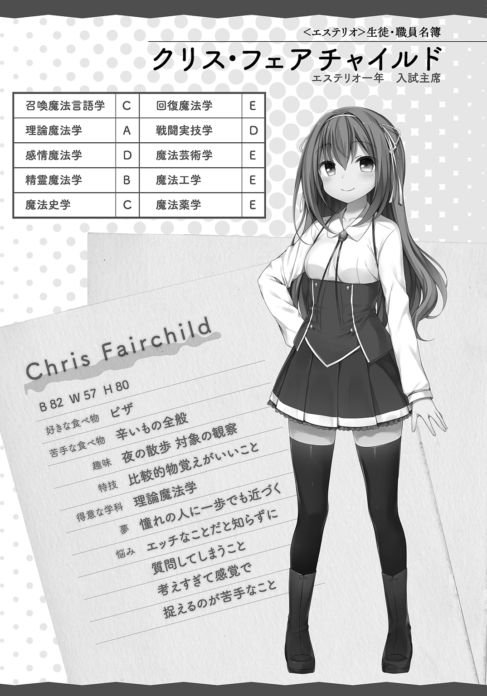

| 魔法学園〈エステリオ〉の管理人 ～最強勇者だった俺の美少女コーチングライフ～ | |
| 原雷火 | |
この本は縦書きでレイアウトされています。
また、ご覧になる機種により、表示の差が認められることがあります。
 ダッシュエックス文庫DIGITAL
ダッシュエックス文庫DIGITAL
魔法学園〈エステリオ〉の管理人
～最強勇者だった俺の美少女コーチングライフ～
原 雷火
序
死んだ日の事は今でも覚えている。
暴走した乗用車が法定速度を三十キロほどオーバーしつつ、歩道に突っ込んできた。
人間、とっさになんて動けない。
それが解った時には、ショーウインドウと自動車のフロントグリルに挟まれて......。
死んだ。死んだはずだった。
死んだ自分を、俺は上からのぞき見るようにしていた。
そのあとの事は割愛しよう。
遠巻きに向けられたスマホのカメラよ壊れろと呪ったり、車から降りてきてわめき散らす加害者が、どうみても薬かなにかやっていて、なんでこんなやつに殺されなきゃならんのだと憤ったり。
全部、過去の話だ。
こちらの世界に転生してから、もう――十五年も経っている。
もらい事故で死んだ俺は、現世の記憶を持ったまま、剣と魔法が支配する異世界に転生した。
しかも、特別な力を持った〝魔法使い〟の家系にだ。
現代世界の知識に加えて、血筋的な才能まで与えられたのだから、お膳立てとしては充分だった。
まあ、現代の知識や考え方ってのはほどほどで、子供の頃から中身だけは大人だったっていうのが、大きかったな。
赤子のうちから読み書きが出来るようになった俺は、魔法力が最も成長しやすい幼少期に訓練をしまくって、結果、魔法使いの力を限界まで引き出すことができた。
異世界は魔族と人間たちの戦争のまっただ中。
成長著しい俺は見る間に頭角を現した。
魔族と戦い、倒す度に強くなり、次々と強敵を撃破していった。
そして今まさに、魔族を統べる魔王と対峙し、追い詰め、トドメを刺そうというところなのである。
「勇者よ。我を滅ぼそうとも、我が意思を継ぐ者が現れ、必ずや復讐を果たすだろう」
呪いの言葉に耳を貸さず、俺は先ほど編み出したばかりの、七つ目の技を試すことにした。
相手が強ければ強いほど、俺は必殺技をひらめくことができる。
普通、必殺技と呼べるレベルにまで魔法や技を昇華させるには、達人でも最低十年はかかるらしい。
逆に言えば、魔王と刃を合わせるということは、それくらいの経験を数分で積むような事なのだ。
魔法力を放出し、束ね集めて強化された聖剣の切っ先。それを神速の踏み込みとともに、まっすぐ打つ。撃つ。穿つ。
一見するとシンプルな突きでしかない。もちろん、ただの突きなら何度となく、阻まれた。
同じモーション。同じタイミング。同じテンポで放つ......異質の一撃。
それは、魔王の分厚い胸板を貫いた。
魔王が幾重にも張った理論魔法による障壁や干渉など、ものともしない。
そういう〝式〟が込められた一撃だからこそ、必殺の名にふさわしかった。
反魔法剣――アンチマジックソード。
何度も同じ〝式〟の障壁を見せられたら、こっちだってその綻びくらい見つけるっての。
「グアアアアアアアアアアアアアアアアアアアアアアアアアアアアアア！」
薄暗い魔王城の奥に、断末魔の絶叫が響く。
魔王の肉体は聖剣から放たれる魔法力によって、内部から崩壊を始めた。
「たった一人の人間に......我が......我らが......」
高位魔族特有の、金色の瞳から光が失われる。虚無の闇へと魔王の肉体が沈み始めた。
俺は相手の胸から聖剣を引き抜くと、魔王に告げた。
「悪かったな......〝ぼっち〟で」
普通なら魔王を倒すまで、仲間と苦楽をともにして、出会いと別れを繰り返したりするだろう。
生死の境をさまようような過酷な展開や、甘く熱いラブロマンスなんかがあったって良さそうなものだ。
が、そういったものとは無縁だった。というか、無縁にしたのは俺自身である。
あえて〝ぼっち〟であることを選んだのだ。
この異世界の基準で考えると......俺は強すぎた。
あまりの強さに味方のはずの人間たちまで、この力の暴走を恐れるほどに。
がんばればがんばるほど、周囲の人間がドン引いていくのが肌でわかった。
ここ最近じゃ、まるで魔族を見るような怯えた視線で......もうこっちが気が気でなくなるっての。
子供なんて目が合っただけで泣き出すし！
いやいや、だからね、戦って勝つために最適化した結果が〝ぼっち〟だったんだよ！
〝ぼっち〟は戦術！
仲間を庇って隙を作るようなことがない！
街でも村でも王都でも、必要最低限のコミュニケーションで充分！
誰とも仲良くならないから、人質の取りようがない！
だから俺、この戦いが終わったら、しばらく隠遁するんだ。
それで、ほとぼりが冷めてから世界を旅するんだ。自由に気の赴くままに！
はは！ はははは！ きっと楽しくなるぞ！
俺が感傷と妄想に浸っている間に、魔王は事切れようとしていた。
消えかけの花火のように力なく、魔王が呟く。
「この......悪魔......ぼっち......め......」
「うるせぇ。それが魔王の言う最期のセリフかッ!? つうか、ぼっちは余計だろ！」
魔王城の広間には俺の声だけが反響するばかりで、言葉を返す者はもういなかった。
魔王は完全に消滅した。
勝った！ 勝利の喜びを分かち合う仲間はいないけど、俺は勇者として魔王を打ち倒したんだ!!
〝ぼっち〟万歳！
って、自分で思っておいてなんだけど、誰もいないって、やっぱり悲しいぞ！
１．出会い編 その１
勇者と呼ばれた少年は、魔王を討伐して姿を消した。
が、魔王が滅んでも、いつまた魔族の中から新たな魔王が生まれるかしれない。
とはいえ勇者が消息を絶ったため、世界はもう、勇者に頼ることはできなくなってしまったのである。
そこで、人々は勇者が勝ち取った平和と秩序を、自分たちの力で守ることに決めたのだ。
勇者の後継者を育成するため、軍学校を基盤として王都の郊外に魔法学園〈エステリオ〉が設立されたのは、人間たちが魔族との戦争に勝利した翌年のことである。
以来、エステリオには王国中から、魔法の才能を持った少年少女たちが集められ、魔法や戦闘実技を学んでいる。
俺は、そんな魔法学園で去年の後期から管理人の仕事に就いた。
まあ、管理人といっても大層なものじゃなくて、平たく言えば雑用係だ。
名前はレオ・グランデ。魔法力を持たない平民である。
わざわざ管理人の募集要項に「平民であること」なんて書かなくてもいいと思うんだけどな。いや、別に文句とかじゃないんだが。
そもそも、魔法が使えるなら、こんな雑多な仕事は誰もやらないか。
ここでの仕事に魔法はいらない。
備品の修理点検に、運動場の草刈りや、校舎内の魔力灯の取替えといった雑用が主な仕事内容だ。
他に、倉庫の整理や庭園造りに、清掃作業。
来客があればお茶の準備もするし、ちょっとした補修工事なんかは、お手の物だ。
時々学園内に紛れ込む害獣の駆除やら、ゴミの処理も請け負う。
この仕事を俺は気に入っている。
なにせ宿直室に住み込みＯＫなので、家賃が掛からないのがいい。
しばらく流浪の身だったから、帰る部屋があるってだけで嬉しかった。
そのうえ通勤時間もないに等しく、夏休みや冬休みまである。
そんなわけで、今朝も正門前で掃き掃除に精を出す。
四月に咲く桜はどこで見ても綺麗なものだ。
ただ、散った花びらをそのままにはしておけない。
俺は愛用の箒を振るった。ピンクの絨毯をかき分けて道を作る。
そのうち、登校する生徒たちの姿がちらほらと見え始めた。
エステリオは全寮制だ。三学年合計で六百名が、毎朝この道を通う。
一クラスは二十五名。
一つの学年につき八クラス。
生徒たちはそれぞれ、担任の名前を冠したクラスに所属するのである。
一年生担当の○○先生なら「一年○○クラス」という風な感じだ。
もし俺が先生だったら「一年レオクラス」かな。
おお！ なんかかっこいいかも。
まあ、そういうクラスが三学年分あって、教員二十四名で六百名の生徒を受け持っている。
生徒はみんなこの正門を通るのだが、俺のことなど気にも掛けない。
魔法力を持たない平民なんて、眼中にないって感じだ。
実際、成績を左右する教員にはきちんと挨拶をするし。
働き始めて最初の頃は戸惑ったけど、一ヶ月もしないうちに慣れた。
平民の管理人と仲良くなろうって奴がいたら、そいつはよっぽどの変わり者だ。
それに今日は特別な日――「担任選択」の日だった。
今日の選択がこれからの一年間を決めるのだから、緊張しないわけがない。
神妙な面持ちで登校する生徒を見送りながら、俺は掃き掃除を続けた。
エステリオでは、一年ごとに生徒が担任を選択する。
そこに「平等」はない。
試験の成績上位順に選択の優先権が与えられた。
新入生なら入試の成績。
今年、二～三年生になる連中は、昨年度の学年末試験の成績で優先権が決まるのである。
人気のある教員に生徒は集まる。
各学年で最も優秀な教員が持つ二十五の席は、プラチナシートだ。
よっぽどの事がない限り、順当に試験成績上位者の二十五名で埋まる。
順位の二十五番目と二十六番目とでは、天国と地獄らしい。
エリートクラスが埋まると、あとは生徒の好みで、ほどほどにばらけるみたいだ。
ただ、ばらけ方によっては、希望していたクラスに自分よりも成績上位者が入ってしまい、弾き出される不運な生徒がいたりもする。
希望していたクラスに入れなかった連中は、最終的に成績下位の生徒と一緒に〝寄せ集め〟られてしまう。
あぶれた連中の集まる底辺クラス。
卒業を控えた三年の〝寄せ集め〟なんて、教室の前を通る度にお通夜か葬式みたいな空気で、気の毒なくらいだ。
大概〝寄せ集め〟クラスの担任はクビ寸前のダメ教員か、経験のない新任教員なので〝寄せ集め〟が再起するなんてことは、そうそう起こりえないんだとか。
エステリオは「全てのクラスが平等だ」と言ってるけど――建前だ。
魔力灯の取替え一つとったって、エリートクラスじゃ少しでもチラつくようになったら、即交換。
で、そのチラついたやつがもったいないので〝寄せ集め〟クラスでほとんど点かなくなったようなものと、やっと交換する。
......なんて決定が総務部では普通に横行している。
底辺を置くことで、たとえエリートクラスになれずとも〝寄せ集め〟クラスにだけはなるまいと、がんばらせるという裏の方針があるんだろう。
まあ、ちょっとカチンときたんで、不調な魔力灯はこっちで調整して、きちんと使えるモノにしてから交換してやった。
〝寄せ集め〟クラスの生徒にも教員にも感謝されなかったけど。
いいんだよ。俺の好きでやったことだし、感謝されたくてしてるんじゃないんだから......。
ええい仕事だ仕事。清掃作業を続けよう。
掃き集めた花びらを大きなちりとりで掬うようにして、手押し車に積んだ。
落ちた花びらを山のように載せられるだけ載せて、運ぶ。
生徒用の昇降玄関前を素通りして、手押し車は校舎の建物脇にある、人気のない資材置き場にさしかかった。
人の話し声が聞こえて立ち止まる。
なにやら揉めているらしい。
見慣れない女生徒が物陰で男に手首を摑まれていた。
真新しい制服で、女生徒が新入生だとわかった。
明るい栗色の髪にエメラルドグリーンの大きな瞳が印象的だ。
魔法力を持っていると、容姿まで平民とは違ってくる。
とかく魔法力の影響で魔法使いの髪や瞳の色はカラフルになりがちだが、その女生徒の髪色はえもいわれぬ自然な美しさだった。
それでも宝石みたいな瞳の色が、彼女が魔法使いであることを雄弁に語っている。
そんな瞳をさらに見開いて、少女は男に抗議する。
つい見とれてしまうくらいの美少女だ。
怒っている顔さえ美しい。どことなく気品すら漂っていた。
「離してください。人を呼びますよ」
「好きにしたまえ。ただし、後悔するのは君の方だよ。クリス・フェアチャイルド君」
男の方は学園内で何度も見たことがあった。
銀髪に紅い瞳という風貌に、女性と見まごうほどの細身で肌も透き通るように白い。
女生徒たちの評価はミステリアスイケメンだが、俺は脱皮したての蛇みたいで苦手だった。
まあ、向こうは俺のことなんて眼中にもないだろうな。
エリートクラスの担任――ギリアム・スレイマン。
学園で五指に入る魔法使いだ。
確か本年度は一年生の担任だったか。
二人とも俺の存在にはまったく気付いてないらしい。
それにしても生徒の手首を摑むなんて、ギリアムはいったいどういうつもりだ？
俺は手押し車をその場にゆっくり置いた。
「何してるんだお前ら？」
人気のない校舎裏で、俺が声をかけた瞬間――エリートクラス担任のギリアムの肩が、不自然なくらい大きくびくついた。
そこまで驚くこともないだろうに。
「な、なんだね君は！」
「なんだもなにも、ただの管理人だけど」
「平民の雑用係風情が、いきなり話しかけるなど不作法ではないか」
「話しかける時は大概、いきなりだろ」
こっちは別に気配を消したりしてないぞ。
「黙れ平民。とっとと立ち去りたまえ」
「女生徒の手首を摑んで、どっちが不作法なんだ？ つうか年齢なら俺の方が上だろ。もう少し年上を敬えよ」
「何を馬鹿なことを。どこの世界に平民を敬う魔法使いがいるというのだ」
ギリアムのやつ、ずいぶんと呼吸が荒いな。
「落ち着けって。まあ、ここは見なかったことにしてやるから、その手を離してやんなよ」
ギリアムの白い顔が、あっという間に真っ赤になった。色白だからわかりやすい。
両肩をプルプルさせて、怒りを隠そうともしない。
「君は自分が何を言っているのか、わからないのかな？ 私は誰だ!? そう！ 私こそが、この学園で五指に数えられるエリート教員のギリアム・スレイマンその人だ!! 理論魔法Ａランクの天才魔法使いと会話できるだけでも、君はなんと幸運な男だろう。さあ、これ以上私の機嫌を損ねないうちに、今すぐ視界から消えたまえ。でなければ本当にこの世から、フッと消えることになるかもしれない」
まさかとは思うが、怒りにまかせていきなり魔法をぶっぱなしてくるなんてことは......まあ、ちょっとだけ注意を払っておこう。
と、思った矢先、少女――確かクリスって呼ばれてたっけ。クリスが摑まれていた腕を振り払った。
「いい加減にしてください。私だけならまだしも、平民を巻き込むなんて最低です」
ギリアムは血走った目でクリスを見据えた。
「君も口の利き方を知らないようだね。だいたい、入試で主席の君が、なぜ私のクラスに入ることを拒む？ 君の才能を伸ばせる教員は、一流の私だけだ」
「学ぶ意思さえあれば、クラスは関係ありません」
「解ってない。解ってないなぁクリス君。平民が魔法使いを目指すようなものだよ？ それは」
おい、なんでこっちに軽く目線くれてんだよギリアム。
普段は温厚な管理人さんの俺にも、聞き捨てならんことはあるんだ。
お前のクラスの魔力灯だけ全部チカチカするやつにしてやんぞコルァ！
クリスがさらに続けた。
「ともかく、私は貴方のクラスには入りません。それに担任はあくまでクラスをまとめるだけで、授業は各教員の方々が、それぞれ受け持つわけですし」
「いいかね？ 教員は、そのクラスの平均に見合った内容の授業や訓練を行うのだよ。もちろんエステリオの生徒である限り、理論魔法はこの私が教えよう。たとえ君が〝寄せ集め〟クラスの生徒だったとしてもね。しかし、よぉく考えてみたまえ。落ちこぼれた連中の平均に合わせた理論魔法の授業が、果たして君に必要なのかね？」
「基礎をおろそかにして応用はあり得ません」
「そういうことを言っているのではないのだ！ 他の生徒を切り捨てて、君のためだけの授業をしてあげようというのだよ。もちろん〝寄せ集め〟などではなく、エリートクラスでそうしようという提案だ。エリートクラスであっても、君のレベルについてこられる者が数人いれば充分だ。君はきっと、最高の作品に仕上がる。私が保証しよう」
なるほど。ギリアムにそこまで言わせるなんて、クリスは相当な才能の持ち主なんだな。
「お断りします」
意地っ張りというかなんというか。こういう奴、俺は嫌いじゃないぜ。
ま、本人も嫌がってるんだし無理強いはまずいだろ。
ここはビシッと、人生の先輩としてギリアムには言っておこう。
「この学園じゃ生徒が教員を選ぶのがルールだろ？ フラれた現実を受け入れろって。あんまりしつこいと本当に嫌われるぞ？」
「さ、ささささっきから君はなんだね？ 立ち去れと言ったはずだが？」
クリスがうなずいた。
「安心してください。もうすでに嫌っていますから」
うわー。容赦も取り付く島もないな。
よし、いいぞクリスもっと言ってやれ！
と、思ったらクリスは俺まで睨みつけてきた。
「貴方は私を助けたつもりでしょうが、助けて欲しいと頼んだ覚えはありません。ここはもう大丈夫ですから、早々に立ち去ってください」
うーん、手厳しさがこっちにも向けられたな。
全方位に嚙みついていくスタイルか。
上等だ。そんなこと言われちゃ引き下がれない。
クリスの瞳は......怯えていた。
怯える視線にだけは敏感なんだ。俺。
たぶんクリスは良い子だ。
平民の俺を巻き込まないために、この場から俺だけ遠ざけようとしている。
昔の自分を見ているみたいで痛ましいぜ。
クリスが首を傾げた。
「どうしたんですか？ さあ、早く」
「そういう意地ってのは、もっと自分が強くなってから張っても遅くないぞ。まだ子供なんだから、素直に大人を頼ってくれ」
「な、何を言ってるんですか？」
「自分じゃわかんないかもしれないけど、震えてるぜ」
「そんなことありません。それに......平民の貴方に頼ることなんて......」
俺はすうっと、息を吸い込み、言葉とともに一気にはき出した。
「平民舐めんな！ 例えば死体ごと消えるような『消滅』系の理論魔法でもな、使われた痕跡が残ることくらい知ってんだぞ。まあ、そもそもそのレベルの魔法が使える魔法使いなんて、学園の教員には五人もいないわけだが。もし、俺が消えたら容疑者は絞られるぜ。クリスは理論魔法が得意なんだろ？ 犯罪が行われても、お前になら立証できるはずだ」
クリスが目をまん丸くさせた。
うん、可愛い。ツンっとしてるけど、こういう表情は年相応だな。
「立証なんて......」
「最近の研究結果だと、理論魔法の構築式には個人差っつうか、書き方に微妙なクセってものが残るんだってな。なあギリアム先生？ 仮に俺が消された現場が見つかったとして、その痕跡を調査、照合した結果、誰かさんの構築式の書き方のクセが、ひょっこり浮かび上がるんじゃないか？」
魔法の才能がない平民だからといって、魔法の知識がないわけじゃない。
ギリアムの顔は真っ赤を通り越して、鬱血したような暗青色に変わっていた。
もう一押しだな。
「それとも火の精霊魔法を使って焼死体でもこしらえるか？ たしか自然精霊が起こす現象ってのは、理論魔法よりも痕跡が残りにくいんだろ」
「ふ、ふん！ 馬鹿馬鹿しい。エリート教員の私に、底辺平民を魔法で殺す理由などありませんよ」
「そうだよな？ 高給取りのエリート教員様が、一介の平民相手にブチ切れて、そんなことするわけないよな。あー、よかったよかった」
ギリアムがならず者なら、迷うことなく俺を消しているだろう。
けど、こいつは自分の地位も名誉も大切な人間だ。
ギリアムは鼻を鳴らすと忌々しげな表情を浮かべた。
「クリス君......これ以上、私を失望させないでくれたまえ」
捨て台詞を吐いてギリアムは去っていった。
「んじゃあ、俺は仕事の続きがあるんで」
手押し車を持ち上げると、クリスは俺の前に立ちふさがった。
「待って！ 貴方いったい何者なの？ 理論魔法に詳しい平民なんて、聞いたことないわ」
「エステリオの管理をやってると、いろんなクラスの授業が耳に入ってくるんだ。雑学程度の聞きかじりってやつだな。そもそも、さっきの魔法式のクセの話をしてたのは、当のギリアムだし」
「そ、そう......なの」
なんだかがっかりさせちゃったみたいだ。
俺が最新の理論魔法に精通していると、期待させたのかもしれない。
「どうしたんだ？」
「え、ええと......あの、あ、ありが......とぅ」
蚊の鳴くような小声の感謝を口にしながら、クリスは顔を真っ赤にさせてうつむいた。
「そういや自己紹介が遅れたな。俺はレオ・グランデ。エステリオの管理人だ」
「クリス・フェアチャイルド。専攻は理論魔法よ」
予鈴が鳴った。あと十五分ほどで朝のホームルームだ。
確か生徒は仮決めされた教室で待機だったな。
「まだ仮の教室だろうけど、案内しようか？」
「いいわよ別に！ 独りで行けるわ」
「まあそう言うなって」
にっこり笑う俺を見るクリスの顔には「断る方が余計に面倒」と書いてあった。
■クリス・フェアチャイルド エステリオ一年 入試主席
召喚魔法言語学＝Ｃ
理論魔法学＝Ａ
感情魔法学＝Ｄ
精霊魔法学＝Ｂ
魔法史学＝Ｃ
回復魔法学＝Ｅ
戦闘実技学＝Ｄ
魔法芸術学＝Ｅ
魔法工学＝Ｅ
魔法薬学＝Ｅ
クリスの教室は一階の一番端だった。
かなり奥まった場所にあって、講堂にせよ学食にせよ、トイレにしたってどこに行くにも一番遠い。
配置的に〝寄せ集め〟クラスの教室だ。
どの学年も〝寄せ集め〟クラスは立地的に不便な場所に隔離されがちだ。
この教室で一つ良いことがあるとすれば、外に出てすぐの所に焼却炉があって、ゴミ出しだけは楽ってことくらいか。
明らかに他のデメリットが勝ってるな。
まあクリスは優秀だから、エリートクラスでなくても、ほどほどレベルの高いクラスに入るだろう。
ここに来ることはもうないか。
教室に生徒たちが集まりつつある。
そんな教室には入らず、廊下に立って中の様子をうかがう女性の姿があった。
淡い緑色がかったショートボブの髪で、眼鏡をしている。
制服を着せれば生徒に紛れ込んでしまいそうな、幼い顔つきだ。
が、それとは正反対に胸の方は大変女性らしく、服の上からでも主張をしっかりしていらっしゃる。
眼鏡の女性は俺たちに気付いて、こちらに向き直った。
いかん、胸に視線が引きつけられる。顔を上げねば。
俺と目が合うなり彼女はあたふたとしだす。
「あ、あの、あの！」
「落ち着いてくれ。俺は学園の雑務をこなす管理人のレオ。こっちは新入生のクリスだ」
「は、初めまして！ わたしはエミリア・スタンフォードと言います！」
緊張で声が裏返ってるぞ。大丈夫なのか......この人。
クリスもどう接していいのか、戸惑ってるみたいだ。
一応念のために確認しておこう。
「見ない顔だけど、エミリアは先生なんだよな？」
「は、はい！ 教員試験に合格したばかりの、一年生教員です！ 専門は魔法史学です！」
なるほどな。
エステリオの教員試験は、ある意味では簡単で、それでも合格できない人間には絶対に合格できない難関だと聞いたことがある。
教員はそれぞれ専門分野をもっていた。
そのどれか一つでもランクＢ以上に認定されていることが、必須条件だ。
魔法学科のランクにはＡからＧまであって、Ａはその分野における最高レベル。Ｇは適性なし＝平民である。
エステリオの生徒は全教科最低でもＦ以上なので、実質ランクＦが底辺ってことになる。
ランクＧなんて論外だ。一つでも持っていたら入学試験さえ受けられない。
ちなみに、おおざっぱに分けると学科はこんな感じだった。
召喚魔法言語学＝召喚獣との会話に使う魔法言語を習得する。
理論魔法学＝魔法式によって発動する「現象」を操る魔法。その影響は時空にまで及ぶ。
感情魔法学＝人間の心に作用する精神魔法、幻術など。暗示や催眠魔法なども含まれる。
精霊魔法学＝地火風水の四元素を操る魔法。自然に関する魔法で分類が細かい。一部理論魔法学とも重なる分野。
魔法史学＝魔法学の歴史を学ぶ。他の魔法学の理解を深めるための補助的な役割。魔法文明遺産などの知識も含む。
回復魔法学＝生命力そのものに関する実践的な学問。エロい人間ほど適性があるという、根も葉もない噂あり。
戦闘実技学＝身体強化といった肉体の働きに関する魔法も含まれる。魔法力を利用した剣技や近接戦闘術などを学ぶ。肉体の強化は回復魔法学とも通じる分野。
魔法芸術学＝魔法史とも重なる部分あり。音楽魔法は特別な効果を持つものが多い。
魔法工学＝魔法道具の作成など。
魔法薬学＝魔法薬の調合技術を学ぶ。
エミリアの専攻する魔法史学は、正直なところ魔法の才能があんまり関係なかったりするんだよな。暗記力と勉強量の学問だ。
エミリアはクリスに視線を向けた。
「クリス・フェアチャイルドさんですね！ 短い間ですけど、よろしくお願いします！」
クリスの手を両手で包むように握って、エミリアはブンブンと上下に振るった。
新人の教員からも名字がすらっと出てくるあたり、入試でトップ成績だったクリスは新入生の中でも有名人なのかもしれない。
クリスは腕を上下にされるがままだ。眉尻を下げて困り顔でエミリアに言う。
「すみません。ちょっと痛いです」
「ご、ごめんなさい！」
ぱっと手を離すと、エミリアは胸を何度も上下させるように呼吸を整えた。
しかし、なんで教室に入らないんだ？ この先生は。
「そろそろ教室に入ったらいいんじゃないか？」
「ええと、まだミゲル・ノクターン君とアイリス・スチューダーさんが来ていません。もしかしたら、どこかで迷子になってるのかも。エステリオは広いですから。実はわたしも、結構迷子になるんです。お恥ずかしい」
照れ隠しのようにエミリアは笑った。
って、ちょっと待て。
「もしかして、クラスの生徒の顔と名前を覚えてきたのか？」
「そ、それくらいしかできませんから。一応、生徒さんそれぞれの得意な学科くらいまでは覚えてきました。クリスさんは確か......理論魔法でしたよね？」
「は、はい」
これにはクリスも驚いた......というか呆れたみたいだ。
もう少し確認をしっかりしておこう。
「なあエミリア先生。このクラス分けはあくまで仮のものだって、聞いてるよな？」
「ええ、知っています！ けど、ほんの少しの間でも、教室にいるのはわたしの生徒さんですから」
エミリアは、えへんと胸を張った。
自信たっぷりにたゆんと上下する胸に、またしても視線が吸い寄せられる。
――危険だ！
特に男子生徒には。
俺くらいの人生経験になると、これしきの事では動揺もしないのだが、若くたぎった情動が間違いを起こしてしまわないか心配になる。
エミリアは目を細めてクリスに促した。
「それじゃあクリスさんは席で待っていてください。席順は黒板に書いてありますから」
「あの......私の事......知ってるんですよね？」
「ええと......し、知ってますよ！ もちろん！ なんでも知ってます！」
エミリア先生、目が泳いでますよ。
あー、これはクリスの事も他の生徒と平等にしか知らないんだな。
もう少しつっこんで訊いてみるか。
「クリスが入試トップの英才だってことも、もちろんエミリア先生は知ってるんだよな？」
「えええええ!? そ、そそそそうなんですか!?」
噓が苦手ってレベルじゃないぞ。自白剤要らずだ。
クリスは俺を睨みつけた。事実を言っただけなのに、なぜ怒るのだ英才少女よ。
エミリアは肩を落とす。
「それじゃあギリアム先生のクラスですね。厳しい先生と聞いていますけど、クリスさんならきっと大丈夫です」
「え、ええと......ありがとうございます」
これにはクリスも苦笑いだ。ついさっき思いっきり拒否ったばかりだもんな。
辺鄙な立地の教室をあてがわれた新任教員となると、今年の一年生の〝寄せ集め〟担当は、どうやらエミリアってことらしい。
責任感とプレッシャーでぶっつぶれないで欲しいな。
生徒のことをきちんと考える良い先生になりそうな雰囲気があるんだし。
さてと、そろそろ始業の時間か。
ギリギリで生徒が二人、教室に滑り込んだ。
ミゲル君とアイリスさんだろう。二人とも目の下にクマがある。
今日の担任選択が相当プレッシャーになってるんだろう。
あっ......二人とも、クリスにガンつけていきやがった。
こいつらエリートクラスの当落線上か。クリスを意識するのも無理ないとはいえ、初対面の人間にガンつけるのはどうかと思うぞ。
思う以上のことはできないけど。
「それじゃあ俺はこの辺で。がんばれよクリス」
「べ、別に、がんばることなんてないわよ」
「エミリア先生も、困ったことがあったらなんでも相談してくれ。もしかしたら総務部を通すよりも、俺に直接言ってくれた方がトラブルが早く片付くかもしれんから」
「はい！ これからよろしくお願いします」
エミリアはぺこりとお辞儀をした。
胸が重力に引かれて今にもこぼれおちそうだ。
「ところで、エミリア先生は俺が平民だってこと、ちゃんと気付いてるよな？」
頭をあげるとエミリアは不思議そうな顔で、俺を見た。
「はい？」
「あんまり頭を下げられ慣れてないんだ」
生徒からは挨拶もされず空気扱いの俺である。
学園の空気を知らない新任とはいえ、いざ教員に人間扱いされると少しむずがゆい。
「これからお世話になるのに、お辞儀をするのは当然です」
クリスのやつ、目がまん丸だ。
驚いて目を丸くすると、猫やフクロウっぽいな。
魔法使いが平民に頭を下げるなんて、天地がひっくり返るような出来事だろうし、仕方ないか。
どうしたって平民も魔法使いも、お互いをそれぞれの色眼鏡で見てしまう。
エミリアにはそれがない。
たぶん相手が平民でも魔法使いでも、彼女は変わらないのだ。
よし！ エミリア先生の事は、出来る範囲内で俺がばっちりサポートしよう。応援したくなったぜ。
校舎内にチャイムの音が響き渡った。
クリスとエミリアが教室に入るのを見送ってから、俺は独り廊下を歩く。
さてと、そうだな。
通常授業が始まって忙しくなる前に、ゆっくり庭でもいじっておきますか。
■エミリア・スタンフォード エステリオ新任教員
召喚魔法言語学＝Ｄ
理論魔法学＝Ｅ
感情魔法学＝Ｄ
精霊魔法学＝Ｅ
魔法史学＝Ｂ
回復魔法学＝Ｄ
戦闘実技学＝Ｆ
魔法芸術学＝Ｂ
魔法工学＝Ｅ
魔法薬学＝Ｅ
講堂脇の庭園は、四月中旬からオールドローズが見頃を迎える。蕾も膨らんで、満開になるのが今から楽しみだ。
魔法薬学の教員に調合してもらった栄養剤のおかげで、植物の育成は順調だった。
剪定をしていると、講堂に向かって生徒たちが列を作り始めるのが見えた。
作業に夢中で気付かなかったけど、もう担任選択の時間か。
緊張の面持ちの生徒たち。その列の中から女の子が独り飛び出してきた。
「もしかして、この庭園、貴方が造ったの？」
クリスだった。列から出てきてしまっていいんだろうか？
「すごかろう褒め称えよ！」
「規模は小さいけど、結構良い趣味してるわね。これ、オールドローズ？」
「見頃は今月中旬だな。ところで列を離れるのはいかがなものかと思うんだが」
「いいのよ別に。あのね......これから担任を選ぶんだけど、その前に簡単でいいから、他の教員のことも教えて欲しいのよ」
「他のって？」
「今年の一年生の担当教員。プロフィールにはない裏の情報がいいわね。学園の管理人なら色々と知ってるんじゃない？」
生徒には事前に担任候補の情報が配られる。
紙切れに書かれたプロフィールだけでは解らない機密を、クリスは欲しがってるみたいだけど、まいったな。
「あー。そうだな。うーん、今年の一年の担任になる奴らって、俺の苦手な連中ばっかりでさ。平民ってだけで視線も合わせてくれない奴もいるし。中には普通に話してくれる教員も、いるにはいるんだけど......そいつらは今年、二年の担当だ」
魔法薬学教員のマーガレットもその一人だが、あいつも二年の担任だから一年のクリスには推薦できない。
それに専門が魔法薬だからな。理論魔法よりも実験や治験が得意なやつだし......。
クリスはきょとんとした顔になった。
「へー。意外ね」
「友達がいて悪いか？」
「そうじゃないわ。貴方にも苦手な人がいるってことが、意外だったの。ギリアムだって言い負かしたじゃない」
言い負かした奴をイコール苦手じゃないとするのは、どうかと思うぞ。
「あの時は誰かさんが助けを求めてたからな」
「それは......その......」
クリスは恥ずかしそうに顔を赤くさせた。もじもじと膝の辺りをすりあわせている。
「つうか、そろそろ中に入った方がよさそうだぞ」
講堂に向かう生徒の列が細りだしていた。全校生徒の収容を完了しつつあるらしい。
こんなところで、あんまり道草を食わせるわけにもいかないしな。
クリスは人差し指をピンッと立てた。
「それじゃあ最後に質問。エミリア先生ってどうかしら？ 直感で答えてちょうだい」
まず間違いなく〝寄せ集め〟の担当だし、教員としての経験もこれから積んでいかなきゃならない。ネガティブ要素を上げればキリがないだろう。
けど、俺の直感はこうだ。
「俺は嫌いじゃないぜ。きっと良い教員になると思う」
クリスの表情がどことなく柔和になった。
「そう。ありがとう。参考になったわ！」
進む生徒の列に戻って、クリスは一度俺に向けて手を振ると、講堂の中へと吸い込まれていった。
まさかエミリアクラスを選んだりしないよな。
クリスは〝寄せ集め〟が、どういうものか解ってない。
うーん、結果的にエミリアを薦めておいてなんだけど、ちょっと心配だ。
杞憂だといいんだが。
俺の杞憂は現実のものとなった。
学園内は騒然だ。入試トップのクリスが〝寄せ集め〟担当と目される、エミリアクラスを指名したのである。
余談だが、おかげでギリアムクラスに空席が出来て、ミゲル・ノクターンとアイリス・スチューダー両名は、揃って希望していたエリートクラス入りをしたらしい。
ま、それはともかく。
天才の考えることは訳がわからない。最高成績が最底辺へ。
学園内はそんな話題で、どこもかしこも持ちきりだった。
エミリアクラスを選んだのはクリスだ。
けど、選ぶための判断材料を与えたのは俺である。
クリスに選ばれたエミリアには、出来る範囲内で協力したいと思うんだが......。
まいったな。トラブルの予感しかしない。
クリスは〝寄せ集め〟にとって、明らかにカテゴリーエラーな異物になるだろう。
そして憎らしいほどに嫌味な存在だ。
誰もが望むプラチナチケットを破り捨てたわけだからな。
俺が昨年見た〝寄せ集め〟の光景といえば、お互いの傷を舐め合うような、停滞した空気だった。
一度はまり込めば二度と立ち上がれない。そういう場所だ。
一年浸かれば低いレベルに合わせた授業によって、他のクラスとの差は歴然となる。
エリートクラスの背中なんて、手を伸ばしても届かない遙か遠くの星のような存在だ。
一番下にいて何が苦しいかといえば、それは「上を見て目指すこと」だと思う。
手が届かないことに絶望し現実に打ちのめされる。
下を向いてさえいれば、そんな苦しみからは解放される。
弱い自分を受け入れて諦めれば楽になる。
クリスとは出会ったばかりだけど、ギリアムの誘いを突っぱねる気位の高い彼女が〝寄せ集め〟になじめるとは思えなかった。
それでも最悪、クリスがクラス内で孤立すれば済む話だが、そうなると今度はエミリアが耐えられない。
なんとかしようと躍起になって、エミリア自身が潰れちまうかもしれない。
以前のように〝ぼっち〟なら、人間関係で悩まないんだけどな。
って、何を弱気になってるんだ俺は。
ともかく放っておけない。この学園の管理人さんはお節介焼きなのだ。
教員室のゴミを回収して焼却炉に運ぶついでに、俺は一年エミリアクラスの様子を見に行くことにした。
一旦ゴミを外の焼却炉において校舎に戻ると、エミリアクラスの前で俺は立ち止まった。
教室の扉は半開きだ。中の様子が垣間見える。
「ふ、二人とも落ち着いてください」
エミリアが震えた声で、二人の女生徒の間に割って入った。片方はクリス。もう片方は......。
「つーかさー。先生どっちの味方なわけ？」
ふわっとしたボリューミーな金髪に、小麦色に焼けた肌の少女がクリスを睨みつける。
しゃべり方のイントネーションも独特だ。それに派手というか、ちょっとケバめのメイクをしていた。
エミリアは「ど、どっちの味方とかありません。せ、先生はみんなの味方です」と、怯えた声で言う。
それで金髪褐色少女は余計に目尻を吊り上げた。
「はああッ!? みんなの味方なら、こいつの肩持つのおかしーじゃん！ みんなメーワクしてるし」
教室内は、そうだそうだと言わんばかりの生徒が半分。残り半分は「どーでもいい」という感じだった。
高望みして希望クラスから弾かれた連中と、入試成績ワースト連中の〝寄せ集め〟らしいっちゃ、らしい。
エミリアもどうしていいのかわからないようだし......。
俺は堂々と教室に踏み込んだ。
「うーっす！ エミリア先生。何かあったのか？」
「レオさん!? あ、あの......これはその......」
まずいところを見られた。みたいな顔をエミリアにされてしまった。
「あー、ケンカか？ ケンカは良くないぞ。おっと、エミリアクラスの諸君。自己紹介しておこう。俺はレオ。学園の管理人だ。よろしくな！」
明るく元気に自己紹介した俺を、生徒たちはことごとくスルーした。
まあ想定内だ。
俺はクリスに視線を向け直した。
「で、ケンカの原因はなんだ？」
「私は別に......。彼女が語っていた召喚魔法言語の構文に、間違いがあったから指摘しただけよ」
金髪褐色少女がクリスに吠え掛かる。
「別に構文とかちょっと違ってても伝わるしー！ っつうかさぁ......誰もあんたとなんて絡みたくないって、空気でわかんないわけ？」
二人の口論を収拾できず、眼鏡の新任教員は目尻に涙をため込んだ。
エミリア先生。泣くな。
これくらいの事は教員をやってりゃ日常茶飯事だぞ。
俺は金髪に訊いた。
「お前、名前は？」
「はぁっ!?」
甲高い声とアッシュグレーの瞳で威嚇されたが、小動物がいくら牙を剝いても恐くない。
よく見れば顔立ちも可愛いじゃないか。
アイシャドーもつけまつげも、なくても全然いいと思うぜ。
「名前だよ。教えないってんなら、変なあだ名つけるぞ。そうだな......ライオン風ポメラニアンとかどうだ？」
わりと特徴を捉えてると思うんだが、彼女は全身をわななかせた。怒ったのか？ 虎の尾ならぬ、ライオンの尻尾を踏んじまったのかもしれない。
「ぽ、ポメラニアンとか......かわい......って、違うし。あたしはプリシラ・ホーリーナイト......って、ばっかみたい。何、名乗っちゃってんのあたしってば」
「プリシラか。よろしくな」
「つうか管理人がなんなの？ 意味わかんない」
「そう邪険にすんなって。俺はエミリア先生と約束したんだ。何か困った事があったら、なんでも相談してほしいって。で、通りかかったら困ってそうだったんで、こうして相談に乗りに来た」
「はああああっ!? あんた平民でしょ？ マジむかつくんだけど」
「おう、むかつけむかつけ！ お前のような小娘にいくらむかつかれようと、俺は一向に構わないぞ」
さてと、どうしたもんか。
仲裁に入った以上どうにかするのが大人の責任の取り方だ。
「ところでプリシラは召喚獣が好きなのか？」
クリスが構文の間違いを指摘したことに、プリシラは怒った。
クリスをあえて無視しなかったところをみると、彼女は召喚魔法言語に自信があるのかもしれない。
「はあっ!? す、好きだけど......って、何急に訊いてるわけ？」
「やっぱりな。召喚魔法言語って、必ずしも正しい言い方をしなくていい。相手も言葉を知ってるわけだから、こちらの間違いに気付いて理解してくれたりもする。それに一流の召喚魔法使いになると、召喚獣に合わせて表現の方法を変えたりするんだろ？ わざと言い間違えると、相手が思わず笑っちゃう！ みたいな」
クリスが不思議そうに俺を見つめた。興味津々って感じだ。
「それ、本当なの？」
「ああ。その反応からして、クリスは魔法言語を学んだことはあっても、召喚魔法を使ったことがないだろ」
クリスのエメラルド色の瞳が、くりんと丸くなった。どうやら図星みたいだな。
「ど、どうして知ってるのよ!?」
「構文の知識があれば、試験で良い点はとれる。けど、召喚獣へのジョークの言い方は、座学じゃ教わらないもんな」
今度はプリシラの目が点になった。
「は、はああああ!? 平民のくせに、なんなのこいつ？」
「管理人をやってると、学園内のいろんな場所で作業をするんだ。行った先でやってる授業が、自然と耳に入ってくるんだよ」
エミリアもうんと頷いた。
「たしか魔法史における偉大なる召喚魔法使いの一人、ディアナ・セレスは幼少期からずっと口べたでしたが、召喚魔法言語は流ちょうで、しかもユーモアに富み、召喚獣たちを話術で魅了したそうです。人語ではなく、召喚魔法言語で会話する方が得意だったとさえ言われています。プリシラさんの召喚魔法言語は、きっと実践的なものなんですね。け、けど、クリスさんの指摘も正しいです」
エミリア先生は風見鶏みたいに、クルクルと視線を行ったり来たりさせている。
こりゃあ「どっちの味方だ！」と、もう一波乱ありそうだ。
そう思った矢先、クリスが突然、プリシラに頭を下げた。
「ごめんなさい。私が勉強不足だったわ」
「えっ!? は、はああああああああ!?」
プリシラのやつ、対処に困って固まってるぞ。
クリスは頭を下げっぱなしで続けた。
「私の知識はレオが言った通り、机の上から外に出たことがないものだから」
「べ、別に、そっちの指摘だって......間違ってなかったし」
沈黙が訪れた。
まるで教室中の空気が凝固したみたいだ。
ここは部外者の俺がどうにかしてやろう。
エミリアがどっちに肩入れしても角が立つしな。
さあ生徒たちよ、憎みたければ俺を憎むが良い！
「ハッハッハ！ 入試主席の君が、底辺に頭を下げるとは愉快なことになっているねぇ」
俺じゃないぞ！ 振り返るとそこには二足歩行する白蛇......もとい、エリート教員様のギリアムが目を細めていた。
いや、蛇に足はないけど本当にそういう雰囲気なんだ。
「さぞや居づらいでしょう。今からでも私のクラスに来ませんか？ 特別に手を回してあげても構いませんよ」
こいつ、どんだけ権力持ってるんだ？ そんなこと可能なのか？
しかし、ギリアムなら自分のクラスの気に入らない生徒をいびり倒して、無理矢理空席を作りかねない。
そこまでしてクリスを自分のクラスに入れたがる理由はなんだ？
優秀な生徒ってだけで、ここまでするのか？
ギリアムは続けた。
「底辺に下げる頭があるのに、まさか、この私に下げる頭がないだなんて言いませんよね？」
ため息を吐きながらクリスが頭を上げる。
「私は尊敬できる相手にしか、下げる頭を持ち合わせていません」
「ほほーう。まだ意地を張って掃き溜めの鶴を気取りますか」
底辺だの掃き溜め扱いされて、教室内はにわかにざわつきだした。
ギリアムが口元を緩ませる。
「おやおや、我々はあまり歓迎されていないようだ。ですが、せっかくこんな辺鄙な所まで来たのですから、自己紹介なさい」
ギリアムの陰から小柄な少女が、音も立てずに姿を現した。
黒髪は艶やかなストレートで、背中を覆い隠すくらい長い。
黒曜石色の瞳が射貫くようにクリスを見据えた。
「私はシアン・アプサラス。都合により、先ほどエステリオに着任した」
クリスが怪訝そうに訊く。
「着任......って？」
「失礼。言い間違えたようだ」
ギリアムが声を上げて笑った。
「ハーッハッハッハ！ 着任とは、いやはや王国軍師の名門アプサラス家のご息女らしいですな」
軍師のアプサラス？ あー。そういえば旅に出ている間に、噂くらいは聞いたことがあったな。
確か、エステリオの創設に携わった四賢人とかいう連中のうちの一人だ。
魔王が倒れてから一年でエステリオを立ち上げたんだから、よっぽど優秀な一族なんだろう。
「ギリアム先生。笑うことはなかろう。それに私はアプサラスの実子ではない。息女などと大層な言い方は止めて頂きたい」
「これは失礼いたしました。ちなみに彼女は入試において次席です。私のクラスに入学することは事前に決まっていましたから、彼女がギリアムクラスに所属していることに、手続き上の不備などなかったことを、ここに明言しておきましょう」
誰も聞いてないから明言されてもな。
つうか、その次席を連れて何しに来たんだ？
俺の疑問をエミリアが代弁した。
「あ、あの、ギリアム先生。ご用件をうかがいたいのですが？」
「用件というほどのことではありません。ただ新任教員のエミリア先生が、ご存じないこともあるかと思いましてね。親切心から、ささやかながらアドバイスをしようと思いまして」
「そ、それは恐縮です」
「まあまあ、そんなに硬くならず。ところで......近く行われる交流戦のことはご存じですよね？」
「は、はい。学年別で、各クラスの代表者三名が、魔法を使った模擬戦闘で競い合う行事ですよね？」
ギリアムはにんまりと口元を緩ませた。
「ええ、良く勉強なさっていらっしゃる。さて、この交流戦なのですが、少なからず成績に影響するものでしてね。このシアン君にも参加してもらう予定なのですよ。ちなみに彼女の専門分野は戦闘実技で、ランクはＢです。今すぐにも教員試験をパスできる実力とだけ、申し上げておきましょう」
俺はゆっくりと首を傾げつつ、口を開いた。
「彼女一人が勝っても、他の代表二名が負けたらどうするんだ？」
「また貴方ですか。管理人には関係のない話でしょう？」
俺はギリアムの声を無視して質問を続けた。
「というか彼女がクリスと当たったら、勝負の行方はわからないんじゃないか？」
クリスが不意をつかれたような「えっ!?」って顔になった。
お前が代表入りしないで誰がなるんだ。まったく。
ギリアムは小さく唸った。
「それは......だな。か、関係ないのだよ！」
エリート教員様が言いよどむあたり、どうやらクリスなら、シアンと良い勝負ができるらしい。
ギリアムは軽く前髪を手櫛で搔き上げた。
「いやはや、平民とは会話をするだけで疲れてしまいますね。仮にシアン君がクリス君と引き分けたとしても、他二名の実力差は一目瞭然でしょう？ むしろ、大怪我をしたり恥をかく前に、試合放棄をした方が身のためだとは思いませんか？ 他のクラス相手ならいざ知らず、エリート揃いの私のクラスと戦うことになったなら、試合開始と同時に白旗を揚げても、誰も責めたりはしませんよ。むしろ同情を買うんじゃないでしょうかね？ エミリアクラスの生徒は誰も傷つかず、こちらとしても余計な労力を掛けずに済む。まさに理想的な相互利益関係が構築できるじゃありませんか？」
完全にケンカを売ってやがるな。
いや、これはもうエミリアクラスにトドメを刺しにきたってところか。
受け入れたら、このクラスの生徒は今後もずっと負け犬だ。
俺は極力、感情を押し殺して言う。
「成績だけじゃ計れない強さってもんがあるだろうに」
「だから、なぜ雑用係の平民が口を挟んでくるのですか？ 私はエミリア先生に提案しているんです」
エミリアはうつむいていた。全身をわななかせている。
こんな言い方をされて、悔しいだろう。
学園内の有力者に脅されて恐いだろう。
けど、ここでエミリアが折れちまったら、俺にはどうしてやることもできない。
あくまで彼女の手伝いに来てるんだ。
だから頼む。
頼むエミリア。顔を上げてくれ。
■シアン・アプサラス エステリオ一年ギリアムクラス 入試次席
召喚魔法言語学＝？？
理論魔法学＝？？
感情魔法学＝？？
精霊魔法学＝？？
魔法史学＝？？
回復魔法学＝？？
戦闘実技学＝Ｂ
魔法芸術学＝？？
魔法工学＝？？
魔法薬学＝？？

２．出会い編 その２
エミリアはゆっくりと息を吐くと、垂れていた頭を上げてじっとギリアムを見据えた。
「お、お断りします」
教室内がざわめいた。
よし！ よく言ったエミリア先生！
残念なことに、生徒の中には日当たりの良い窓際の席で、大あくびをしながら机につっぷして居眠りしているやつも見受けられるけど。
予想していなかった答えに、ギリアムが苦虫をかみ潰したような顔をした。
ザマアッ！ である。
「ほっほう。いや、良く聞こえませんでしたな」
「もし、戦うことになったら、胸をお借りします」
案外肝が据わってるなエミリアって。
もしかしたら、やけっぱちなだけかもしれないけど。
さすがにギリアムも二度は訊き直さなかった。
「本当に今年は賑やかで、楽しい一年になりそうですね。ハッハッハ。その言葉、もはや撤回はできませんよエミリア先生？ それにクリス君も」
クリスがギリアムの顔を指さした。
「そっちこそ、負けて大恥を晒す覚悟はできてるのかしら？」
クリスだけでなく、プリシラまでギリアムに......中指を立ててみせた。
おいおい顔を指さすのもアレだけど、中指は女の子としてまずいだろうに。
「さっきからキモイんだよ消えろよクソが」
うわー。なんということでしょう。
さっきはエミリアがいる手前、あれでもプリシラ的には抑えめな表現だったのかもしれない。
彼女はギリアムを完全に敵と認識したみたいだ。
沈黙を守っていた入試次席のエリート生徒――シアンが、クリスの腕を払いのけた。
「教員を指さすのは敬意を欠く行為ではないか？」
「言ったはずよ。尊敬できないって。敬意を払って欲しいなら、それに見合うだけの言動と行動を要求するわ」
クリスもシアンも互いに引かず、睨み合う。
ギリアムがゆっくり息を吐いた。
「それでは、対戦を楽しみにしています。が、はたして、この教室で代表者三人を集められますかねぇ？ さて、そろそろ行きましょうかシアン君。ここにいると負け犬の臭いが染みつきそうですし」
「了解した。失礼する」
言いたい放題言って、エリート教員と入試次席の秀才は去っていった。
瞬間――エミリアの頭がふらふらっとなる。俺はとっさに彼女の腰の辺りを腕で支えた。
誰も動けなかったな。まあ、とっさに動ける人間の方が少ないか。
「大丈夫か？ エミリア先生」
「す、すみません。緊張が解けたら急に......ありがとうございます。ご心配をおかけしました」
そっと支えていた腕を離す。
まだちょっとエミリアの足下はおぼつかないな。
エミリアは先生として、精一杯の勇気を生徒たちの前で示したんだ。
立派だった。
俺が考えてる以上に良い先生だ。
クリスが心配そうに訊いた。
「エミリア先生、大丈夫ですか？」
「ええ、クリスさんこそ、本当にいいんですか？」
「これは私への挑戦状でもありますから、先生は気にしないでください」
ギリアムの訪問には、クリスへの個人的な嫌がらせも多分に含まれていたと思う。
さてと、交流戦の代表者の一人は決まったようなものだけど......。
教室内を見渡すと、まるで怯えた羊たちの群れと対峙しているような気分になった。
いや、一人だけ......窓際でつっぷしてる、ひなたぼっこ爆睡青髪ポニーテール少女だけは、相も変わらず気持ちよさそうに寝入っているな。
怯えていないのは彼女くらいか。
エミリアは生徒たちの反応に、またしてもうつむいてしまった。
俺が担任なら戦闘実技のランクが高い生徒をピックアップして、実戦経験のありそうな奴を指名するんだが......。
無理に指名できないのはエミリアの優しさであり、弱さだ。
この停滞した重たい空気をうち消したのは、意外な人物だった。
「せ、先生。あのさ......あたし、代表に立候補する」
その声の主はアッシュグレーの瞳で真剣に訴えた。
「む、無理はいけませんプリシラさん。あの......その......」
言いよどむエミリアにプリシラは語気を強めた。
「無理なことくらいわかってる！ 戦闘実技は限りなくＧに近いＦだし、他の学科もＦばっかりだし......補欠入学のあたしが、勝てるなんて思ってないけど......言われっぱなしじゃ悔しいし！」
補欠ってことは入試でこぼれたのが、なんらかの理由で欠員が出たので拾い上げられたのか。

つまり彼女が今年の新入生二百人の中の最下位ってこと。
プリシラは目尻に涙をため込んで、クリスに詰め寄った。
「あたしは負けてもいいけど、あんたともう一人が勝てば、あいつらの鼻をへし折れるんでしょ!?」
「え、ええと......」
クリスも驚いて返事に詰まっている。
負けも覚悟の上で人数合わせに立候補するなんて、プリシラはよっぽど腹にすえかねたんだ。
なんとかしてやりたいな。
学園の管理人としてじゃなくて、一人の人間として。
そう思ってみても、あと一人。
もう一人の協力が不可欠だ。
羊たちの群れに狼は眠っていないんだろうか？
よし。
ここは......一肌脱ごうじゃないか。
俺は教壇の上に立った。
「諸君。安心しろ。俺が本気で協力する。だから勇気を持って立ち上がってくれ！」
生徒たちから、しらけた視線が次々と俺に突き刺さった。プリシラまで俺を睨んでくる。
「つうか、あんた平民だし。教員でもないのに何を協力できるわけ？ 魔力灯の交換とか、掃除じゃないんだし」
エミリアも困り顔だ。
「無理しないでくださいレオさん。お気持ちだけでも充分ですから」
二人とも信用ないなぁ。
いや、まあこの短時間に信頼されるような働きはしてないけど。
なのにクリスだけは俺を一心に見つめていた。
小さく結んだ桜色の唇をゆっくり開く。
「そこまで言うなら証明してちょうだい」
彼女の声は凜として、真剣のように研ぎ澄まされていた。
喉元に切っ先を突きつけられたような殺気含みの言葉に、背筋がブルッと震える。
こういう感覚は久しく味わってなかったな。
「ああ。証明してやろうじゃないか。魔法の力が低くても工夫次第で戦える。ましてや平民の俺が、入試トップのクリスから一本取るようなことがあったらどうだ？」
教室内が......ざわついた。
初めて俺の言葉が生徒たちに届いた気がする。
もちろん、肯定的な反応じゃないことくらい見ればわかる。
困惑と疑いと馬鹿な平民を蔑む目だ。
それでもいい。耳を傾けただけでいい。
クリスが俺の顔を指さした。
「大口を叩いたわね。平民」
俺はクリスの顔を指さし返す。
「俺はこの場でクリスに試合を申し込む！ 三十分後に第三闘技場で勝負だ。エミリアクラスの生徒は、全員見に来るように」
「その勝負、受けて立つわ。私はギリアムクラスに勝ちたいの。そのためにも、貴方の本当の力を見極めたいから......一切手は抜かない」
俺とクリスは同時に腕を下ろした。
これで戦う当人同士の合意は成ったな。となれば次は担任の許可だ。
「構わないなエミリア先生？」
エミリアは俺とクリスの間で視線を行ったり来たりさせていた。
「え、ええと......あの......ええとぉ」
クリスがエミリアに歩み寄る。
「やらせてください！ 先生！」
最終確認のようにエミリアが俺を心配そうに見つめた。
「エミリア先生は、さっき勇気を見せてくれた。今度は俺の番だ」
「どうか本当に無理だけはしないでくださいね」
これでエミリアの承諾も得られたな。
たぶん平民の俺が身を挺して、この教室の羊たちに「どんな劣勢でも諦めない姿勢」を示すことで、誰かの心に火をつけようとしている。
とでも受け止められたんだろう。
まあ半分当たりだ。
話がついたところでプリシラが俺にほほえみかけた。
「レオって馬鹿なんだ」
おっ！ 名前で呼んでくれるとは!? ちょっと嬉しい。
ははーん、さては俺のかっこよさについに気付いたか？
「惚れるなよ」
「いや、全然ないから。マジウケルんですけど」
左様ですか。
さてと、久しく使っていない筋肉を動かしますか。
脳も目も肉体も、軽く馴らしておかないとな。
■プリシラ・ホーリーナイト エステリオ一年 補欠入学
召喚魔法言語学＝Ｄ
理論魔法学＝Ｆ
感情魔法学＝Ｅ
精霊魔法学＝Ｆ
魔法史学＝Ｅ
回復魔法学＝Ｄ
戦闘実技学＝Ｆ
魔法芸術学＝Ｅ
魔法工学＝Ｆ
魔法薬学＝Ｅ
第三闘技場はドーム型の屋内施設だ。
観覧席にぐるりと囲まれた中央ステージ上で、一対一の公式試合が行われる。
エミリア先生の名前を出して、総務部に利用申請を出すとあっさり許可が下りたのだが、それにもきちんと理由があった。
本日の利用予定がないことを俺が知っていたからだ。
本当は第四闘技場が良かったんだけど、あいにく別のクラスが押さえていた。
あっちの方が頑丈なんだよなぁ。
第三闘技場の中央ステージに使われているのは、一般的な石材である。
場外部分には、落下の衝撃を和らげるために砂が敷かれていた。
ステージは円形で角が存在しない。
その直径は五十メートル。
両端に俺とクリスが立つ。
魔力灯の照明がステージを照らしだし、客席は暗く息を呑むように静まり返っていた。
俺はステージ端から中央に向かって、歩みを進めながら告げる。
「試合は交流戦公式ルール。武器使用は可。ただし、魔法武器の安全装置を使用した、非殺傷モードに限定する。魔法の暴発などで相手を殺してしまった場合と、ギブアップ宣言をした場合は敗北。ステージの場外に相手の身体の一部を触れさせるか、気絶などで相手を戦闘不能状態にした者が勝者だ。戦闘不能や、そのほか細かいルールに関する判定は、すべてエミリア先生にしてもらう」
「は、はい！ わかりました！」
ステージ下の場外ゾーンでエミリアが返事をした。
さらに十メートルほど進んで、俺はクリスと対峙する。
「本当にいいのね？ 今さら手を抜けなんて言われても困るわよ」
「お手柔らかに頼むぜ」
「ところで......なんで箒なの？」
俺の武器は、普段から掃除で使っている愛用の逸品だ。
「使い慣れた道具には力が宿るものだからな」
「そう......まあいいわ。こちらは理論魔法使いらしくいかせてもらうから」
彼女が手にしていたのは円形計算尺型の魔法補助装置だ。
俺には使い方がさっぱりわからないんだが、平民の旅人があれを持っていただけで、野盗を追い払ったなんて逸話まであった。
野盗には理論魔法がなんなのか理解することはできない。
だが、理論魔法使いの象徴とも言える計算尺の持ち主が、人知を超えた恐ろしい存在だということは広く知られている。
不意に客席から女生徒の声援が俺に向けられた。
「死んだら葬式くらいは出てあげるよー！」
プリシラだ。なんて縁起でもないことを言うんだ、まったく。
「うるせぇ！ 試合は殺し合いじゃないんだぞ！」
「あっ！ せっかく応援してあげるのに、うるさいとか何その言い方？ チョー感じ悪いんですけどー」
葬式なんて言い出すお前だって充分感じ悪いだろうに。
ま、試合前の緊張をほぐそうと、彼女なりに気を遣ってくれてんのかな？
さてと――
呼吸を整えて俺は箒を正眼に構えた。
「準備は整った。開始の合図をしてくれ」
クリスも頷く。
「お願いします。エミリア先生」
エミリアは、ここまできても俺が心配みたいだ。
俺がじっと見つめると、観念したようにうなずいた。
「わ、わかりました。それでは......始めてください！」
年甲斐もなく、少しだけ緊張して......かすかにわき上がる高揚感に俺は興奮を覚えていた。
試合開始の合図と同時に、俺は神速の踏み込みでクリスの懐に入るなり、箒で胴を薙ぐように一閃した。
理論魔法の弱点は発動までの時間だ。
理論魔法潰しの最も有効な手段。
それは「使わせない」ことに尽きる。
戦闘実技を専攻する生徒なら、理論魔法使い相手には必ずこの手を使ってくるだろう。
俺の一撃で吹き飛んだクリスだが、その身体が空中でスローモーションがかった。
慣性制御か。
攻撃を受けながら魔法式を構築、発動させるなんて入試トップは伊達じゃない。
着地と同時にクリスは身構え直した。相対距離は二十メートルほどだ。
これ以上離れれば理論魔法に有利。
距離が縮まれば、間合いは戦闘実技に有利に働くだろう。
「っと......驚いたわ。平民の中には魔法の力を借りずに、肉体の鍛錬のみで魔法使い並みに戦闘実技を高める人間がいるらしいけど、貴方がそうだったなんて」
「そういう連中もいるみたいだな」
計算尺を回しつつ、クリスの視線は俺を捉え続けた。
会話をしながら時間を稼いでいる間に、もう魔法式の構築か。
しかも同時に三つも展開するなんて――魔族かよ。
一つは明らかに防御用だ。クリスを囲むように左右と後方に展開する斥力場だった。
もう一つをクリスは自身の目の前の地面に配置。最後の一つはその上空だ。
俺が突っ込んできたら、正面に設置したトラップで浮かせて、空中に展開中の魔法式で場外にぶっ飛ばすっていう算段だろう。
左右や後方への回り込みには、斥力場で対応する......か。
観覧席の何人がクリスの魔法を認識できているんだか......。
高度な理論魔法になるほど、並の魔法使いには、それを見ることさえできなくなる。
意味がわからなければ存在を認識できないってことだ。
斥力場の魔法式はランクＣ。
正面と上空の魔法式はランクＢってとこだろうな。
俺は地面を蹴った。
そして勢いをつけて箒を投擲する。
手投げ槍のように放たれた箒は、クリスの鼻先に触れる直前でぴたりと静止した。
そのまま箒は重力を反転させたように、空中めがけて〝落下〟する。
重力反転の魔法式だ。
その落下の頂点で、力の向きを変更する魔法式が発動し、箒はステージ場外に飛ばされ砂の地面に突き刺さった。
「噓でしょ......まさかトラップがあると読んでたの？」
こらこら、驚くふりをして、正面に斥力場の魔法式を構築するなよクリス。
俺は魔法式が完成する前に彼女の眼前に飛び込むと、掌で胸を押すようにした。
ふにょん
と、柔らかい感触が掌に残る。
「きゃああああああああああああああああああああ！」
あっ！ やばい。軽い掌打のつもりだったんだが、久しぶりすぎて手加減しすぎた。
しかし......。
片手に収まるくらいの大きさで、なんともさわり心地の良い感触だ。
クリスがバックステップで距離を取ると、計算尺を回転させながら俺を睨みつけた。
「よくも......だ、誰にも触られたことないのに......しかも、みんなが見てる前で......恥ずかしすぎるじゃない！」
「わ、悪い！ 今のは事故なんだ！」
「問答無用よ！」
あっ......やばい。
クリスの構築する魔法式には見覚えがあった。
あれは「消滅」系。ランクＡの魔法式だ。
いや、おかしいだろ。ちょっと胸に触れたくらいでその魔法を使うなんて！
このままじゃ殺される。
魔法式に干渉する時間が......ッ!?
瞬間、俺の足下から「ふっ」と、あるべきものが消えた。
突然の浮遊感に俺は崩れ落ちる。まるで下半身がなくなったみたいだった。
倒れ込むと、そこは......砂地だった。
痛みはない。
クリスが完成させた魔法式は〝彼女が立っている一ブロック以外のステージ石材を消滅させる〟というものだった。
おかげで俺の下半身は健在である。ほっとした。
うーむ、俺もまだまだだ。
あれしきのことで取り乱してクリスの魔法式を読み違えるなんて。
ところで......これって場外負けになるのか？
倒れたまま顔だけ上げて、俺は審判を務めるエミリアを見つめた。
「え、ええと、戦闘続行不能により、この勝負は引き分けです！」
エミリアが宣言するとクリスが「えっ!?」という顔になる。
「エミリア先生！ 私の勝ちじゃないんですか？」
エミリアはフルフルと首を左右に振った。
「先ほど公式試合のルールブックにさっと目を通したのですが、魔法の影響で足場の半分以上が崩壊して戦闘続行が不可能になった場合には、引き分けになるそうです」
そんなルールがあるなんて初耳だ。
エミリアは続けた。
「このルールが出来たきっかけは、今から七年前に起こった公式試合で、とある精霊魔法使いの生徒が編み出した戦法でした。その時は土属性の精霊魔法で相手の足場を次々破壊するという方法だったみたいです。以降、引き分けを狙って故意に足場を破壊し、それが悪質なケースと判断された場合には反則負けという条項も付け加えられました」
確かに、そんな方法がまかり通るなら試合は足場崩し合戦になってしまう。
クリスは意外にもすんなり納得したようだ。
「わかりました。引き分けという判定に異存はありません」
ふう。助かった。
負けってことになると、クリス相手に俺が一矢も報えてない感じだしな。
しかし公式試合の基本的なルールくらいは知ってたが、場外負けに関してこんな細かい取り決めがあったなんて。
魔法の発展と試合の蓄積で、公式戦のルールも日々改良が加えられているんだろう。
俺は立ち上がると作業着についた砂を叩いた。
「クリスを相手に引き分けたなら上等だろ」
はたから見れば、俺が最初に一発お見舞いしたあと、箒を投げたらそれは不可解な動きをみせて見当違いの方向に飛んでいき、突然対戦相手の胸を俺が揉みしだいたかと思えば、足場が消失してリングアウト――という訳のわからない試合だったに違いない。
うむ。こうして反芻してみると実に混乱する試合展開だ。
観覧席のプリシラが愉快そうに笑った。
「つーかさー。学園の管理人......ううん、えーと〝いい大人〟が女子生徒の胸を揉むとか事案じゃね？ マジうけるんですけど」
そこに触れるなよ！ というか、いい大人ってなんだ！ わざわざ言い直す必要ないだろ！
思い出したようにクリスが俺を睨みつけた。
「う、訴えてやる」
「いや待て本当にそういうのはやめてくれ！ その訴訟をされると俺は死ぬ。社会的に抹殺される！」
顔を真っ赤にして、自分の胸を腕で守るような姿勢のままクリスは続けた。
「じゃ、じゃあ......お詫びの気持ちも込めて......コーチしてよ」
「は、はいい？」
「最初の踏み込み、来るとわかっていてもかわせなかった。慣性制御で衝撃を殺すのが精一杯で......それに、こちらが仕掛けたトラップの魔法式をわざと発動させて、隙を作って......そこに飛び込まれるなんて思いもしなかったわ」
クリスは小さく身震いした。彼女にとっては、俺の攻撃はかなり衝撃的だったらしい。
センスも知識も技術も、魔族じみた同時処理能力もあるクリスだが、どうやら実戦経験には乏しいみたいだ。
俺はクリスに向けて一度頷くと、観覧席を見上げて声を上げた。
「わかった！ 俺に出来る範囲内で協力する。というわけで誰か立候補してくれないか？ 男子諸君も代表二人が女子だからって、気後れしなくてもいいんだぞ！」
生徒たちから沈黙が返ってきた。
俺の実力云々以前に、それは犯罪者を見るような眼差しだった。
ちくしょう！ どうしてこうなるんだよ!?
「はーい！ 質問！」
沈黙に包まれた観覧席から、妙にあっけらかんとした女子の声があがった。
「ええと、お前は......」
声の主を探すと、彼女は立ち上がり前に出て、観覧席から颯爽とステージ脇に降り立った。
青髪ポニーテールの昼寝少女だ。
彼女はアイスブルーの瞳をキラキラとさせていた。
「ぼくはフランベル・スワロウテイル。得意なのは戦闘実技。ほかは全滅のランクＦ！ 人呼んで脳筋フランベルだよ」
びしっとＶサインをしてみせる。って、自虐なのか？ それとも気に入ってるのか脳筋って言葉!?
堂々と昼寝をしてた時から、妙な存在感を醸し出してた変な子だったけど、専攻が戦闘実技なら是非代表メンバーに加えたい。
それにしても女の子にしては背が結構高いな。
合わせて手足も長かった。顔も小さくスタイルが良い。
ぱっと見たところ、筋肉の付き方も強さとしなやかさを併せ持った、猫科の大型肉食獣的な感じがした。
「質問はなんだフランベル？」
「えーと、きみって平民なの？」
「あ、ああ......そうだけど」
「ふーん。平民が戦技を鍛えるとか、すっごく効率悪くない？ なんで強くなったの？ 魔法使いじゃないのに、強くなる意味ってあるの？」
矢継ぎ早にフランベルは質問を乱射してきた。
「そりゃあるだろ。この学校で管理人をする前、俺は一人旅をしてたんだ。旅先でトラブルに巻き込まれた時に、自分の身は自分で守らないといけないからな。まあ旅をして、いろんな状況を経験したから強くなれたとも言えるんだが」
例えば魔族四人を同時に相手にしたり、魔族が召喚したドラゴンと戦ったり。
そういう経験の積み重ねが強さの秘訣だ。
「えー!? 一人旅って楽しいの？ 友達いないの？ ぼっちなの？」
「なんだお前は。俺の心をえぐりたいのか？」
「そんなことないよ。それより質問に答えてよ。ねえねえ、きみはぼっちなの？」
無邪気に訊いてくるフランベルに、俺の心は張り裂けそうだ。
「違うぞ！ エミリア先生とも出会ったばかりだけど、まあ、その......し、知り合い的な関係だし。それに他の先生にも友達がいるし」
「じゃあじゃあ、なんで友達を誘わずに一人旅してたの？ 自分探し？」
ぐああああああ！ こいつマジでなんなんだ！ 俺の急所を知ってるのか？ 心を読む感情魔法が使われた兆候はないが、油断ならないやつだ。
というか、俺とは人間的相性が最悪かもしれない。
「そ、そうそう。自分探し」
「見つかった？ 自分らしさとか自分が何者なのかとか、わかったの？」
「お、おう！ 自分ならきっちり見つけたぞ。おかげで友達が出来るようになったんだ」
「そっかー。よかったね。じゃあ、なんでクリスのおっぱい揉んだの？」
「うおおおおおい！ 蒸し返すなよ！」
一瞬、フランベルの瞳が鷹の目のように鋭くなった。
「だってぼくには、あれはおっぱいを揉みにいったようには見えなかったんだ。ほんの少しの風にも飛ばされる羽毛をつまむくらいの優しさで、恐る恐る触れたように見えたんだよね。思いっきり殴ればクリスをぶっとばして、きみの勝ちじゃん！」
確信したようにフランベルは声を大にした。
クリスがしょんぼりとうつむく。
「なんでクリスをぶっとばさなかったの？ ねえ、なんでなんで？」
「女の子を殴るのに抵抗があったんだよ！ 悪いか！」
俺は正直に答えた。顔から火が出そうだ。
ふと見ればクリスまで顔を赤くさせている。
俺に情けをかけられたとでも思ったんだろうか。
怒りと羞恥の二重奏だ。
観覧席ではプリシラが、腹を抱えて大爆笑していた。
あいつ......めちゃくちゃハードに特訓してやるからな。覚えておけよ！
そしてエミリアはというと、彼女は少し不安そうな顔だ。
こうして出てきてくれたとはいえ、フランベルが代表入りしてくれるかはわからない。
観覧席の他の生徒たちはざわついている。
この調子だと、他に前に出てくれる人間はいなさそうだ。
フランベルが手を上げた。
「じゃあじゃあ、ぼくのことは女の子とは思わないで、全力でぶっとばしてもいいからね！」
「いきなりお前は何を言い出すんだ？ 俺を暴行犯にでもしたいのか？」
「違うよ。ぼくも代表に立候補するから、訓練の時は手を抜かないでって言ってるんだ」
「え？ ほ、本当か!? 立候補してくれるのか!?」
マジでか!? これは嬉しいぞ！
「うん！ レオが使う平民の技にも興味があるし。エミリア先生。ぼくを代表に加えてよ！」
まあ、ちょっと俺の心をポキポキ折りすぎなところはあるけど、なんであれ、やる気があって、戦闘実技を専攻してるなら心強い。
エミリアが「ほ、他に立候補したい人はいますか？」と、観覧席に問いかけた。
やりたい奴がやればいい。観覧席はそんな空気だ。
むしろ三人決まってほっとしたという感じさえする。
「そ、それでは、交流戦のクラス代表はクリス・フェアチャイルドさん。プリシラ・ホーリーナイトさん。フランベル・スワロウテイルさんに。コーチはその......管理人のお仕事の合間でもかまいませんので、レオさんにお願いできればと思います」
エミリアがぺこりとお辞儀をする。
「おう！ 任せてくれ！」
魔法史学の先生なら兵法には通じてるかもしれないけど、実戦的なトレーニング方法なんかは教えられないだろうしな。
頼ってくれてかまわないぜ。
それにしても......。
入試トップの理論魔法使いに、入試最下位の落ちこぼれ。
それに謎のテンションと、意外な観察眼を光らせる自称脳筋......か。
「というわけで、さっそく明日の放課後から訓練を実施する。えーと、それから......ちょっと勇気を振り絞れなかった諸君の中で、もし訓練に参加したいものや、少しでも興味があるものがいれば申し出てくれ。訓練の見学だけでもかまわないぞ」
うーむ、みんな引っ込み思案なのか平民の教えなんて眼中にないのか。
反応は皆無だった。
「見学に来てくれれば、ちょっとした良いこともあるぞ！」
だめだ。
お前に何ができるんだと、生徒たちの視線が訴えている。
あのこと......教えてやるべきか。
いや、言うまい。
大人の管理人さんも、こいつらの態度には少々ムカついたのだ。
とりあえず今は立候補してくれた三人に全精力を傾けよう。
結果がともなえば、そのうち風向きも変わるはずだ。
■フランベル・スワロウテイル エステリオ一年 自称脳筋
召喚魔法言語学＝Ｆ
理論魔法学＝Ｆ
感情魔法学＝Ｆ
精霊魔法学＝Ｆ
魔法史学＝Ｆ
回復魔法学＝Ｆ
戦闘実技学＝Ｃ
魔法芸術学＝Ｆ
魔法工学＝Ｆ
魔法薬学＝Ｆ
３．育成編 その１
翌日、交流戦の日程と対戦クラスが発表された。
予想通りエミリアクラスは、ギリアムクラスとのマッチングだ。
あれだけ煽ってきたギリアムが、みすみす俺たちを見過ごすわけがない。
対戦クラスの決定について、なんらかの調整が入ったのだろうが、確たる証拠もなく学園に抗議をしたところでどうにもならない。
今さら悪い方に考えるよりも前向きになろう。
春の交流戦はトーナメント形式や総当たり戦ではなく、一戦限り。
連戦を考慮しなくて良いのは、選手層が薄い俺たちにはありがたい。
そんな交流戦は四月末から五月上旬にかけて行われる。
訓練期間は二十日間ほどか。時間はそう多くない。
特訓にはエミリアにも付き添ってもらうことにした。
というかエミリアが特訓をして、俺が補佐するという〝てい〟にしないと、何かとまずいのだ。
発表のあった日の放課後から、さっそく俺はエミリアクラスのコーチについた。
まず最初にすることは得物選びだ。
授業でやるよりも早く決めてしまおう。
俺はエミリアと代表三名を引き連れて、エステリオが誇る武器用具室に向かった。
武器の管理は魔法工学の教員がしているのだが、時々、頼まれて用具室の整理や清掃をするので、用具室の勝手は心得ている。
用具室に入ると、手入れをされた武器がずらっと並んで俺たちを出迎えた。
剣や槍、斧に弓、銃なんてものまで用意されている。
剣一つとっても、片手剣や両手剣。曲刀や短刀など種類は様々だった。
これらの武器は平民が扱う武器とは根本的に違うものである。
すべて魔法の杖なのだ。
たとえば剣の場合「剣の心得のある生徒が剣技を活かすために、魔法の杖を剣の形に模したもの」といった感じになるだろう。
クリスの計算尺も魔法の杖の一種だが、魔法式の演算機能の拡張に特化した「形」が計算尺だった。
剣にせよ槍にせよ、その形状によって魔法力に指向性を与えることができる「形」。
それが魔法武器である。
道具としての形状を明確に与えることで、汎用性を失う代わりにその特性を伸ばし、より強力であったり、少ない魔法力の消費で魔法的な力を行使できるのだ。
例えば、剣であれば理論魔法で切断の式を構築しなくても、魔法力を込めて振るえば対象を「斬る」ことができる。
当然、平民が振るっても鈍器にしかならない。
魔法使いが手にして初めて、これらの武器はその性能を発揮できるのである。
さらに付け加えると、武器を手にして魔法力を込めるだけで身体能力が向上し、ダメージを軽減する「目に見えない鎧」のような魔法的効果が得られた。
戦闘実技Ｆクラスの魔法使いでも、魔法武器を装備していれば、よく訓練された平民の戦士を圧倒するのは簡単だ。
「あ、あたし......武器なんて使ったことないし。つうか危ないじゃん」
用具室に入った途端、プリシラの顔が青ざめた。うーん、女の子にはわからないのかなぁ。
このずらっと並んだ武器に興奮を覚えないなんて。
もったいない！
「私に武器は必要ないわ。使えないこともないけど、特技を活かすべきでしょ？」
クリスの言い分には一理ある。
彼女の長所を活かすなら余計なことはしない方がいい。
と、誰もが考えるだろう。
「そうは言うけど、扱いやすいショートソードくらいは持っておいてもいいんじゃないか？」
俺は軽くて取り回しの良さそうなショートソードを見繕った。
実は用具室にある武器には、品質にばらつきがある。
大半は学園が要求する性能を満たしているのだが、時々「当たり」が紛れ込んでいるのだ。
「ほら。これなんてぴったりだ。持ってみろって」
「か、勝手に決めないでよ！」
俺は鞘から抜いて刀身を確認する。
一見すると普通のショートソードだが、刃が付けられていないのも魔法武器の特徴だった。
刀身は鏡のように磨き上げられ、曇り一つない。
「気に入らないのか？ 鞘も落ち着いた雰囲気の色だし、装飾だってシンプルでお前に似合うと思ったんだけどな」
クリスの頰が少しだけ赤らむ。
「え、ええと......レオがそういうなら、考えてあげないこともないわ」
鞘に納めたショートソードを手渡すと、クリスは抜き払って刀身をまじまじと見つめた。
「武器らしい武器って、野蛮で好きじゃないんだけど......この子の刀身は綺麗ね。いいわ。使ってあげる」
気に入ったようでなによりだ。
「あたしにも選んでよ！ クリスばっかりずるいし」
俺の右腕に抱きつくようにして、プリシラが密着してきた。
ちょっとくっつきすぎだろ。
その......俺の二の腕に当たってるんだが......胸が。
エミリアが慌てて声をあげる。
「ぷ、プリシラさん！ レオさんが困ってますから」
「えー。困らせるようなことなんてしてないけどー？」
白々しく棒読みな口振りで、プリシラは小悪魔のように笑う。
「っていうかー。女の子の胸を触っておいて、これくらいで恥ずかしがるとか、レオってドーテーなんじゃない？」
瞬間――エミリアの顔が真っ赤になった。おいおい先生しっかりしてくれ。
クリスがショートソードを制服の腰のベルトに固定してから、首を傾げさせる。
「ドーテーというのはなにかしら？」
よりにもよってそこに食いつくのかよクリス!?
クリスの不思議そうな顔を見て、プリシラは笑いをこらえるように言った。
「ぷぷぷっ......えっとねぇ。説明してあげなよレオ。あんたドーテーなんだし」
「お前なあああ！」
察しの良いクリスが目を丸くさせた。
「わかったわ！ 平民でありながら、魔法武器の知識を持つ人間の事をドーテーというのね。武器マスター的な意味と推測したんだけど......違うかしら？ それにしてもドーテーって、不思議な響きね。ちょっと可愛いかも。ええと......貴方がドーテーであることを否定したとしても、この中の誰よりも武器に精通しているのはレオなのだから、ドーテーの力を遺憾なく存分に発揮してほしいの。ドーテーだっていいじゃない！ 勝つためなら出し惜しみはなしにしましょ？ それぞれが持つ力の最後の一滴まで絞り出さないと、ギリアムクラスは倒せないわ」
クリスは大まじめな顔をした。
んなわけあるかあああ！
精通とか絞り出すとか、うっさいわ！
クリスは魔法に関する高度な知識はあっても、一般常識には疎いらしい。
ずっとあくびばかりして、会話に参加するどころか武器にも興味なさげにしていたフランベルが「おお！」と、俺に詰め寄ってきた。
「レオはドーテーか！ こじらせるなよ！」
「お前はお前で失礼だな。武器を選んでやらんぞ」
「ぼくは子供の頃から剣を使ってきたからね。自分で選べるよ」
「ほほぅ。では選んでみるがいい！」
フランベルは迷いなく、刀身の長いロングソードを手にとった。
「これでいいや」
適当に選んだわりに、俺が見立てた中で一番の業物を持っていったのは偶然か？
「なあフランベル。その剣のどこが気に入ったんだ？」
「うーん、なんとなーく......かな。あえて言うなら、作り手の気が満ちてる武器って、独特の雰囲気があるんだよね」
なるほど。
理屈じゃなくフィーリングで選んでるみたいだが、フランベルは武器に関するセンスを持っているようだ。
プリシラが俺の腕をさらにギュッと抱いた。
「早くあたしのも選んでよー！ ドーテーくん？」
「お前、次にその呼び名を使ったら......」
「えー？ 事実を言ってるだけじゃん！」
クリスがうなずいた。
「プリシラが言う通りよ。ドーテーならプリシラの要望に、きちんと応えてあげるべきでしょ？」
エミリアが「そ、それはその、ち、違うというか......あうう」と、言いよどんだ。
フランベルが楽しそうに笑う。
「もしかしてレオって、ドーテーのフリをしてるだけなの？」
「ふりもなにも、ドーテーは武器マスターって意味じゃないからな」
クリスが「えっ!?」と、目を丸くさせた。
「じゃあ、きちんとドーテーの意味を教えてちょうだい。間違った知識を持ったままではいられないわ」
プリシラがにんまり口元を緩ませる。
「そうだよちゃんと教えてあげないと！ あっ！ もしかして素人ドーテーとか？ レオっちったら、女の子とまともに手も握ったことがないのに、その道のプロとはそういうことをしてるんだー」
呼び名に「っち」がついて、さらに親しみが増えたな。
って、いや、舐められすぎだ！ なんだよ素人ドーテーって！ 女の子の手ぐらい握ったことはあるからな！
これ以上遊ばれっぱなしでいられるか。
自然と鼻息が荒くなった俺の肩を、フランベルがぽんぽん叩いた。
「レオは紳士だから女の子を殴れないんだよね。みんなの前で宣言した時は、かっこよかったなぁ」
「うおおおい！ どうしてこのタイミングでその話が出るんだ!? というか、クリス......頭の良いお前なら、俺が困っている理由を察して、この場での追及をひとまずやめたりしてくれてもいいんじゃないか？ いやむしろそうしろ。そうするべきだ」
クリスはゆっくりと首を左右に振った。
「聞くは一時の恥、聞かぬは一生の恥というでしょう？ 今、知りたいの」
あー。こいつ、知識に関しては意固地になるところがあるんだな。
俺はクリスに手招きした。
「な、なによ？」
「そこまでお前が知りたいというなら、教えるから耳を貸せ」
「普通に言えばいいじゃない」
「なら教えてやらん」
クリスは困ったように眉を八の字にさせると、うつむいた。
「わ、わかったわよ」
プリシラが俺の腕をそっと放して三歩下がる。
代わってクリスがやってきた。
「本当にドーテーの秘密を知りたいんだな？」
「ひ、秘密があるの？ そんな言われ方をしたら、気になっていっそう引き下がれないわ」
「わかった......」
俺はクリスにドーテーについて、きちんと正しい意味を耳打ちで説明した。
瞬間――クリスの顔が真っ赤になる。
「この変態ッ!!」
とっさに放たれた彼女の平手打ちが、俺の頰に綺麗な赤い痕をつけた。
あえて避けぬ。受け止めるのが男の務めだ。
涙目になったクリスは、俺が避けなかったのに驚いてから、しゅんと小さくなってしまった。
「ご、ごめんなさい......手を上げてしまうなんて、野蛮すぎるわ......けど......私はそういう言葉だとも知らずに連呼していたのね......は、恥ずかしすぎる」
フランベルが「ドーテーって言葉が可愛いって言ってたよね？」と、クリスの心をチクリと刺した。
「いやあああああああああああああああ！ ふ、二人とも......それにエミリア先生も知ってて黙ってたの!?」
エミリアが「す、すみません。わたしも......恥ずかしくて」と、頰を染める。
フランベルとプリシラはハイタッチを交わした。
「イエーイ！ クリスってちょっと知識が偏ってるし、あたしらが常識について色々教えてあげなきゃね？」
「ぼくらがばっちり支えてあげるよ！ だってぼくらは仲間で同じチームじゃないか！」
「う、うう......ばかぁ」
少しだけ三人の距離が縮まったような気がするけど、だしに使われた俺へのフォローはなしですかそうですか。
ともあれ、俺が心身ともにダメージを受ける一悶着はあったものの、得物選び続行である。
結局、刃物が恐いというプリシラのために、彼女の武器は鈍器から選ぶことにした。
素人でも扱いやすく、防御性能の高いクォータースタッフあたりが妥当だろう。
これで準備も整った。
クリスはショートソード。フランベルはロングソード。プリシラはクォータースタッフである。
得物が決まったところで、校庭に出て俺は三人と軽く手合わせをした。
もちろん魔法力を最大限まで武器に込めて斬りかかられたら、俺の得物の箒なんてひとたまりもない。
武器を、最低限の魔法力を込めるだけの訓練モードで起動させて、打ち合ってみる。まずはプリシラからだ。
プリシラは自分から攻撃せず、俺の攻撃を弾くのに専念したのだが......正直隙だらけだった。
まずは基本の型の素振りからだな。
クリスは器用にショートソードを振るった。
万が一、理論魔法が使えないタイミングがあっても、自衛できるくらいの剣技が使えている。
で、自称脳筋のフランベルはといえば、剣技だけならなかなかのものだ。
エステリオの一年生の中でも、剣技に関してのみ、エリートクラスと張り合えるレベルじゃなかろうか。
ただし決め手に欠けた。
剣技一本でいけるほど、魔法使いの道は甘くない。
せめて必殺技の一つもあればよかったのだが、十五歳そこらの彼女に求めるのは酷だった。
まあ、今の段階でも、必殺技のきっかけくらいは教えられるだろうけど......。
二十日とちょっとでこの三人をどこまで仕上げられるか、コーチの腕の見せ所だな。
――翌日。
エステリオの一年生は午前中が座学や実験で、午後から戦闘実技を学ぶ。
が、今日は午前中にクラス単位で武器用具室に行き、得物を選択する時間が設けられていた。
入学後から武器用具室はずっと開かれているし「学園から説明があるまで武器を選んではいけない」というルールもない。
しかし、そんなルールがないことを知っている人間は、存外少ないのである。
学園の規則についても良く勉強しているエミリアでさえ、昨日、俺に言われて初めて知ったというほどだ。
新任の彼女ならそういうこともあるだろうと思ったのだが、あとで確認したところ、俺よりもエステリオに長くいる魔法薬学科の教員――マーガレットも、エミリア同様に知らなかった。
で、結果どうなったかというと......。
一年エミリアクラスが用具室で武器を選ぶのは、一番最後だった。
扱いやすそうな剣や槍などは残っていない。
エミリアクラスで満足のいく武器を手にできたのは、昨日のうちに選んでいたクリスたちだけだ。
そして〝寄せ集め〟クラスの生徒は、不人気な鈍器に甘んじるのである。
彼らはますます自信を失った。余り物の武器がお似合いだと、自分に言い聞かせる。挫折に次ぐ挫折だ。
実はエステリオの試合では、安全面を考慮して設定されたレギュレーションにより、刀剣類よりも鈍器の方が同じ魔法力でも威力が高かったりするのだが......それもあまり知られていない。
なにより魔法武器は使い手の気持ちが大切だ。
最初に「不人気武器」だと思って嫌々使うのと「気に入った武器」を使うのとでは、後者の方が断然、成長しやすかったりするのである。
昨日、エミリアクラスの他の生徒たちが、特訓の見学だけでもしてくれれば、他のクラスに先んじて、もう少しマシな武器が選べたかもしれない。
そう思うと残念で残念で仕方がない。
・
・
・
なーんてな。正直、そこまで残念には思ってない。
今は他の生徒の「やる気」まで面倒をみていられないのだ。
だから――勝った俺たちについてこい。という気持ちだった。
エミリアクラスの再生に勝利は絶対条件だ。
ちなみに、余談になるのだが......。
魔法工学専攻の生徒が作った武器の中で、出来が良いものは用具室に「採用」される。
時々見に行って掘り出し物にあたることもしばしばだ。
あとは魔法工学科の先輩とお近づきになって、武器を作ってもらう。
これにはコミュ力の高さが必要だが、工学科の生徒の経験にもなるんで、お互いにとって悪くないんだよな。
あとは、いっそ自分で作るって方法もあった。
用具室とは別に学園には宝物庫が存在する。
そこに収められているであろう、学園が所有する優秀な魔法武器を参考にして、自分で作れば模造品でもかなり強力な魔法武器になることは間違いない。
ま、生徒どころか教員ですらそうそう宝物庫には入れないので、最後の案は非現実的だ。
そんなことを考えながら、俺は宝物庫前の入り口を掃き清めた。
上空からみると、宝物庫は六角柱型で塔のような建物の中だ。
入り口以外は窓一つなく、巨大な石柱のようだった。
中にどんな武器があるのか拝んでみたい。
見えてるけど取れない位置にある宝箱みたいで、もどかしいんだよなぁ。
ちなみにエリートクラスの生徒たちは、一人として用具室には世話にならない。
才能のある連中の実家というのは、大概お金持ちだ。
学園で使うためだけの専用の魔法武器を持参するのである。
クリスの計算尺も、そうして持参されたものだった。
午前中の授業終了のチャイムが鳴った。
手押し車に桜の花びらを積んで運ぶ。秋頃は枯葉で焼き芋なんかもしたのだが、桜の花びらじゃ、ちょっと違うよな。風情がない。
魔法薬学で堆肥を作っているので、そちらの集積場に花びらを捨てにいった。
ふう。これで午前の作業は一段落だ。
昼休みを挟んで、午後は先日、とある生徒が消滅させた第三闘技場のステージ復元作業だ。
といっても、さすがに俺が石を運んで積むってことはない。
石材の設置作業を請け負う業者を案内して、ステージの復元に立ち会うという感じだった。
石材の運搬と設置には召喚獣のゴーレムを使役することになっている。そちらの準備も業者任せだ。
俺は見ているだけなんで気楽なものだった。
ああ、腹が減った。パンでも買って宿直室に戻るか。
学園内には、昨年新設されたばかりのカフェテリアがあった。
飯は美味いらしく、評判も上々で生徒はもちろん教職員も利用しているらしい。
雇用契約に「平民の管理人はカフェテリアを利用出来ない」なんて項目はないのだが、居心地が悪そうなのは容易に想像がついた。
人目を気にして胃薬を飲みながら飯を食うなんて、まっぴらだ。
購買部でパンや総菜的なものを買って、我が城――宿直室で食うのが俺の日課である。
なにげに購買部は充実していて、食品だけでなく日用雑貨なども手広く扱っているので、わざわざ王都に行かなくとも買い物では困らない。
俺がこの職場を好きな理由の一つだ。夜に食べる分の食料も、昼間にまとめて買い置きできる。
簡単な昼食を済ませて、部屋でごろんとしていると......。
悲鳴が聞こえた。
絹を引き裂くような女子生徒の悲鳴だ。
俺は宿直室を出ると、ドアの脇に立てかけておいた箒を手に取った。
昼食後、午後からの戦闘実技訓練を前に、生徒たちが準備を始めようかという時――
女子生徒の悲鳴とともに「やつ」は現れるのだ。俺の手には、自然と緊張の汗がにじんでいた。
エステリオで充分に学んだ三年生ですら、やつの前では無力に等しい。
やつは教員さえも手玉に取る。
今この学園で止められるのはおそらく俺だけだ。
俺は一直線に女子更衣室を目指した。
悲鳴の元に駆けつけると、俺の足下を高速の何かが通り抜けていった。
間違いない。やつだ。
うかつにも逃してしまった。すぐに追撃を......。
「ま、待つのだ！ それを返せ！ おのれええええ！」
やつに遅れて第一更衣室から少女が飛び出してきた。
黒髪を振り乱した少女は、下着姿だ。
純白のパンツのみを着用した状態だ。
胸を腕で押さえるようにして、少女は吠える。
「待たぬというなら、実力をもって排除する！」
その瞳が、一瞬――漆黒から光を帯びた。
「おい。落ち着け！」
俺が声をかけると、少女――シアン・アプサラスは真顔になって、その場で固まった。
ほのかに宿りかけていた瞳の魔法力も雲散霧消する。
「貴様は......誰だ？」
まるで初対面扱いだな。ギリアムクラスの生徒なんだから、そもそも俺の事なんて眼中に入りもしないか。
「管理人のレオだ。一度会ってるだろ。ギリアムクラスのシアンだよな？ たしか軍師アプサラス家の......」
「いかにも」
「ところで、その格好で廊下を徘徊するのはまずいんじゃないか？」
「うっ......きゃあああああああああ！」
俺の指摘に悲鳴を上げて、彼女は第一更衣室に引っ込んでしまった。いや、もっと早く気付けよ！
「平民に肌を晒すとは、一生の不覚」
不可抗力で見てしまったとはいえ、そこまで言われると、海のように広い心を持つ俺でもさすがに傷つくぞ。
俺はとじられた第一更衣室のドアの前に立った。
「悪かった。悲鳴が聞こえたんで飛んできたんだが、一足遅かったようだな」
「........................」
「シアン。何があった？」
「平民のくせに気易いな。だいたい、何がとは何だ？」
「大変言いにくいんだが、下着の......そのだな......ブラを盗まれたんじゃないのか？」
「な、なぜそれを貴様が知っている!?」
あー。やっぱり。悪い予感は的中した。なんとかこれ以上の被害拡大だけは避けなければ。
「たまに学園内に出るんだよ。やっかいなモンスターが。害獣駆除も管理人の仕事だからな」
「なんだと？ エステリオには野生のモンスターが入れぬよう、結界魔法が敷かれているのではなかったのか？」
「結界といってもそこまで完璧じゃないんだ」
「なんたることだ」
ドア越しのシアンがどんな顔をしてるのかまではわからないが、最初に会った時の印象と比べれば、それなりに話せる女の子っぽいな。
まあ、ギリアムクラスと対戦する以上、彼女とは敵同士なわけだが......。
シアンが苛立たしげに訊いてきた。
「いったいどのようなモンスターなのだ？ 私が直々に成敗してくれる」
不機嫌そうに言いながら、彼女は更衣室の外に姿を現す。
エステリオの制服に身を包んでいた。
そんな彼女の手にする得物は短槍......いや、ちょっと違うな。
柄を握って振るって伸ばし、長槍に戻す。
その時、独特の〝しなり〟があった。
間合いに合わせて長短を使い分けられる可変槍か。
しかし、長槍モードだと廊下で振り回すには長すぎるな。
詳しく分析するまでもなく、シアンの武器は高級品だとわかった。
柄の素材はミスリル合金製だ。
おそらく学園の武器用具室にあるものの、半分程度の重さだろう。
武器の重量が威力に直結するのは、平民向けの普通の武器の話である。
込める魔法力で威力が決まるのだから、軽いに越したことはない。
軽量高強度で扱いやすく、さらに鉄のような柔軟性まである高級武器か。
ミスリル単体は硬度が高く、衝撃や金属疲労で破断することもあるのだが、魔法工学を駆使して冶金し、素材特性を変更して鉄の性質を合成したってとこだろう。
こうすることで金属が〝しなり〟を得て、衝撃に強くなるのだ。
刃にはアダマンタイトコーティングが施されていた。刃付けはなし。
使われている鋼材も良さそうだな。
この槍一つで、下手をすれば小さな城が建ちかねない。
仮にシアンの攻撃を武器で受け止めることができても、並みの武器ならそのまま叩き折られる可能性が高い。
「良い槍だな」
「今はそのような話に興じている場合ではない」
「おっと、そうだった」
「なにをじろじろ見ている。早く標的の情報を教えるのだ平民」
「わかった。ええと......プリン族は知っているか？」
シアンは頷いた。
「ふむ。半透明のゼリー球のような形状で、跳ね回るくらいしかできない下級モンスターであるな」
「そのプリン族には、ダブリンっていう亜種がいるんだ。プリンを二つくっつけたような形をしている」
「そやつが犯人なのか。許せぬ」
さっそく追撃しようとするシアンを俺は制した。
「待て待て。まだ説明は終わってないぞ......そのダブリンなんだが、ヤドカリのように自分の身体にあった殻のようなものを探す習性があるんだ」
「な、なん......だと」
「しかも、これが結構選り好みをするというか、ぴったりのサイズのものを見つけるまで、殻を集めまくるというやつでな」
俺が説明をしている間に、第二更衣室から複数の悲鳴が上がった。
「ゆ、許せぬ！ なんと破廉恥なモンスターなのだ」
ダブリン自体はエロ目的じゃなく、本能に従ってるだけなんだが、被害者にはそんなこと関係ない。
俺だってパンツを盗む魔物に大切な物を奪われて、ノーパンで仕事するとかあり得ないしな。
「というかシアン。お前、今ノーブ......」
「それ以上言ったら殺す」
「はい。なんでもありません」
余計な詮索だった。
エステリオの女子生徒のためにも、ここは俺がなんとかしなきゃならんのである。
「ちなみに、ダブリンは自分の身体のサイズにぴったりの殻を見つけると、満足して他の殻を捨てて退散するんだが......どうやら今回のダブリンは、かなりの大きさらしい」
こうしている間にも、次々と悲鳴が上がっていた。
「逃がしてなるものか。ついてこい平民！」
悲鳴のする方へとシアンが走る。
ついてこいと言われなくても、行くつもりだ。
俺は彼女の背中を追いかけた。
悲鳴が第三更衣室から上がった。どうやら標的は通気口を移動しているらしい。
シアンが扉を開く。
「ここにダブリンがいるはずだ！ 隠し立てすればためにならんぞ」
シアンの奴、いきなりその言い方は高圧的すぎるだろ。
俺がシアンの後ろから更衣室内を確認すると......。
「「「きゃあああああああああああああああああ!!」」」
第三更衣室では、エミリアクラスの代表三人が着替えの真っ最中だった。なんでよりにもよってこの三人なんだ！ 厄日か今日は！
クリスもプリシラもフランベルも、三人ともブラをしておらず、パンツ姿だ。
どうやらすでに犯行があった後らしい。
クリスはピンクのフリル付き。
プリシラはヒョウ柄のＴバック。
フランベルは黒。
三者三様だけど、プリシラとフランベルのそれはどうなんだ!?
「レオの......変態......う、訴えてやる」
「ちょっとガチでやばいって、マジありえないから」
「ぼ、ぼくも一応女の子なんだけど！」
三人の視線が痛い。慌てて背を向けたが手遅れだ。
がっつり見てしまった。
別室から断続的に、助けを求める少女たちの悲鳴が続いていた。
シアンが俺の手首を握る。
「行くぞ平民」
「お、おい！ 引っ張るなって」
引きずられるように廊下を走る。すごく元気な大型犬の散歩をしている気分だ。
俺の背後から三人の少女の抗議が飛んでくる。
「なんで貴方がギリアムクラスの生徒と一緒にいるのよ!?」
「マジなんなの！ ちゃんと説明しないと、エミリアせんせーに言いつけるよレオっち！」
「こうなったらレオも脱いで、ぼくらにすべてをさらけ出してよ。それでこそ対等だ！」
あー。後が恐い。
が、今はあえて聞かなかったことにしよう。
これ以上惨劇を広めるわけにはいかない。
次の部屋にシアンが飛び込む。
そこは女性教員用の更衣室だった。
中には......エミリアの姿があった。
どうしてこうも知り合いとばかり遭遇するんだ！
なんて日だよ！
「あ、あの......レオさんがどうして？」
声を震えさせ、眼鏡の奥の瞳を潤ませるエミリア。今まさに、彼女はブラを外したところだった。
ダブリンの狙いは、学内屈指の大きさを誇るエミリアの、ライムグリーンのシンプルなデザインのそれだろう。
俺たちが乱入しても、やつは逃げなかった。気配を感じる。
「あの......あのぅ......」
状況が呑み込めず、エミリアは胸を隠すことも忘れて棒立ちだ。
シアンが息を呑む。彼女も「やつ」の気配には気付いているらしい。
「なんだというのだ。いることはわかるが、動きが見えぬッ!?」
「言い忘れてたんだが、ダブリンの中でもこいつはメタルタイプだ」
「それを早く言え！」
メタルタイプ。それは突然変異で生まれる個体である。
生命力こそ低いのだが、その表皮は金属のように硬く、スピードは目にもとまらぬほど速い。
さらに理論魔法さえも無効化する、やっかいなレアモンスターなのである。
ダブリンはブラをいくつもその身体に重ね着して、壁と壁の間を反射するように跳び回った。
エミリアはその存在に気付いてもおらず、シアンも気配を探るのがやっとで、やつの動きに反応できていない。
「くっ......捉えきれぬとは不覚だ」
俺は箒を構えながらエミリアに言う。
「エミリア！ そのブラを俺にくれ！」
ようやく正気に戻って、彼女は自分の胸を腕で隠す。
「え、えええええ!? ど、どうして......ですか？」
「いいから早く！ 事情はあとで説明するから！」
覚悟を決めて俺は更衣室に踏み込むと、エミリアの手からブラを半ば強奪した。
「やめてください！ 恥ずかしいです！ わたしのって大きいから......」
かぶれるサイズだな。
そうか......これが欲しかったのかダブリンよ！
俺はエミリアのブラを空中に投げ放った。
「さあ！ これが欲しいんだろう！ 取ってみろ！」
瞬間、ダブリンが矢のようにエミリアのブラに飛び込んできた。
それを俺は箒で――一閃する。
手応えあり!!
飛び込んでくる勢いにカウンター気味で打ち込んだ箒の一撃で、メタルダブリンは弾けるように消滅した。
モンスターも様々だが、プリン族はもともと魔法生物だ。
倒せば蒸発して欠片も残らない。
そしてメタルダブリンが倒されたことで、虚空に突然、女性用下着が大量に舞った。
はらはらと落ちる桜の花吹雪......ならぬ、カラフルなブラ吹雪の中心に俺は立ち続ける。
ある意味絶景だ。壮観だ。
偶然、落ちてきたエミリアのブラが帽子のようにすっぽりと俺の頭を覆い、全身にブラが巻き付いた状態になった。
そこに着替えたばかりでノーブラ状態とおぼしき、三人の少女がやってくる。
「レオ！ 申し開きがあるなら、裁判所で聞くわ！」
「うわぁ......体中ブラまみれで、かぶってるとかマジ引くんだけどぉ」
「ぼくは失望したよレオ。女性じゃなくて、女性の下着にしか興奮できないなんて、そんなのは不健全だ！」
「待ってくれ！ これには訳があるんだ！」
エミリアがぽつりと呟いた。
「レオさん......信じてたのに......」
「いやいやいや。なあシアン。お前から説明してくれ！」
事情を知るシアンはといえば、俺の顔をのぞき込むようにした。
「なんだ今の技は......貴様、何者だ？」
どうやらダブリンを倒した一閃のことが気になるらしい。
「え？ ええと、技って言われてもなんのことやら」
「恐るべき動きの切れ。初動の速さ。そしてかなりの威力ではないか」
「ま、まぐれだって。ダブリンをエミリアのブラで釣って、向こうが突っ込んでくる状況を作ってから、箒でぶっ叩いたんだ。偶然、それがうまくいった」
メタル系に有効なのは、いわゆる「必殺の一撃」という奴だ。
たとえ平民だったとしても、希に偶然、それが出ることはある。
「にわかには信じられぬが......まあ良い。これは返してもらう」
シアンは白いブラを俺の肩のあたりからそっと回収すると、難しい顔をしたまま更衣室から出て行った。
取り残された俺が、最大の被害者であるエミリアと、三人の女子生徒たちの誤解を解くのに土下座ったのは、このすぐあとの事である。
エミリアら四人に土下座った状態から陸上競技のスタートを切るように、俺は廊下に出るとシアンを呼び止めた。
「ちょっと待ってくれ！」
シアンの協力なくしては、この危機を脱することはできない。
「なぜだ？ 私はこれ以上、貴様らとは関わり合いたくない」
「そうかもしれない。いやそうだろう！ だが、お前に連れてこられたことで、俺はあらぬ誤解を受けて冤罪に問われようとしてるんだ」
シアンがぴたりと足を止める。
「私に責任の一端があるというのか？」
「ダブリンについての説明や、討伐の協力もしただろ？ お前は俺に借りがある。今、返してくれれば、お互い貸し借りなしのスッキリした気持ちで交流戦を迎えられるんじゃないか？」
「仕方ない......」と、シアンはため息混じりに引き返してくれた。
疑惑を抱く四人に、シアンもダブリンの被害者で、何が起こりどうして俺と一緒に行動していたか、理由を簡潔に述べてくれた。
余計な脚色がなくて俺としては一安心だ。
説明を終えたシアンをクリスが睨みつける。
「それじゃあ、そのメタルダブリンを駆除するためにレオは仕方なく、女子更衣室のドアを開けて回った......ということなのね？」
眉一つ動かさずシアンは頷いた。
「事実だ。私も実際に視認したわけではないが、その魔物の気配は察知している。......平民にはどうやら見えていたようだがな」
なんとなく含みを持たせるような事を言い残して、シアンは背を向けた。
「しかし、いかに実力があろうと平民は平民。教えを請うなどありえない。失礼する」
淡々とした口振りで言うと、今度こそシアンは去って行った。
四人の視線が俺に集まる。最初に口を開いたのはエミリアだ。
「そ、そういうことだったんですね。よかった。メタルダブリンについては、歴史上にも何度か同様のトラブルを起こしていると、記述が残っています。被害が大きい時には、街一つが一昼夜大混乱に陥ったそうです。レオさんのおかげで早期解決できたんですね。あの、疑って本当にごめんなさい。助けてくれてありがとうございます」
エミリアは笑顔になった。けど、ちょっと無理をして笑ってるみたいだな。
俺も見てしまったことは、早めに忘れるよう心がけよう。
クリスも「エミリア先生がそう仰るなら、そうなのね」と、どこかもやついた感じは残るものの、頷いた。
「それに、敵であるシアン・アプサラスがレオの肩を持って、便宜を図る理由もないし......私も信じるわ」
信じてくれたのは嬉しいが、クリスのそれは敵が俺を庇うわけがないという、状況証拠的な信じ方だ。
それでもシアンには感謝すべき......かな？
「つーかさー。ブラまみれになってたレオっち、ちょっと嬉しそうだったよね。このへんたーい！」
「喜んでないから！ あれは......メタルダブリン迎撃作戦が想像以上にうまくいって、驚いて立ちすくんでただけだ」
「そっかなぁ。まあ、パンツじゃないだけ良かったかもね！」
楽しげにプリシラは笑った。
ことあるごとに変態だの女性下着偏愛者だのと煽られるのだから、たまったもんじゃない。
「そうだ！ レオもぼくらと同じ境遇になってよ！」
フランベルが俺の下半身に狙いを定めてタックルしてきた。
「やめてくれ！」
「いいじゃん！ せめてズボンだけでも脱いでみてよ！」
「できるかそんなこと！」
避ける！ 避ける！ 避けまくる！
「女子更衣室で男のズボンを脱がしにかかるんじゃない！」
「じゃあ、他の場所ならいいんだね？」
よくねえよフランベル！
不意の事故が起こらぬよう、この日を境に俺はベルトの穴を一つきつめにすることになった。
そんな事件がありつつも、誤解が解けて放課後のコーチの仕事も継続することになった。
今日はエミリアが教員会議に出るため、校庭には俺と三人娘だけだ。
ちょうどクリスとフランベルの手合わせに一段落ついたところだった。
頭の中で手早く戦評をまとめる。
「クリスは魔法式に気を取られすぎてるぞ。踏み込みの速さを考慮して、間合いによっては理論魔法に頼らず、ショートソードで自衛する方に意識を切り替えろ。フランベルは魔法式へのケアがまったく足りない。二十メートル離れたら、理論魔法使いは最低一つは魔法式でトラップを完成させてるぞ。特に相手が隙だらけに見せてるところには、トラップがあることを前提に動くんだ」
クリスが目をまん丸くさせた。
「本当に的確ね。まるで私の魔法式が見えてるみたい」
「まあ、長年培った勘ってやつだな」
フランベルとクリスの組み手は、続けるほどお互いの短所を補い合うことができた。
ここまで出来るとは思っていなかったが、フランベルの戦闘実技の力は本物だ。
三回に一回はクリスから一本を取る。
逆に言えば、残り二回はクリスの理論魔法のトラップにかかっているわけだが......。
「くっそー！ レオは読み切れっていうけど、やっぱ無理だって。見えないんじゃどうにもなんないよ！ 悔しいなぁ」
「私も想定外の攻撃を何度も受けているわ。おあいこね」
「フォローありがとうねクリス。けど、ぼくの方が明らかに負け越してるから。うー、やっぱり魔法式が見えるように、理論魔法を勉強しなきゃだめなのかなぁ」
二人に組み手をさせつつ、俺はプリシラへの個人レッスンも続けた。
といっても、彼女には基本的なクォータースタッフの型を教えるだけだ。
初心者こそ反復練習である。
「あと素振り百回。終わったら休憩だな」
「えー。超疲れたしー。いいじゃんあたしなんて。人数合わせのやられ役なんだから」
「俺は三勝するつもりでいるぞ」
「ありえないし。つうか、あの二人が強いんだから、あたしなんていくらがんばっても......」
プリシラはしょんぼりと眉尻を下げた。
「そうはいくか。楽はさせないからな」
「けちー！ これだから女性下着偏愛者は困るし」
「その呼び名はやめろ。素振りを更に追加百回だ」
「うわー。暴君だし！ 超無理なんですけどー。もう腕パンパンだよー。腕が太くなりすぎて、ゴリラみたいになってさ、お嫁さんのもらい手がいなくなったらどうしてくれるわけ？ レオっちに責任とれるの？」
「腕が太いくらいでスルーするような男は、お前の方から願い下げにしてやれ」
「このままだとゴリラの家にしかもらってもらえないよぉ」
不機嫌そうにプリシラは素振りをする。
せっかく教えた型も無茶苦茶だ。
不意に、プリシラは手を止めると俺をじっと見つめた。
「そうだ......良いこと思いついた。レオっちさ......あたしを大将にしなよ！」
プリシラの眼差しは真剣なものだった。
彼女の言いたいことをすぐに俺も理解した。
クリスとフランベルで二勝し、勝ち越しを狙う作戦なら、それもありだろう。
俺は首を左右に振る。
「対戦相手のオーダーは当日までどうなるかわからないし、相手だって必ずしも実力順でオーダーを組むという保証はないしな」
とはいえ、権威と序列主義のギリアムの事だ。
順当に実力通りのオーダーを通してきそうな気がする。
そこはエリートクラスとしてのプライドもあるだろう。
〝寄せ集め〟相手に、小細工をすることさえ「屈辱」と考えそうな男だ。
「先にクリスとフランベルが勝てば、あたしは試合しなくて済むし」
「そんな勝ち方でお前は満足なのか？」
プリシラはほっぺたを膨らませた。
「あたしの満足とかどーでもいいじゃん」
「良くない。コーチを引き受けた以上、俺は三人とも勝たせるつもりで訓練する。それになにより、お前たち一人一人が勝負に挑んで全力を尽くし『納得』してもらいたいんだ」
プリシラはでたらめな素振りを止めた。クォータースタッフで地面をトンと叩く。
「そ、そもそも参加するのに納得なんてしてないっていうか......武器なんて使いたくないし」
「使いたくない......って？」
「暴力とか超苦手。するのもされるのも......だからあたし、試合になったらすぐに降参するからね。こんな練習意味ないし」
まいったな。プリシラはそもそも戦うことが嫌だったのか。
先日、武器用具室で「武器を選んで」ってくっついてきたのは、俺をからかうために無理してたんだな。
クリスとフランベルは休憩しながら、俺たちのやりとりを心配そうに見ていた。
二人とも悩んでいるような顔つきだ。
批難するどころか、プリシラを心配するなんて二人とも良いところがあるじゃないか。
俺は頷いた。
「よし。だったらプリシラが得意なことで勝負できるようにしよう」
「はあああ!? レオっちわかってるの？ あたし入試最下位なんだよ？ 誰と戦っても負けるに決まってんじゃん」
「それは俺のコーチを受ける前のプリシラだろ？ 今の自分の力が弱いなら、その分伸びしろがたくさんあるってことじゃないか」
俺の言葉に、プリシラはますます不機嫌になった。
「ポジティブキャラとかウザイんですけどー」
どうすればやる気を出してくれるんだ？
たしかに二十日そこいらの特訓で、ギリアムクラスの生徒と戦うのは無謀かもしれん。
けど、今始めなきゃずっとこのままだ。
「俺も男だ。週末にいくらでも特訓に付き合ってやるから......」
「えっ！ 週末付き合ってくれんの!?」
急にプリシラの表情がほころんだ。
「お、おう。だから自分の得意なことが何かきちんと考えるように。それが見つかるまでは、はいッ！ 素振り素振り！ 俺も一緒にやるから！」
「約束だかんねー。もう、しょうがないなぁ」
一気に機嫌が良くなったな。
俺とプリシラは並んで素振りをした。もちろん、俺の得物はいつもの箒である。
プリシラのやつ、さっきとは比較にならない集中力だ。
「それじゃあ、クリスとフランベルはあと五分休憩。そのあと一本だけ組み手をして、今日は終わりにしよう。簡単でいいから組み手のレポートを提出するように」
クリスが抗議の眼差しで俺に言う。
「ちょ、ちょっと！ レポートは構わないけど、練習量が少なすぎるんじゃないの？」
フランベルも頷いた。
「そうだよ！ ぼくならあと三本はいけるよ！ それからレポートとかやめてよね！」
「私だって、まだ四～五本はいけるわよ。レポートは何ページくらい書けばいいかしら？」
張り合ってるなぁ二人とも。まあ、レポートに関しては質も量もクリスが圧勝しそうだ。
「レポートはペラ一枚でいいぞ。じゃあ......組み手は残り三本。それとクリスは計算尺を使わないで戦ってみてくれ」
これにはフランベルが抗議した。
「それじゃあぼくに対するハンデじゃないか！」
「お前は負け越してるんだから、ハンデをつけられて当然だろ？」
「うー......そ、そうだけどさぁ」
クリスが小さく息を吐く。
「いいわよ。けど、計算尺がなくても暗算で処理できるから、ハンデにはならないと思うんだけど」
言ってくれるぜ入試主席。
「クリス。最後に計算尺を使わないで理論魔法を使ったのって、いつ頃だ？」
「ええと......三年前ね。この計算尺をプレゼントされてからは、ずっと愛用してるの」
これに素振り中のプリシラが反応した。
「なになに？ プレゼントって彼氏から？」
「か、彼氏って......お母様からよ」
「なーんだ。つまんないのー」
素振りの型が崩れ始めてるぞプリシラ。
ともあれ、しばらく計算尺を使い続けていたわけか。
暗算で処理するというけど、今まで通り動けるかな？
自分では意識していないだけで、いざ計算尺がなくなるとどうなることやら......。
休憩を終えて、クリスとフランベルは組み手を再開した。
変化は見る間に現れた。クリスが劣勢に立たされる場面が、明らかに増えている。
「くっ......式の構築が間に合わないッ!?」
「もらったああああ！」
クリスに正面から突っ込んでいくフランベル。
ロングソードで突きを放つと、クリスはフランベルの攻撃を初めてショートソードでいなした。
「クリスはナイスな判断だ。フランベルも惜しかったぞ。次は踏み込みの足を逆にしてみてくれ」
右手で剣を構えて、右足の蹴った勢いで打ち込むのがフランベルの突きだった。
左肩が前に出て、半ばタックルするような姿勢から、腰の回転とともに上体を動かして放つ攻撃になる。
パンチで言えばジャブではなく、渾身のストレート。
身体をぐっと閉じた状態から、身体のバネを活かした攻撃だ。
威力も速度も申し分ないのだが、予備動作が大きいな。
もし、左足で蹴って突きを放ったらどうだろう。
騎士剣道の素早い突きのイメージだ。
ジャブのような突きなら、クリスの防御は間に合わなかった。
重く刃も広いロングソードには適さないが、彼女の膂力と戦闘実技の力をもってすれば、呼吸一つ分速く相手に届く攻撃になりそうだった。
二本目の組み手で、フランベルは俺のアドバイスを実行に移した。
「そりゃあああああああ......あああああ！」
バランスを崩してフランベルは地面に這いつくばる。すかさずクリスがショートソードの切っ先を、前のめりに倒れたフランベルの首元にピタリと合わせた。
「私......そんなところにトラップは仕掛けてないわよ？」
どうやらフランベルは普通にこけたらしい。
「うう......も、もう一本！ 勝負だクリス！」
威勢良く立ち上がったフランベルだったが、三本目もほとんど同様の結果となった。
敗者曰く。
「いきなりやれとか言われても、ぼくにはできないよ！」
フランベルは想像を超えるレベルの、かなり不器用な女の子だったのだ。
既定回数の素振りを終えて、クールダウンのストレッチをしながらプリシラがため息を吐く。
「あー......これ、ちょっとはあたしもがんばんなきゃヤバイのかなぁ......」
「そう思うなら、明日もばっちり素振りだな」
「えー。基礎練とか超めんどいんだけどー。レオっちもコーチなら、ちゃっちゃと強くなれる方法を教えてよー」
「そんなものはない」
「ちぇー！ けど、週末は個人レッスンよろしくね」
クリスとフランベルの視線が俺に突き刺さった。
「その言い方は誤解を招くぞプリシラ。個人レッスンじゃなくて、居残り練習みたいなものだからな」
「わかってるわかってる！ いっしょにがんばろうねレオっち！」
フランベルの不器用さをみて、危機感からプリシラに少しだけやる気が出たんだが、フランベルの方は俺がアドバイスしたせいで、調子を崩しそうな雰囲気だ。
うーん、これは指導法をまずった......か？
４．プリシラ編 その１
土曜日――午前十時。
俺は王都の中央広場で、雑踏のただ中に立っていた。
広場の真ん中には巨大な銅像が建っており、王都民の定番待ち合わせスポットになっている。
魔族との戦争終結記念として作られたそれは、戦いの一番の功労者の姿を現したものだ。
――勇者の彫像。
十五歳ほどの少年の像だ。
無駄にデカイ。
高さ十メートル近くある。台座も合わせれば十五メートルにもなるだろう。
功績をたたえ、この像は王都の中心に未来永劫残されるのだとか。
俺の口から自然とため息が漏れた。
これだから王都は嫌なのだ。
なんとなく居心地が悪くてそわそわする。
「レオっちー！ 待ったぁ？」
子犬のように駆けながら、プリシラが広場の向こうで俺に手を振った。
彼女はエステリオの制服姿だ。
学園の生徒は王都内でも武器の携帯を許可されているのだが、彼女はクォータースタッフを持ってきていなかった。
「俺も今、着いたところだ」
「レオっちにしてはわかってんじゃん。そこは何分、何十分......つーか何時間待ってたとしても、女の子に気を遣わせないようにすんのがジョーシキってやつだし」
「そんな常識を押しつけてくるな。まったく......ところで武器はどうしたんだ？」
今日は王都で特訓に付き合うことになっているのだが、プリシラの希望で内容は彼女の持ち込みだ。
自主性を尊重して、俺は何の準備もしないまま待ち合わせの場所にやってきた。
「言ったでしょ！ 武器が嫌いって。それに、あたしってばちゃーんと自分の得意なこと、考えてきたし」
「じゃあ今日は王都で何をするんだ？」
「えー！ そんなの遊ぶに決まってんじゃん！ レオっちってバカなの？」
「あ、遊ぶだと!?」
楽しそうにプリシラは目を細めた。
「そーだよ。遊ぶのが得意なことだから。さっそくデートしよっか！」
な、なんだとおおおおおおおお!?
プリシラのほっぺたがぷくっとふくれる。
「レオっちはあたしとじゃ嫌なの？」
「いやその......というかだな、その格好はどうなんだ？」
「エステリオの制服の方が、レオっちも興奮すると思って。ほら、生徒証も持ってきたから、王都のいろんなお店で学割も受けられるし」
プリシラは自慢げに生徒証を俺に見せつける。
「お前なぁ。仮にも俺は学園の職員なんだぞ」
落胆する俺の顔をプリシラは指さした。
「あっ！ なんかエロイこと考えた？ そういうのないからマジで。安心して楽しんじゃってよ！」
そのまま俺の隣に立つと、彼女は腕を絡めるように組んでくる。
「じゃあどうしよっか？ いきなりカラオケとか？」
カラオケ――元は魔法歌の練習機材だった自動演奏装置だが、王都では平民たちにも広まって、歌は娯楽の一つになっていた。
「カラオケに行きたいなら、クリスとフランベルを誘えばいいだろ？」
「それがさぁ......クリスはバカ真面目で遊んでくれないし、フランベルと二人きりだと......なんか恐いじゃん！」
あ、その気持ちはちょっと解る。あいつは何をしでかすか読めないところもあるし、俺の心の傷を無邪気にえぐるところがあるからな。
「けど、だからって俺と遊ぶってのはどうなんだ？ 年齢だって一回りは離れてるし」
今みたいにあんまり密着されると......困るんだよ色々と。
「そうそう！ レオっちって、ぶっちゃけ何歳なの？」
「一応、二十五歳だな」
プリシラがじとっとした視線で俺に訊く。
「なに『一応』って？ 自分が生まれた日くらいわかるでしょ？ 誕生日は？」
「八月五日だけど」
「そっかー。あたしは六月六日ね。プレゼント楽しみにしてるから」
おいおい。なんか知らないうちに、プレゼントすることになってるぞ。
さらにぴたっとプリシラは俺に密着してくる。
広場で待ち合わせをしている人々の視線が、ちょっと痛い。
王都に住んでいる九割は平民だ。
エステリオの制服を着ているということは、それだけでプリシラが魔法使いだと言って回っているようなものである。
目立つんだよなぁ......ほんと。
「頼むから、少し離れてくれないか？」
「えー？ そんなこと言われると傷つくしー。じゃあ手を繫ごっか」
「それはそれで恥ずかしいんだが」
「レオっちってばわがままだよ！ それじゃあこのまま、まずはお買い物に付き合ってもらおっかなぁ。それで、ランチしてカラオケに流れていくって感じ？」
「まるっきり遊びじゃないか！ 特訓の要素が皆無だぞ！」
プリシラは「やれやれ」とため息をつく。
「人間、息抜きも必要だよ？ あたしの得意なこととか、女の子の大切な部分とか、ぜんぶレオっちにだけ見せちゃうんだから！」
まったく......プリシラのペースに巻き込まれてしまったな。まあ、息抜きが必要というのは一理ある。
「そういう誤解を招く言い方はやめてくれ。わかった！ なんでも付き合うから！」
プリシラは日向に咲くひまわりのような笑顔を弾けさせた。
「やったー！ レオっち大好き！」
さらに彼女はぎゅっと俺に密着する。
大好きって言われるようなことなんて、俺はしてないだろ。
「それじゃああさっそく、デート開始ね！」
プリシラに腕を引かれて、俺は彼女の行き付けの、服や小物を扱う店に連行されるのだった。
プリシラのお気に入りの衣料品店に入ってから、かれこれ一時間ほど彼女のファッションショーの寸評をさせられた。
「これ似合う？ このワンピ超良くない？」
「ピンクはちょっと派手すぎないか？ もう少し淡い色もあるぞ」
「あたしはこれが気に入ってるの！ こういうときは素直に褒めるんだよ？ だからレオっちは童貞臭が抜けないんだよねー」
「う、うるせぇ！ その話はするな！ か、買うならとっとと買ってくれ！」
「もうちょっと付き合ってくれてもいいじゃんケチー！ あっ！ こっちのキャミソール超かわいい！」
試着室で女の子のファッションショーに付き合った経験は初めてになるが、次々ととっかえひっかえ飽きないもんだな。
けどまあ、プリシラが元気で楽しそうでなによりだ。
プリシラが選ぶ服はビビッドなピンクやヒョウ柄で、デザインも肌の露出度が気持ち高めなものが多い。
つうか、おへそとか普通に出してる服もあるんだが......。
腰のラインもメリハリがあって、プリシラは少しお尻が大きめだ。
俺の視線にめざとく気付いてプリシラがにんまり笑った。
「あー。ちょっとお尻ばっかり見ないでよ。大きいの気にしてるんだから」
「別に意識して見てたわけじゃないぞ！」
「まったまたぁ。しょうがないなぁ。けど、下着だけじゃなくて中身にも興味をもった方が、生物としては健全だから許してあ・げ・る」
ピンクのキャミソールにデニムのホットパンツ姿でプリシラは小悪魔っぽく笑った。
このコーディネート一つとっても、真面目なクリスが着たら笑えるくらい似合わないと想像がつく。
が、プリシラはそんな個性的な服を着こなした。
彼女は自分に似合うものが何か、ちゃんと解っているんだな。
自分の事をきちんと把握できている......か。
クリスは天才でフランベルには一芸がある。
プリシラにはそういった「強み」がない。
だから「負けてもいい」って諦め気味なんだ。
いやいや、俺がまだプリシラの良い部分を見つけられてないだけに違いない！
必ず何かあるはずだ。
教える俺が弱気になってどうするんだよまったく。
「はい、じゃあこれ全部よろしくねー！」
俺が自省しているうちに、プリシラは試着した中から気に入ったものを見繕って、抱えるほどの服を購入し、俺を荷物持ち係に任命した。
街の目抜き通りを歩きながら、鼻歌交じりのプリシラはすっかり上機嫌だ。
「やっぱりレオっちに来てもらってよかった。マジ助かるし」
「最初から俺に荷物持ちをさせるつもりだったんだな」
「それもあるけどぉ......あ！ そうだ、レオっち。どこか疲れてるところとか、凝りまくって、かたぁくなってるとこない？ あたしマッサージが得意だから、ほぐしてあげよっかな」
「なんだやぶからぼうに」
「結構評判いいんだよ？ みんなスッキリして満足してお金払ってくれるし」
「金取るのかよ!?」
小悪魔っぽくプリシラは笑った。
「あったりまえじゃん。回復魔法を使いながらのマッサージだし。ねえねえレオっちどう？ 三十分、８０００ギルカでいいよ？ 普通は１００００ギルカのところを、特別にコーチ価格でオマケしてあげる♪」
「高いから！」
そこそこの大きさのパンが一つ１００ギルカほどで買えるので、パンにして80個分だ。
ちなみに、１００００ギルカ紙幣の肖像が、二年前に国王から勇者に変わったんだけど、正直改悪だと思う。
プリシラはほっぺたを膨らませた。
「しょーがないなー。うーん、ランチにはまだちょっと早いし......そーだ！ カラオケにしよっか！ お店はこっちが近道だし」
プリシラに手を引かれて、目抜き通りから一つ入った裏路地に俺たちは足を踏み入れた。
明るい大通りの雰囲気が、がらりと変わる。
人通りもなく薄暗い。
「こんな所を通るのか？」
「だーいじょぶじょぶ！ エステリオの制服着てるんだから、ガラの悪い連中なんて絡んでこないって。それともレオっちビビってんの？」
「ビビってるわけないだろ。大人を舐めるな」
俺の事はおいておいて、確かにプリシラの言う通りだった。
たとえ入試成績最下位のプリシラでも、よっぽど不意を衝かれない限り平民を圧倒するくらい簡単だ。
裏路地を進むと――突然、甲高い鳴き声が路地の奥から響いてきた。
「キャウンキャウンキャウン！」
犬の鳴き声だ。
苦しそうで息が詰まるような悲痛な叫びに思えた。
プリシラの表情が険しくなる。
「レオっちは待ってて」
いきなり彼女は駆け出した。待てと言われて待つわけにもいかない。
細い路地を分け入るように、プリシラは裏通りのさらに奥へと進む。
行く先は犬の鳴き声のする方だ。
路地を進んだ先――ガラの悪そうな男たちが、一匹の犬を囲んでいた。
「サッカーやろうぜ。へっへっへ......お前ボールな」
「キャウン！」
ガラの悪い連中が、人通りもない裏路地で犬を虐待して楽しんでいる真っ最中だった。
人数は六人。二十歳かそこいらってところだ。全員例外なく腐ったような目をしていた。
誰かを可哀想だという気持ちは、母親のお腹の中においてきちまったのかな。
「やめなってマジで」
プリシラは六人の男たちに臆せず、ずかずかと歩み寄っていった。
「んだてめぇ？ ここは俺らの縄張りだぞッ!? つうか......見ねぇ顔だな」
「こ、こいつエステリオの生徒だぜ！ やべぇよ」
男の一人が悲鳴のような声を上げた。
「慌てんなって。知ってんだぜ？ 魔法使いってのはよぉ、正当防衛は認められるが、基本的には平民に危害を加えちゃいけないんだよなぁ？ 俺らがこの犬をどうしようが、お前には関係ない。なのに俺らに魔法なんか使ったら、最悪......退学になるんじゃねぇの？」
考え方はゲスだが、見かけによらず冷静な奴がまざってるな。
王都では魔法による犯罪は厳しく取り締まられる。
プリシラが悔しそうに下唇を嚙んだ。
「それは......そうだけど......っていうか、なんで犬をいじめるわけ？」
「理由なんかねぇよ。蹴りやすいところに、たまたまいたからだ......ろッ！」
「キャイーン！」
男の一人が犬の腹を蹴り上げた。瞬間、プリシラが理論魔法式を構築......できてないぞ。
それじゃあ何も起こらない。
初歩的な魔法式も使えないのか。けど良かった。不発でほっとした。
プリシラが下手に手出しをして、退学騒動になる方がまずい。
「どうしたよ魔法使い様？ あ！ そうだこの犬、売ってやんよ。百万ギルカでどうだ？ 魔法使いってのは金持ちなんだろ？ それくらいサクッと払ってくださいよぉ魔法使い様ぁ」
両手に衣料品店の紙袋を持ったまま、俺はプリシラと男たちの間に割って入った。
「んだテメェコラァッ！ 俺らが用事があんのは、そこの魔法使い様だっての。邪魔だから死ねよ」
いきなり殴りかかってきた男の拳を避けつつ、カウンター気味に男のみぞおちめがけて膝蹴りを放つ。
動作はあくまで軽く。死なない程度に手加減はしたつもりだ。
ゴスッ！ と、男の急所を俺の膝が一突きした。
「えぐうううううううううう！」
うめき声とともに胃液をはき出し悶絶しながら、男は地面に這いつくばる。
「野郎ぶっ殺す！」
別の一人がナイフを抜いた。そのナイフを握った手に、俺は狙いを定めると弾くように蹴りを見舞う。
正確に得物のナイフだけを蹴り落とされて啞然とした男の顔面に、追撃の前蹴りを放つ。
パキッと鼻の骨が折れる手応えがあった。
「ぐえっ！」
鼻を折られた屈辱と後悔を、しばらく味わってもらおう。
相手がゲスだと遠慮がいらなくていい。気が楽だ。
俺の削ぐような前蹴りを受けて、男はよろよろと数歩下がる。
蹴り飛ばされて落ちたナイフが、ちょうど男の足下にあった。
「チクショー！ クソがああ！」
ナイフを拾おうと前屈みになったところへ、俺は飛び膝蹴りを食らわせた。
顎と首が九十度の角度になる勢いで、ナイフ男はのけぞりながら意識を失った。
対ナイフ格闘術を使って、そのナイフの切れ味をお前自身で試さずに済んだことに感謝しておけよクズ野郎。
残り四人か。
全員ＫＯしちまうと後始末が面倒だ。
二人の負傷者をきちんと持ち帰ってもらうためにも、これくらいにしておこう。
怯えた瞳で男の一人が俺の顔を指さし、吠え掛かってきた。
「な、なんなんだよテメェは！」
「俺は学園の管理人だ。生徒の快適な生活を守る義務がある」
「は、はああ!? 管理人って雑用係か？ おっさんそのガキの荷物持ちなんてさせられて、男としてのプライドねぇのかよ！」
お前が言うか？ それ。
「弱いものイジメをしてる連中に、プライドの話なんてされたくないんだが......」
俺は連中の後方に控える、リーダー格らしき男を睨みつけた。
「管理人の仕事にはゴミ掃除も含まれる。あんまり俺の仕事を増やさないでくれよ」
俺が朗らかに口元を緩ませると、リーダー格の男はブルッと身震いした。
「お、覚えてやがれよ！ 行くぞテメェら」
行動不能になった二人に肩を貸して、ガラの悪い連中はけたたましく去っていった。
しかし地方ならともかく王都でもあんな連中がいるのか。
いや、人が多いからああいう輩も増えるのかもな。
「無事かプリシラ？」
俺が振り返ると、そこには――しばらく平和で俺が感じることもなかった「じとっ」とまとわりつくような、死の臭いが漂っていた。
犬は野良らしく首輪もしていなかった。ぐったりと地面に伏せたまま、呼吸する度に小さくうめく。
プリシラはそっと犬の腹に手を当てた。
「大丈夫だから。しっかり......ね。がんばって......」
プリシラの掌に温かい光が宿る。
彼女が使ったのはランクＤの回復魔法だ。
犬くらいの大きさなら、すぐに治るだろう。
治療するという意味で手当てするという言い方があるが、まさに癒やしの手だった。
慈愛に満ちた魔法力は、プリシラが持つ本来の姿を映しているのかもしれない。
「うっ......こんなに......痛かったんだね......もう大丈夫だから......絶対に治してあげるから」
プリシラは涙を目にためこんでいる。
意図しているのか無意識なのか。
彼女は回復魔法と同時に、痛みを肩代わりする魔法も使っていた。
回復魔法と一口にいっても、その治癒力は様々だ。
ランクＤ程度だと、肉体の損傷は治せても、痛みはしばらく残ったりするものである。
その痛みを取り除いて癒やせるとなれば、ランクＣ――一般的には魔法医になれるレベルだった。
プリシラは自分に痛みを移すことで、擬似的にランクＣの回復魔法を再現している。
本人は自分を落ちこぼれだと思い込んでるが、これはこれでなかなか高度な魔法技術と言えるだろう。
なにより足りない力を自分で工夫して補っていることに驚きだ。
苦しげな犬の呼吸がだんだんと落ち着いてきた。
目をぱちりと開いて、犬は立ち上がると元気に尻尾を左右に振る。
「ワンワン！」
まるでプリシラにお礼を言っているように思えた。
プリシラはしゃがんで目線の高さを合わせると、犬の頭を撫でる。
「もう、あんな連中に捕まるなよ」
「ワン！」
プリシラの周囲をくるんと回って、犬は路地裏へと消えていった。
「よかったな。元気になって」
「べ、別に......っていうか、ありがと......レオっちが助けてくれなきゃ、あの子を助けられなかったし」
おずおずとうつむき気味にプリシラは言う。
恥ずかしそうにもじもじ膝をすりあわせてるけど、立派だったぞ。
「いいって。俺の事は気にするな。生徒の安全を守るのも管理人の仕事のうちだ」
ムッと眉尻を上げてプリシラは俺の顔を指さした。
「へ、平民のくせに生意気だし」
「平民でも役に立つこともあるんだし、いいじゃないか」
急にプリシラが不安げな顔をした。
「けど、大丈夫かな。あいつらレオっちのこと学園に言いつけたりしないかな？」
「それも問題なし。ちゃんと相手に先に殴りかからせたから、立派に正当防衛だ」
それでも過剰防衛だのと文句を言ってくるようなら、今度こそ容赦しないけどな。
「あ、あのさレオっち......ちょっと......疲れちゃった」
プリシラはふらついた。すかさず腕で支える。
「ずいぶん消耗してるみたいだし、おんぶしてやるよ」
俺は彼女の前にかがみ込んで背中を向ける。
「ば、バカ！ 超恥ずいじゃん」
「良いから良いから。それとも救急馬車でも呼ぶか？」
「うう......わ、わかったわよ。けど、クリスとフランベルには絶対に秘密だかんね」
もたれかかるようにプリシラが体重を預けてきた。
両手に荷物を持ちつつ、彼女の重さを背中に感じながら、人目を避けるように裏路地をしばらく歩く。
思ったよりも軽いな。
密着していると花のような甘い香りがした。
裏路地をゆっくりと歩く。人目につかないのはありがたい。
俺の耳元で彼女は呟いた。
「ねぇ......レオっちってさ......強いんだね？」
「まあな。旅をしてると自然と身につくもんだ」
「あたしも旅をしたら、強くなれるかな？」
「お！ もしかして強くなりたいのか？ 力が欲しいかプリシラ」
俺は低い声で魔王の如くプリシラに訊く。
「もう！ 茶化さないでよ。それに、すぐに強くなんてなれないってことくらい、あたしにだってわかるし」
どこか寂しげなプリシラの声に、俺は小さく首を左右に振った。
「プリシラくらいの年齢なら、一日で伸びることなんてザラだぞ。それに俺はプリシラが弱いなんて思わない」
「弱いよ......今だっておぶってもらってるじゃん」
「それはプリシラが、あのワンコを救おうとがんばった証だ。それに魔法使いだからとか平民だからとか、関係なくお前は弱いモノイジメに立ち向かおうとしたんじゃないか？」
いきなり理論魔法を使おうとして不発させたのはご愛嬌だけどな。
「しょ、勝算があったの！ この制服が目に入らぬか！ って......けど......」
今回ばかりは制服＝魔法使いってことがバレてしまったわけで、逆効果だったな。
正当防衛でなければ、魔法使いは平民に魔法を行使してはいけない......か。
法ってのはルールやモラルを守る人間だけを守るわけじゃない。
「お前が気にすることは何もないって。まあ、これからは平民保護の法があることを念頭におくべきだけど、それでもあいつらがクズなだけだ」
俺の背中でプリシラは小さく「うん」と頷いた。
再び目抜き通りに出る頃には、プリシラも少しだけ回復した。
「ここで下ろして。もう大丈夫。ちょっと早いけどランチにしよ？ この辺りだと......ピザの美味しいお店があるから。ごちそうするね！ マジ美味くてぶっ飛ぶよ」
「おっ！ そいつは楽しみだ！」
休憩がてら、ここはごちそうになるとしよう。
それにしても、今日は俺の知らないプリシラのいろんな面が見られるな。
回復魔法が得意というのがわかっただけで、俺としては結構な収穫だった。
プリシラお気に入りのピザの専門店は、大きな石窯がトレードマークだった。
店内は客の入りもかなりのものだ。
待たされている間に、正午を前にして自分たちの後ろに、すっかり行列ができていた。
うまく滑り込めたって感じだな。ラッキーだ。
少しして俺たちは窓際の眺めの良い席に通された。
店は食べ放題でメニューは決まっておらず、ピザが焼けると次々と客のテーブルを回って、もってきてくれる。
それを食べる分だけいただくという方式だった。
プリシラが無邪気に笑った。
「ワイン飲む？」
「昼間から酒はまずいだろ。それから未成年もな」
「レオっちってばお堅いなぁ」
飲み物をブドウジュースの炭酸割りにして、小さなテーブルを囲み二人でピザをつまんだ。
プリシラが口からチーズをぷらーん♪ と伸ばしながら目を細める。
「んー！ 学園のカフェテラスのピザも悪くないけど、やっぱり専門店サイコー！ このチーズとトマトソースとバジルのピザって、超おいしいし！ たしかピザって、勇者が広めたんだっけ？ あとカラオケとかもでしょ？ マジパネェ。リスペクトって感じ？」
勇者が考案したとされる魔法装置や食文化は、今では王国中に広まっていた。
三大発明と言われているのが「ピザ」「カラオケ」「箸」である。
勇者が消えてからも、十年ほどの間に、大陸各地でいくつもの斬新な魔法装置やら、食文化なんかが散発的に自然発生したらしい。
勇者が実は生きていて、各地に出没しては文化を伝えていた......なんて噂まであった。
「ねえちょっと聞いてるのレオっちってば？」
「あ、ああ、そうらしいな。まあこの国は豊かだし、元々似たような食べ物もあったから、勇者が広めなくても、そのうち誰かが作ったんじゃないか？」
「平民が生意気なことを言うねー」
プリシラが小悪魔っぽく笑う。
「悪かったな生意気で」
窯焼きの薄いピザ生地は、適度に焦げ目が付いて香ばしくて美味だった。
お腹もふくれてきて、人心地ついたところで俺は訊く。
「ところでプリシラは回復魔法が得意みたいだけど......」
「あんまりそういうこと言わないでくれる？ っていうか、恥ずいし」
困ったようにプリシラは眉を八の字にさせた。
「なんで恥ずかしがるんだ？ マッサージにも取り入れてるんだろ？」
「それはそうだけど、ほら......回復魔法の得意なやつって、エロいっていうじゃん」
そういう噂があるのも知っている。
回復魔法の適性に愛の深さが関係しているなら、あながち間違ってるとも言い切れない。
回復魔法学の研究は、他の魔法に比べてまだ未発達で謎が多いのだ。
プリシラには弱者を救いたいという慈愛の気持ちがある。それが彼女の力の源泉に関わっているのかもしれない。
とはいえ、本人がエロい事を気にしているならスパッと断言してやろう。
「迷信だ。気にするな。むしろ自信を持っていいと思うぞ。あのワンコを助けたのは、プリシラの回復魔法の力なんだから」
うつむき気味になると、プリシラは恥ずかしそうに笑った。
「えへへ......やだ。ちょっとガチで褒めるとか照れるんですけど」
「おうおう照れろ照れろ。素直な方が可愛いぞ」
かあっ！ と赤熱するようにプリシラの顔が赤らむ。
「そういうのマジ勘弁してよ。可愛いとかさ......冗談だってわかってても、言われるとちょっとキュンとするし」
本心からで、冗談のつもりはないんだが......。
しかし、せっかく良いところが見つかったのに、プリシラの回復魔法を今回の交流戦に活かすのが難しそうだ。
痛みの肩代わりも、自分に使うわけにはいかない。それに使用後には立てなくなるほど疲労が残る。
魔法発動から回復までに時間もかかることから、戦闘中に自身に使うのは無理だろうな。
「なあプリシラ。召喚魔法はどうなんだ？」
彼女がクリスと出会ったきっかけは、召喚魔法言語に関する解釈の違いからだった。
「え、えっと......ほら、この前だってあたし、構文間違ってたし......得意って言えるレベルじゃないよ」
寂しげな目をするプリシラに俺は小さく首を左右に振った。
「構文のことはそれはそれとして、召喚獣と話すのは好きなんだろ？」
「う、うん。あーもう、レオっちって平民なのに妙に魔法に詳しいし、なんかモヤモヤする！」
「エステリオで管理人をしてると、毎日色々と勉強になるんでな。交流戦の公式ルールだと、一体までの召喚獣は許可されてるから、一緒に戦ってもらっても良いんじゃないか？」
プリシラの瞳が悲しげに揺らいだ。
「それって可哀想じゃん！ 戦わせるために呼び出すとか、ひどすぎるし」
うーん、まさか召喚獣に関する基本的な知識がないのか？
「なあプリシラ。召喚獣が幻体なのは知ってるよな」
「そ、それくらい当たり前っしょ？ 本体は別の世界にいて、こっちにはその影みたいなものが投影されてるって。だからこっちで召喚獣が死んでも、本体は無傷だって」
良かった。さすがに基礎知識はもっていたか。
俺に模範解答で返してから、気付いたようにプリシラは目を丸くさせた。
「っていうか、レオっち、今のもエステリオで授業を盗み聞きしたから知ってるの？」
「あ、ああ。そうだけど」
「なんか怪しいしぃ」
ジトッと湿った視線が俺に向けられた。
「今は俺の事はいいから、召喚魔法についての話をしよう。プリシラは幻体でも召喚獣が傷つくのは嫌なのか？」
「あったりまえじゃん。そもそも、あたしが仲が良いのって小動物系で、みんな超可愛いし。傷つくところなんて見たくないし」
「なら、俺みたいにかっこいい召喚獣に声をかけてみたらいいんじゃないか？」
「は、はああああ!? レオっちみたいな召喚獣なんて、い、いるわけないじゃん！ ばっかじゃないの？」
やたらと取り乱してるぞプリシラ。
そんなに動揺させるようなこと言ったか？
「はいはいこの話はシューリョー！ 次はカラオケだかんね！ 門限ギリまで盛り上がるんだから！」
時刻は午後十二時半。
今からカラオケで四時間近く潰すつもりかよ！
さっき回復魔法を使ってへばってたのに、すっかりプリシラは元気を取り戻した。
付き合うほどにプリシラのことが色々と解ってきたな。
ここは最後までお付き合いしますか。
二人カラオケを四時間ぶっ続けた。
プリシラは歌も上手くて、どれだけ歌っても声の質が変わらない。
こっちは途中で喉が痛くなっちまった。
店を出ると外は夕暮れだ。オレンジ色に街並みが照らし出されていた。
「歌も上手いんだな。今日はプリシラに驚かされっぱなしだ」
プリシラは自慢げな顔つきだ。
「別にこれくらい普通でしょ？ つーかレオっちは下手だよね」
「うるせぇ！ 気持ち良く歌えたもの勝ちなんだ。さてと、今日はそろそろ......」
プリシラがほっぺたを膨らませた。
「えー!? もう終わりなの!? せっかく街に来たのにぃ」
「寮の門限破りを管理人がさせるわけにはいかないだろ。俺の立場も少しは考えてください、お願いします」
「急に敬語になるなんて、レオっちってば変なのー」
楽しそうに笑いながら、プリシラが荷物でふさがった俺の腕をとる。
密着すると、ぷりんとした感触が俺の二の腕を圧迫した。
大人をからかいやがって......。
プリシラは無邪気に顔を近づけてきた。
「もうちょっといいじゃん！ ほらほら、もっとサービスするよ？」
ぎゅーっと抱きついてくるプリシラの顔が、夕日に染まって真っ赤に見える。
「こらこら。だいたいプリシラは俺のことを、男として『ない』って断言しただろ」
「あ、あれは他のメンツもいたし......それに、今日でレオっちがいい人ってわかったから......って、なに言ってるんだろあたし」
焦ったように早口でまくし立てると、プリシラはうつむいた。
ほんの少しの沈黙を挟んで、彼女は落ち着いた声のトーンで呟く。
「えっとね、だから、もう少しだけ......こうしてたいな」
プリシラはとても良い子だし、心を開いてくれるのは嬉しいけど、俺にはコーチとしての責任がある。
「暗くなるとガラの悪い連中も増えるから、日が落ちる前に王都を出るぞ」
わざとらしいくらいドライな感じで言うと、プリシラは口元を緩ませた。
「ちぇー。レオっちってば、本気になるかと思ったのに、案外冷静だし」
「なッ!? お、お前！ 俺を試したのか!?」
小悪魔っぽくプリシラは微笑んだ。
「あたしのこと好きになっちゃったら、それはそれで良かったけどね」
また誤解を招くような言い方をして。それも噓なんだろ。まったく。
プリシラは続けた。
「せっかくレオっちを独り占めできたのに......あ！ そうだ！ またそのうち付き合ってよ！ 約束してくれたら、今日はこれくらいで勘弁してあげる」
「わかった。そうだな......次は交流戦のあとだぞ」
「うん！ 約束だからね！」
話がまとまったところで、歩きだすと......俺たちの前に男たちが立ちふさがった。
言ったそばから出てこなくてもいいだろ！ ガラの悪い連中め。
前に八人。後ろに五人。左右の細い路地にも二人ずつ。気配を消す気もないらしく、足音だけで総数が把握できた。
わざとか？ 念のため、気配を消している伏兵の可能性も考慮しておこう。
「おうおう探したぜぇ！ にーちゃんよぉ」
先ほど、俺に膝で顎をかちあげられた男が詰め寄ってきた。
あれで懲りないとは学習能力がない連中だな。
瞬間――
男たちの集団の中から呪文のような声が聞こえた。
どうやら魔法使いが紛れこんでいたらしい。これもある意味、伏兵か。
ランクＤの感情魔法......催眠だった。
感情魔法は言語を介して、相手の精神に影響を与える魔法の系統だ。
俺は地面を蹴り上げた。小石が術者めがけて飛ぶ。額に小石をめり込ませ、男が倒れた。
だが一瞬遅い。
感情魔法は発動した後だった。
油断した。
まさか、こういう連中の中に魔法使いが紛れ込んでいるなんて。
地方都市じゃ考えられない。
魔法使いは善人であれ悪人であれ、それなりの地位をしめるものだからな。
街のチンピラになりさがるやつが出てくるのも、人口の絶対数が多い王都ならではか。
そういえば校則違反や不法な行為をして、学園を追われた魔法使い崩れが、王都の裏の社会に拾われるなんて噂もある。
相手の催眠の魔法を読み解き、囁くような小声で抵抗の言葉を口にする。
無効化は即座に完了した。
しかし問題はプリシラだ。
彼女は無抵抗で棒立ちになり、男の一人に後ろから羽交い締めにされると、ナイフを首筋に突きつけられた。
術者が倒れたこともあって、プリシラはすぐに意識を取り戻したのだが、後の祭りだ。
「ちょ、いつのまに......つーか、さわんないでよ！ マジ死ね！」
物理的に攻撃するのは苦手なプリシラだが、相手によっては容赦のない口調になる。
が、ナイフの先端を首筋に当てられて、彼女の顔から血の気が失せた。
「あたしに用があんでしょ？ レオっちは関係ないし」
自分が危機的状態にあるのに、俺の心配してる場合じゃないだろ。
プリシラは優しい子だ。こいつらに傷つけさせるわけにはいかない。
男たちのリーダー格が俺の目の前に立ちふさがった。
「おうコラにーちゃんよぉ。逆らったらどうなるかわかってんだろうなぁ？」
俺は両手に持った紙袋をそっと地面においた。
それだけで、男たちの何人かは過剰反応的にビクつく。
そういった連中を怯えさせないよう、ゆっくり両手を上げた。
「降参だ。好きにしろ。ただし、プリシラには手を出すな」
「良い心がけだなぁ、にーちゃんよおおおおおおおおおお！」
リーダー格の拳が俺の左頰を打ち抜くように殴り抜けていった。
続けて二発、三発と殴打される。
「やめて！ レオっち逃げて！」
痛みには慣れている。屈辱感はあるが、この程度じゃ俺は死なない。
しかし、このまま殴られるだけで済むんだろうか。
プリシラの視線もあった。
おそらく先ほどのような、相手の魔法への抵抗くらいならしてもバレはしないだろう。
感情魔法は相性もあって、相手に１００％かかる類のものじゃないからな。
かといって、こちらから魔法戦を仕掛けるのは流石にまずい。
俺はエステリオの管理人。平民のレオなのだ。
派手に魔法を使おうものなら、プリシラに正体がバレる可能性もある。
高度な理論魔法なら、苦手とするプリシラには看破できないだろうけど、結局、消滅系とまではいかなくとも、いきなり連中が斥力場で吹っ飛んだら、プリシラが気づきかねない......。
うーむ、判断を誤った。
術者を倒さず、もうしばらくプリシラには催眠状態でいてもらった方が、動きやすかったかもしれないな。
「おらどうしたよにーちゃん！ 反撃したきゃすりゃいいんだぜ？ 女がどうなってもいいんならだけどなああああああああぁぁぁッ!?」
人質を取られた状態という想定での戦闘経験には、正直乏しかった。
〝ぼっち〟だった昔の自分が恨めしい。
「レオっち！ あたしはどうなってもいいから！」
プリシラが......泣いている。
そんな顔をさせたのは、俺のミスだ。
何かきっかけさえあれば。
一瞬でいい。連中......というより、プリシラの気をそらしてもらえれば、どうにでもできるんだが。
「うるせぇ！ コイツをシメたら、次はテメェで楽しませてもらうぜ！」
男たちがゲスな笑い声を上げた。
その時――
「グルルルルルル！ ワウワウッ！」
うなり声とともに一匹の犬が物陰から飛び出すと、プリシラを羽交い締めにしている男の腕に嚙みついた。
さっき、彼女が助けたワンコだ。
「このクソ犬がああああ！」
羽交い締め男が手からナイフを落とした。
受けた恩は返したと言わんばかりに、犬は路地裏へと走り去る。
全員の視線が犬に集まっている間に、俺は地面に魔法を打ち込んだ。
突然の地鳴りと振動に男たちの動きが止まる。ほんの一瞬だが、一同の動きを止めるには充分だった。
土属性の精霊魔法だ。自然現象に近いため理論魔法のような痕跡も残らない。
俺は地面を蹴った。
プリシラを羽交い締めにしていた男に掌打を浴びせ、倒れたのを確認する前に別の男の頸動脈に手刀を喰らわせる。
一呼吸置かず、三人、四人と倒していき......。
それ以上は数えるのを止めた。
俺とプリシラを取り囲んだ連中が、地面に転がる。
「な、なんだテメェはっ！ なんなん......ぐあっ」
最後にリーダー格の顔面に拳を叩き付けた。
リーダー格はくぐもったうめき声とともに、地面に倒れ伏す。
俺はゆっくりと整えるように息を吐いた。
「ったく......管理人にゴミ掃除の仕事を増やすなって言ったのに......」
振り返るとプリシラが目を真っ赤にさせていた。
潤んだ瞳から涙がぽろぽろ落ちる。
「ごめんねレオっち......あたしのせいで......そんなにされて！」
「恐かったろ？ もう大丈夫だ。そもそもプリシラのせいじゃないんだし。俺が買ったケンカだよ」
顔は腫れたが、こんなもの怪我のうちには入らない。
なによりプリシラに怪我がなくて良かった。
回復魔法で傷を消すことはできる。それでも、心に負った傷までは癒やせないからな。無事で本当に良かった。
プリシラは何度も首を左右に振った。
「けど、あたしが自分の力で身を守れたら......こんなことになんなかったし」
「ちゃんと自分の力で守れたじゃないか。あの犬は、さっきプリシラが助けた奴だろ？ 間接的かもしれないけど、お前の優しさがあったから、あの犬だって助けに来てくれた。それはプリシラの力だ」
プリシラはうつむいた。
「でも、でもぉ......」
こりゃ相当まいってるな。俺は地面に置いた買い物の紙袋を持ち直した。
「じゃあ......俺を助けると思って、週明けからの特訓をがんばってくれないか？」
「えっ？ ......う、うん。そんなことでいいなら......だけど......」
視線を上げると、プリシラは心配そうに俺の顔をのぞき込んだ。
続けて訊いてくる。
「特訓って、あの棒の武器の特訓するの？」
「それがメインだな。ただ、プリシラの得意な魔法と複合で特訓しようと思うんだ」
「だ、だから召喚魔法は......ごめんレオっち。レオっちを巻き込んで、こんなことになっちゃって......それでも召喚魔法は無理だよ。あたし、魔法言語の構文だってめちゃくちゃだし、それに......召喚獣を戦わせるなんてできないし！」
あー。俺が召喚魔法を使わせる指導すると思ったのか。
「召喚魔法はプリシラが本心から望んだ時にしよう。今回特訓するのは、もう一つの得意魔法の方だ」
「もう一つって......回復魔法......？」
プリシラはきょとんとした顔になった。
「ああ！ それだ!!」
「レオっち大丈夫？ 殴られて頭のネジが何本か飛んじゃった？」
「失礼な。俺は意識も記憶もしっかりしているぞ。頭をぱかっと開けてみせてやりたいくらいだ」
プリシラは首を左右に振る。
「キモグロいし。っていうかレオっち。回復魔法でどうやって戦うの？」
「使いこなせるようになるまで、ある程度訓練は必要だと思うんだけど、実は回復魔法って戦闘実技と親和性が高いんだぜ？ 自分の身体に常に微弱な回復魔法を使い続けるんだ」
「え？ ちょっと意味わかんない」
「まあ、こればっかりは口で説明しても、すぐに理解できることじゃないしな。習うより慣れろってところだ」
プリシラは怪訝そうな顔つきのままだった。俺は説明を続ける。
「実は、回復魔法には身体の機能を強化する裏技的な使い方がある。肉体の強化って意味じゃ戦闘実技学とも重なるんだけど、常に心臓とか足とか、その時に力を使っている部分に『回復』を与え続けることで、体力や持久力を補えるんだよ」
「いまいちわかんないけど......つーか、レオっちって平民なのに、なんでそんなに魔法に詳しいわけ？」
「あ、えーと......前にも話した通りエステリオで仕事をしてると、いつの間にか授業内容が頭の中に入ってるんだ。今言った方法は技術的に難しいかもしれないけど、俺の見立てじゃプリシラの回復魔法のセンスは、かなり高い。訓練次第できっと物に出来るって」
授業で聞いたというのは噓で、この裏技は俺のオリジナルなんだけどな。
エステリオでの主流は戦闘実技学で教えられる、身体強化の魔法だ。こちらは主に瞬発力や筋力を増すための魔法である。
これを回復魔法に置き換える。
戦闘実技が攻撃的な強化とするなら、回復魔法による強化は防御的な強化ってところだな。
似たようなことをしている回復魔法の専門家はいるかもしれないが、肉体の全体に広げた回復魔法の配分を、状況に合わせて臓器や部位に集中、制御できるのが、俺が考案した方式の特徴だ。
それを身体強化魔法と併用することで、より高い戦闘力を発揮できるようになるのである。
さすがにプリシラには併用までは無理だろうから、回復魔法の持続使用だけでも覚えてもらおう。
プリシラは小さく頷いた。
「うん......レオっちがそう言うなら、やってみる」
「よし。週明けからの特訓を楽しみにしておけよ！ じゃあ、今度こそ帰るか！」
「荷物、あたしが自分で持つよ」
「それなら......じゃあ一個ずつにしような」
俺は紙袋を一つ、プリシラに手渡した。
夕日の落ちた王都の路地を並んで歩く。
「ねえレオっち。馬車の停車場まで......手を繫いで歩いていい？」
プリシラは訊きながら、もう俺の手を取っていた。
その直後――俺の顔の腫れが少しずつ引いていく。
彼女が握った手を介して俺にかけた回復魔法は、心地よくて温かい感触だった。
帰りの馬車の中で回復魔法についてミニ講義をしていると、時間はあっという間に過ぎていき――無事、門限前にプリシラを寮に送り届けることができた。
５．育成編 その２
週明けの月曜日――
放課後だけでは時間が足りないため、朝練も組み込むようにした。
エミリアは自分が受け持つ講義の準備もあるのに、タオルや回復効果のある魔法薬入りドリンクを用意して、特訓をサポートしてくれた。
今朝は初日ということもあって、軽めに５㎞のランニングというメニューだ。
徐々に距離を延ばしていく予定である。
理論魔法による移動は禁止した。あくまで戦闘実技の基本魔法である、身体能力強化を鍛える。
動きながら身体能力強化を切らさないのは、戦闘実技学の基礎中の基礎だった。
結果――
５㎞走の一位はフランベル。二位はプリシラ。三位がクリスとなった。
フランベルの身体強化は三人の中でも図抜けている。
嬉しい誤算だったのは、プリシラが早くも回復魔法の心肺機能向上のコツを摑んだことだ。不得手な戦闘実技系の身体能力強化ではなく、回復魔法ベースの強化がドンピシャにはまった。
先日、王都からの帰りの馬車の車中で〝自身への回復魔法〟の概要をざっくりと説明したのだが、それだけである程度モノにするなんて、俺の見立て以上にセンスが良い。
プリシラは入試補欠合格のことを気にしているが、自分の力を把握して長所をきちんと伸ばそうとすれば、今現在の能力や順位なんて関係ないのだ。
みんなやれば出来る子ばかりだ。
プリシラが特別なのではなく、それはエミリアクラスの全員に言えることだった。
プリシラとは反対にクリスはというと......普段から理論魔法に頼ることが多く、戦闘実技の身体能力強化も「それなり」だった。
クリス自身の戦闘実技と回復魔法に対する苦手意識がこういう結果に繫がったのか......いや、これは伸び悩んでいるというよりも、クリスがこの分野を伸ばそうとしていないのが原因だな。
二位のプリシラに遅れること一分ほどで、クリスがようやくゴールした。
「ハァ......ハァ......いけないわね。勉強ばかりしてると」
俺はエミリアが用意してくれたドリンクのボトルをクリスに手渡す。
「お疲れ。理論魔法なしはきつかったか？」
「こ、これくらいどうってことないわ」
ボトルを受け取るとクリスは一気に中味を飲み干した。
「ふぅ......ありがとうございますエミリア先生」
クリスの視線がエミリアに向き直る。エミリアはにっこり微笑んだ。
「お礼だなんてとんでもないです。わたしじゃ戦い方を教えられませんから、こういったことだけでも、お手伝いさせてください」
空になったボトルを受け取って、エミリアはタオルをクリスに手渡した。
「俺にはお礼はなしかよ！」
「ドリンクもタオルも用意してくれたのはエミリア先生でしょ？」
「そりゃごもっとも。じゃあ、身体も温まったところで、クリスはプリシラと武器練習をしてくれ」
クリスがきょとんとした顔になった。
「私は構わないけど、フランベルはどうするの？」
一番にゴールしたフランベルは、ウォームアップを続けながら笑顔を作った。
「レオがぼくに稽古をつけてくれるんだね？」
「まあそんなところだ。プリシラもそれで構わないよな？」
グランドにぺたんとお尻をつけて、プリシラは面倒くさそうにあくびをした。
「いいけどぉ......っていうか、朝練って走るだけじゃないわけぇ？」
「当たり前だろ。じゃあ始めてくれ。クリスは理論魔法の使用を禁止。攻守を決めて一本取ったら交代するように。先攻はプリシラ。有効打の判定はエミリア先生、お願いします」
突然俺に振られてエミリアの声がビクついた。
「は、はい！ ま、ままま任せてください！ 交流戦の公式ルールはしっかり頭に入れてきましたから！ 今のわたしは歩くルールブックです！」
そりゃ心強い。
エミリアは自分にできることをやっているというだろうけど、詳細なルールまできちんと把握するなんて、そうそうできることじゃない。
クリスがじっと俺を見据えた。
「どうして攻撃と防御に分けるの？ 実戦形式の訓練なんでしょ？」
「まあそこは二人の相性の問題だな。二人とも魔法武器を防御のために使うから、役割を決めておかないと、どっちも攻撃に出ないでお見合いになりかねないだろ？」
クリスとプリシラは同時に「なるほど」と頷いた。
俺の見立てだが、クリスのショートソードを自衛のために使う剣さばきは、なかなかのものだ。
プリシラのクォータースタッフも防御力に秀でた武器なので、この二人の組み手には攻守をはっきりさせて、メリハリをつけたい。
クリスがもう一度、俺を睨む。
「私の専攻はあくまで理論魔法なのに、ショートソードの訓練をしてシアン・アプサラスに勝てるの？」
シアンは長短の間合いを使い分ける可変槍の使い手だ。
専門的な訓練をしてきたであろう彼女を、一朝一夕の剣技で倒すなど不可能だろう。
「勝たせるための特訓をしてるんだ」
「訓練の意図くらいは説明してほしいわ。感覚的なものではなく、きちんと理解できる情報じゃないと不安になるの」
クリスは心細そうに伏し目がちになる。
「うーむ。クリスは頭で考えすぎるところがあるからな。心配になるのも仕方ない。けど、今は何も考えずに、手や身体を動かしてみてほしいんだ。ちゃんと意図はある。この練習は絶対に無駄にならない」
「そういう言い方をされると、なんだかモヤモヤするのよね」
クリスは眉尻を上げて、ムッと眉間に小さなしわを寄せた。
もう少し彼女に伝わるような言い方をするなら、こうだな。
「最初から答えの書いてある魔法式なんて退屈だろ？」
とたんに硬化した表情がほぐれて、クリスのエメラルド色の瞳がキラリと輝いた。
「そ、そこまで言うなら......もしこれで成果が出なかったら、訴えるからね」
俺の顔をビシッと指さし彼女は宣言した。
「おいおい。なんでもすぐに訴訟に発展させすぎだろ。もしかして、クリスの家は司法関係か？」
魔族との戦争の後、平民保護の法律が制定された。先日、王都で俺たちに絡んできた連中が盾にしたのも、この法律だ。
この法律はエステリオを設立した四賢人の誰だかの〝功績〟らしい。
クリスは困ったように眉を八の字にさせた。
「べ、別に......冗談よ。訴えたりなんてしないわよ」
クリスは俺から視線をそらした。
プリシラが「じゃあ、やろっかクリっち」と、地面からお尻をあげる。
「ちょ、ちょっと何よその呼び方!?」
「えー？ クリスよりクリっちの方が可愛いじゃん？」
「クリスでお願いしたいんだけど」
「それじゃあ、あたしにまいった！ って言わせたら、クリスって呼んであげるね。クリっち！」
「その条件に同意するわ」
エミリアが「それでは、お互いに武器を構えてください」と、二人に促した。
お任せして大丈夫そうだな。
俺はフランベルに向き直る。
「待たせたなフランベル」
「ううー！ お待たせしすぎだよ！ お預けを喰らった犬の気持ちさ！ さあ早くやろうやろう！」
さっそくロングソードを抜き払って、フランベルはその場でぴょんぴょん跳ねた。
フランベルは呼吸も荒げて、今にも俺に詰め寄りそうな雰囲気だ。
「気合い入りまくりだな」
腕組みをしてフランベルは「ふっふっふ」とわざとらしく笑う。
「今日の持久走で確信したよ。戦闘実技が苦手なプリシラが、こんなに走れるようになるなんて......個人練習でいったい何を教えたの？」
めざといな。フランベルの観察力には、少し注意しておいた方がいいか。
コーチとしての協力は惜しまないが、あんまり深いところまで俺のことを知られるのはまずい。
「まあ、ちょっとな。プリシラの良いところを伸ばしたんだ」
「ぼくにもプリシラと同じ技術を教えてくれるよね？」
適性に合った指導が俺のモットーだから、フランベルにプリシラと同じ技術を教えるのは微妙そうだ。
なにせフランベルは戦闘実技以外の学科がオールＦなのである。
「人には向き不向きがあるから、それはなんとも言えないんだが」
「じゃあじゃあ、ぼくに向いた技を教えてよ！」
遊んで欲しくて仕方ない子犬みたいな素振りで、フランベルは言う。
「とりあえず、軽く合わせてみようか」
「やったー！ 個人練習だ！ わくわくするなぁ」
俺は素手で身構えた。
エステリオの管理人は「魔法使いではないが、魔法の知識を持った戦技の達人」ってことになってるからな。
「お手柔らかに頼むぜ」
「それはできない相談だよ！ 全力でいくよッ!!」
開始の合図も無しにフランベルが踏み込んできた。
初動から動きに力のロスがなく、まるで背中に羽でも生えているような足の運びだ。
フランベルがロングソードで突きを放つ。
この前に教えた「身体を開く突き」を期待したんだが、得意で使い慣れた従来の突きできたか。
タックルのような姿勢から放たれる――一撃。
あの時よりも速さが増している。が、それはすでに一度見た動きだ。
俺は紙一重で身をそらしてかわすと、フランベルの身体を真横からトンと押した。
猪突猛進してきたフランベルが、突然の横方向からのプッシュに大きく怯む。
「うわっ!? 避けるだけじゃなくて反撃までするなんて、すごいよレオ！ 今のが真剣勝負だったら、ぼく死んでたよね？」
やられたのにフランベルは嬉しそうだった。
どんな攻撃にも言えることだが、外したり殺しきれなかった場合は、手痛い反撃が待っている。
突きに早々に見きりをつけて、フランベルは構えを斬撃のそれに切り替えた。
良い判断だ。この判断が出来ずに通用しない攻撃を多用して、あげく敗北してしまっては元も子もない。
フランベルは再び俺に向かってくる。
ロングソードのリーチを活かし、一方的に斬撃で攻め立てる。
魔法武器の威力は平民の俺に合わせて、最も弱く設定されていた。
とはいえ、痛いのは勘弁だ。
三連斬りをかわしたところで、俺はフランベルに正対すると全身から力を抜いた。
「隙だらけに見えるね。ぼくの攻撃を誘ってるのかな？」
気付いたか。戦闘に関しての本能的な嗅覚を、フランベルは持っている。
これはプリシラにもクリスにもない、独特な感性だ。
「どうした？ 恐いのか？」
「ううん、楽しみだよ！」
一呼吸で間合いを詰めると、フランベルは大上段からロングソードを俺の脳天めがけて打ち下ろす。
いくら魔法力がこもってなくも、喰らえば軽い負傷じゃ済まないぞ。
殺す気か！ と、言いたくなったが、半分は自業自得だ。
俺が作った隙は「脳天こそが一番打ちやすい」というものだった。
振り下ろされたロングソードを俺は拳と掌で挟むようにして、止める。
白刃取り。
こんな技術はこの世界のどこにも育まれてはいなかろう。
少なくとも、俺が旅をしている間に見聞したことはなかった。
「う......そ......」
そのままひねるようにして、フランベルの手からロングソードを奪い取った。
まるで奇術のような動きに見えたに違いない。
呆然としたまま、フランベルは立ち尽くして口を開いた。
「レオ、もしかして魔法使った？」
「簡単じゃないけど、訓練を重ねて高めた純粋な技術ってやつだよ」
「し、師匠！」
フランベルがいきなり、膝を折ると跪いて頭を垂れた。
「ちょ、ちょっと待て。なんだその呼び方は」
顔をあげると、俺の顔を一心に見つめてフランベルは言う。
「どうか師匠と呼ばせてよ！」
「えーと......仮にも師匠と仰ぐ相手にも、フランベルはため口なんだな」
「ぼくはまともに敬語なんて使えないから。だけど師匠を尊敬する気持ちには、一点の曇りもないよ！」
「あ、ああ。技術を評価してもらえたなら嬉しいよ。けどまあ、その......ともかく立ち上がってくれ」
ロングソードをフランベルに返すと、俺は付け加えた。
「今のは非殺傷モードの魔法武器相手だからできたのであって、真剣や殺傷レベルの魔法武器相手にはやらないからな。誤解するなよ」
「それでもいいよ構わないよ！ ぼくは今、師匠の技に感動している！ どうかぼくにも個別で猛特訓をしてよ！ プリシラみたいに！」
クリスと組み手をしているプリシラが「べ、別にレオっちと猛特訓なんてしてないしー！」と、抗議めいた声をあげた。
確かにプリシラとは買い物に行っただけだし、あれが猛特訓だったかというと、少し違う。
それでもプリシラが前に進むきっかけにはなったな。
そんなやりとりに、クリスがふくれっ面になった。
「今度はフランベルの番なの？」
プリシラがクリスに攻撃を仕掛けながら言う。
「別にクリスは強いんだから、特訓とかいらないじゃん？」
「そ、そういうことじゃなくて！」
「うわ！ ちょっと反撃しないでよ！ 今はこっちの攻撃の番だし」
「あっ......ごめんなさい。うっかりしていたわ」
エミリアが「二人とも、向こうは向こう。こちらはこちらで集中です」と軽く釘を刺した。
フランベルが再びロングソードを構え直す。
「師匠！ もう一本お願いするよ！」
「今ので手品はネタ切れだ」
「ぼくは騙されないよ。やっぱり師匠は底の見えない人だ......師匠なら当然〝必殺技〟のことも知ってるよね？」
「あ、ああ。達人が十年以上かけてたどり着く、戦技や魔法の極地のことだっけか」
「どうかぼくにも、必殺技を授けてよ！」
「無茶言うなって。コーチは受け持ったけど、そんなことできるわけないだろ」
フランベルがしゅんと肩を落とした。
「え？ も、もしかして......師匠ほどの人でも必殺技は持っていないの？」
「そもそも、おいそれと人に教えられるような技が、必殺技って言えると思うか？」
「それは......そうだけど。でも、ぼくにはどうしても必殺技が必要なんだ！」
アイスブルーの瞳に、うっすらと涙の膜ができていた。
「フランベルはどうしてそんなに必殺技が欲しいんだ？」
「ぼくには戦闘実技以外ないから......だから、せめてこの分野だけは......誰にも負けたくないんだ！」
そういうことだったのか。
クリスは理論魔法ランクＡに加えて、精霊魔法も得意としている。満遍なく弱点がない。
プリシラには召喚魔法言語と回復魔法という、これから得意分野に成長しそうな学科が二つあった。
フランベルには戦闘実技一つしかない。だからこそ、こだわりがあるんだろう。
まいったな。
得意な一つを伸ばすか、それとももう一つの〝武器〟を彼女の才能から見いだすべきか。
得意なものが一つしかないということは、それが通じなければお手上げだ。
二つ以上の得意分野を組み合わせることで、戦闘の幅は劇的に広がる。
一方、全てを捨て去り一つに特化することは、柔軟さを代償により強い突破力を得られる。
当たって砕けるのは自分か相手か。そういう戦い方になるだろう。
フランベルは勘も良く、戦闘嗅覚にも独特の感性も持っている。
それに柔軟さが加われば、相当な使い手になりそうな予感もするのだが......。
彼女は不器用だ。自分のやり方をすぐには変えられない。
となると後者の一点豪華主義の方が、性に合っているのかもしれないな。
悩ましい。
本当に悩ましいところだが、交流戦までの短い準備期間を考えると、これ以上、俺があれこれ悩んでいる時間はない。
黙り込む俺に、剣を鞘に納めるとフランベルは観念したように呟いた。
「わかったよ師匠。ぼくも......ただとはいわない」
いきなり彼女は運動着の上着を脱ぐと、シャツの下に手を入れて......なにやらもぞもぞし始めた。
するりと、サンライトイエローの布地を取りだして俺に突きつける。
「さあ師匠！ ぼくの体温がまだ残っているうちに堪能してよ！」
それは彼女の脱ぎたてのブラだった。
「するかあああああ！ 俺をなんだと思ってるんだ!?」
「え？ だって、師匠はブラが大好きなんだよね？ それともパンツ？ パンツを脱げばいいのかい!?」
「わかった！ わかったから！ エミリア先生の視線がすごく痛いからもうやめてくれ！」
エミリアだけじゃない。
クリスもプリシラも組み手を止めて、死んだ魚のような眼差しで俺を見ている。
やめろ！ そういう視線は俺の心をえぐるから！
「ともかくそいつをしまってください、お願いします」
放っておいたら何をしでかすかわからない。フランベル。なんて恐ろしい少女なんだ。
クリスたちが授業を受けている間、俺は管理人の仕事をせっせとこなした。
片付けられそうなところから順次進めていって、放課後までにはほとんどの仕事を終わらせる。
武器用具室の清掃中に、魔法工学専攻の生徒が手がけたであろう〝新作〟を見つけた。
「ちょっと見せてもらってもいいか？」
寡黙な武器用具室の主は無言で頷いた。
無口な男だが、俺を嫌っているわけではないらしい。
まあ、たぶん平民の管理人に興味が無いんだろうな。顔は知っているがお互いに名前も知らない。そんな関係性だ。
お許しが出たので早速拝見しよう。
採用された新作は――打刀だ。
ずいぶんとマニアックな趣味だな。一般的な両刃の長剣と違って、王国では珍しい。魔法武器となればなおさらだ。
俺も我流だけど、刀剣術を鍛えたっけ。
鞘から抜いてみると刀身は綺麗に透き通っていた。
たぶん、クリスのショートソードを手がけた奴だろうな。確証はないが雰囲気が似ている。
「こいつを扱えそうな生徒はいるか？」
「............」
用具室の主は、注意深く見ていないと解らないくらい、かすかに首を左右に振った。
「そっか。せっかく出来が良いのに残念だな」
「............」
主は頷く。
当分引き取り手は現れないだろう。
打刀を元のラックに戻して、俺は掃除を終えると用具室を出た。
来賓があるというので、続けてお茶汲みだ。
魔法薬学科教員のマーガレットがブレンドした、カモミールのハーブティーを淹れて応接室に運ぶ。
「おや、君か」
応接室にはギリアムと、見慣れない紳士風の男の姿があった。
紳士は白髪交じりのグレーの髪で、立派な髭を蓄えている。
瞳の色は深い紫色だ。魔法使いか。
「お茶をお持ちしました。失礼します」
早々に立ち去ろうとしたところで、ギリアムに呼び止められた。
「いやぁ聞いているよ。エミリア先生の生徒のコーチをがんばっているそうじゃないか。立派なものだ......が、しかし平民が魔法使いに、いったい何を教えるというのかね？」
「失礼します」
「はっはっは。本当に失礼だね君は。礼儀知らずな君には少々もったいないのだが、せっかくだからこちらの紳士を紹介してあげよう。かの名高き四賢人のお一人、名門アプサラス家の当主。軍師ガンダルヴァ・アプサラス殿だ」
俺は軽く会釈をした。
この手の紳士は苦手だ。
さっきから俺を値踏みするような視線が恐い。平民の俺なんかに見るべきものは何もないだろ。
ガンダルヴァは終始無言で、ギリアムが続けた。
「さすがの君も萎縮して声も出せないようだ。まあそれも仕方ありませんよ。私はエリートという、王国の未来の至宝を預かる責任ある立場ですから、そのご家族である貴人とお会いすることもしばしば......あ！ ちょっと待ちたまえ」
「お茶が冷めるので、俺はこれで」
紳士の視線とギリアムの呼び止める声を振り切って、俺は逃げるように応接室を出た。
ブルッと背筋に悪寒が走る。
あれが四賢人ってやつか。
ギリアムクラスのシアンはアプサラス家の養女だと言っていた。
確かに似ても似つかない。
黒髪黒目のシアンと、白髪交じりのグレーの髪に、深い紫色の瞳のガンダルヴァ。
四賢人の一人がわざわざエステリオに足を運ぶ理由は、やっぱり娘の事なんだろうか？
ま、俺が気にすることじゃないな。
あとで応接室の片付けに行かなきゃならんのだが、少し時間をおいてからにしよう。
――三〇分後。
カフェテリアで水漏れがあったというので、そちらの応急処置をした。
どうやら水の精霊が暴走したらしく、きちんとした修理には専門家が必要そうだ。
総務部を通して業者に依頼し、俺は応接室に戻った。
ギリアムもガンダルヴァも部屋におらず、安堵しながらお茶を片付ける。
空になったティーセットをお盆に載せて応接室を出ると、廊下に紳士が待ち受けるように立っていた。
「君......今日より以前に、どこかで会ったことはないかね？」
「え？ さ、さあ？」
気配隠蔽か透明化の魔法でも使っていたのか。突然出てきて心臓に悪いだろ！
「失礼、いきなり話しかけてしまって。先ほどは口うるさいのがおってな。落ち着いて自己紹介もできなんだ。ガンダルヴァ・アプサラスだ」
紳士はそっと俺に手を差し伸べた。
「すみません。両手がふさがっていて」
「おっと、重ねてすまない。しかし......どこかで会ったような気がするんだが......」
「レオ・グランデです。管理人をしています」
「勘違いか......いやはや......お茶、ありがとう。良い香りでとても気に入った」
「お褒め頂いて光栄です。ブレンドした者も喜ぶと思います」
「ああ、よろしく伝えてくれたまえ。それでは失礼」
紳士は満足げに笑うと、長い廊下の奥へと消えていった。
あっぶねえええええ！
あれくらいの年齢なら、十年前はギリギリ現役の軍人だろ？
こっちは覚えてなくても、向こうに知られてる可能性はある。
なんとかうまく、ごまかせたっぽいけど......王都にも近いんだし、ああいう人物が学園にやってくる可能性も考慮すべきだった。
一応、予防線は張っているけど、今後は気をつけないとな......。
ともあれ、残りの仕事をちゃっちゃと片付けて、放課後はコーチとして働きますか。
管理人の仕事で少しひやりとするニアミスはあったものの、それはそれ。
気持ちを切り替えてコーチの仕事に専念することにした。
放課後の特訓メニューも魔法武器による組み手である。
基本から外れて多少無軌道であっても、クリスとプリシラには少しでも魔法武器を振るうことに慣れてもらいたい。
二人には攻防の役割分担を決めた組み手を続けさせた。
クリスが攻めでプリシラが防御だ。エミリアには引き続き審判をお願いしてある。
クリスの攻撃を受け止めて、プリシラが悲鳴を上げた。
「ちょっとクリっちってば、強すぎるし！」
「本気でやらないと訓練にならないでしょ!? それに今朝は私が勝ったんだから、その呼び名はやめてちょうだい！」
エミリアが「友達との約束は、ちゃんと守った方がいいですよプリシラさん」と、なだめるように言う。
「と、友達とか......は、恥ずかしいし」
「隙あり！」
カアアアアン！ と、甲高い音とともに、プリシラの手からクォータースタッフが跳ね上げられた。
「あー！ やられた！ クリっちもう一回！」
「普通に名前で呼んでってば！」
今度は攻守を逆にして二人の組み手は続いた。
そんな二人の様子を確認してから、俺はフランベルに向き直った。
アイスブルーの瞳をキラキラさせて、彼女は俺を見つめている。
まるで遊んで欲しくて仕方ない子犬みたいな雰囲気だ。
「さあやろう師匠！」
「師匠はやめてくれ」
「師匠は師匠だよ！」
プリシラ同様、こちらの呼び方も直りそうにないな。
「組み手の前に、フランベルに訊きたいことがあるんだが......いいか？」
「なんでも訊いてよ！」
「どこで剣を習ったんだ？」
「習ったことはないよ」
なるほど。どうりで納得がいった。
「我流でそこまで強くなったのか。驚いたな」
フランベルの剣は自由だ。動物的で、才能だけで戦っている。反射神経と闘争本能に頼り切りの、他の誰にも真似ができない剣――
野生の獅子が強いのは修練を積んだからじゃない。
元々強いのだ。
それを地でいく剣技だった。
だから下手に型にはめるのは、野生の獣を窮屈な檻に閉じ込めるようなものに思えてならない。
フランベルははにかむように笑う。
「照れるよ師匠。けど、今のままじゃぼくは勝てないんでしょ？」
明るい口振りとは対照的に、アイスブルーの瞳は遠くを見通すように冷たく澄んでいた。
「試合ってのは相手があって成り立つものだし、それだけに相性の善し悪しも出てくるからな」
「やっぱり他の学科の魔法も使えないと、だめなのかな」
フランベルがしゅんとうなだれた。
俺が心配する前に、当人が一番気にしていたか。
己の剣の柔軟性のなさに。
「ねえ師匠！ ぼくは勝ちたい。けど、どうしていいかわからないんだ」
「わかった。じゃあまずは......やっかいな感情魔法の対策だな。エミリア先生！ ちょっと手伝ってくれ。クリスとプリシラは自己判定で組み手を交互に三本ずつ。終わったら休憩だ」
スカートの裾を翻すような足取りで、エミリアがこちらにやってきた。
「は、はい！ わたしでお役に立てることならなんなりと！」
「エミリア先生には感情魔法を頼みたいんだ」
俺の言葉にエミリアは眼鏡の奥の瞳を丸くさせた。
「え!? わ、わたしは......その......あんまり得意じゃなくて」
「ランクはどれくらいだ？」
「Ｄです。ただ、判定ぎりぎりでした。教員なのに申し訳ないです」
落ちこむようにうつむくと、寄せられて強調された胸の谷間に、つい視線が吸い寄せられる。
いかんいかん。
先日のダブリン騒動や、今朝のフランベルのブラ進呈の件で、人としての信頼を失いかけたばかりなのに。
俺は視線を上げつつ笑顔で返した。
「そんなに落ちこまないでくれ。ランクＤで問題ない。というか、俺にはできないことをしてもらうんだし」
「は、はい！ すぐ落ちこむのは良くないくせなのに......わたしって......ううっ」
「また落ちこんでるから！」
エミリアはかすかに潤んだ瞳で俺を見つめた。
眼鏡をとって目をこすってから、うんとうなずく。
「すみません！ もう、落ちこみません！」
よかった。持ち直してくれたみたいだな。
俺は説明を続けた。
「これからフランベルと俺が組み手をするので、エミリア先生はフランベルの行動を感情魔法で妨害をしてほしい。対象の集中を乱す〝錯乱〟ならランクＥだから、安定して使えるんじゃないか？」
「は、はい。それならたぶん大丈夫です」
基本は声による伝達だが、主語を設定することで指向性を持たせることができる。それが感情魔法の特徴だ。
先日、王都で暴漢たちに襲われた時は、俺とプリシラだけが催眠の標的にされていた。
声を聞いた人間に無差別で効いたりしたら、仲間も術者自身にも魔法がかかっちまうからな。
感情魔法における主語の設定は、基本中の基本だ。
段取りも整ったところで、俺は箒を構えてフランベルと対峙した。
「師匠、それで戦うの？」
「箒といっても、結構頑丈にできてるから遠慮なく打ち込んでこい」
「じゃあ、いくよ！」
開始の合図は彼女の声だった。
相変わらずフランベルは、最初の踏み込みからして野生の肉食獣の動きを見せる。
躍動する四肢に思わず見入ってしまいそうだ。
彼女は刃渡りの長いロングソードを間髪容れずに、軽々と振るう。
初撃を避けて追撃を箒で払い、最後の突きをかわしたところで、俺の背後でエミリアが感情魔法を唱えた。
――おい、待て今の魔法には主語がないぞ！
瞬間、俺は咄嗟に抵抗の言葉を口ずさんでいた。無意識化で感情魔法を無効化してしまう。こればかりは癖になってるな。
組み手の最中だったクリスとプリシラ、それに術者のエミリア自身もその場で挙動不審になり始めた。
フランベルの足も止まる。
「「「「あばばばばばばば」」」」
四人が錯乱状態になった。
なんだこれ。なんだこの状況は。全員おかしなことになってるぞ。
ええと、俺もエミリアの魔法を喰らったことにしよう。
「あばばばばばばば」
まさかこんなことになるなんて。うっかり先生――エミリア恐るべし。
術者自身が魔法を唱えてすぐに「あばばば」状態になったため、全員の症状はすぐに治まった。
正気を取り戻したエミリアが、いの一番に頭を下げる。
「ご、ごめんなさい！ わたし......本当にダメ教員です」
クリスもプリシラも不意打ちだったため、がっつり感情魔法にかかってしまったようだ。
俺はエミリアに言う。
「今のは事故だから気にするなって。俺の方こそ慣れないことをさせて、すまなかった」
クリスとプリシラも「専攻する学科ではないのだから仕方ないです」やら「ドンマイ！ エミっち先生！ 気にしないで！」とフォローする。
「レオさん......みなさんも......」
ん？ フランベルはどうしたんだ？
「あばばばばば」
「おいフランベル。もう感情魔法は解けてるぞ」
俺が声を掛けると、フランベルはビクンと身体をびくつかせた。
「......ハッ!? え、ええと、何？ 何が起こったの？ ぼく、どうなってた!?」
どうやらクリスやプリシラよりも、フランベルは深く魔法にかかっていたらしい。
キョトンとするフランベルに、俺は確認した。
「エミリア先生の感情魔法で錯乱状態にされたんだ。記憶はあるか？」
「ええと......うん。言われてみれば、そんな気がするよ」
エミリアがフランベルにも頭を下げた。
「ごめんなさいフランベルさん」
「なんで先生が謝るの？ ぼくの特訓のために魔法を使ってくれたのに」
「え、ええと......わたしの魔法が暴走して、みなさんにも効果が出てしまって......」
「じゃあ師匠にもぼくと同じ魔法がかかったの？ なんで師匠はぼくより早く、正気を取り戻せたの!? ねえ、なんでなんで？」
好奇心をうずかせるような、ワクワクとした視線でフランベルは俺を見つめてきた。
「俺だけじゃなく、クリスやプリシラもすぐに魔法が解けたぞ」
フランベルは不思議そうに首を傾げる。
「それってどういうことなの師匠？ よくわからないよ！」
言いづらいが、事実を述べよう。
「つまりだな......フランベルの場合、他の人よりも感情魔法がかかりやすい体質らしいんだ」
フランベルの顔が青ざめた。
「え？ かかりやすいとダメなの？」
「そうだな。相手の簡単な感情魔法に翻弄されることになると、まともに戦うのも難しいし」
しょぼんとフランベルは肩を落とした。
「ぼくの弱点ってことか......ど、どどどどうしよう!?」
動揺するフランベルにエミリアが「落ち着いてくださいフランベルさん」とたしなめながら続けた。
「ええと、過去にも感情魔法の影響を受けやすい人はたくさんいたそうです。これは体質的なものなので、努力で改善できる余地はないと......あっ」
言いながらエミリアが眉尻を下げる。
努力では改善できない。
生まれながらの性質ということは、克服できない弱点なのだ。
フランベルは悲しげな瞳で笑った。
「そっか、まいったな。ぼくの場合、感情魔法使いとの対戦にならないことを祈らないといけないみたいだ」
俺はエミリアに訊く。
「それって、本当に努力じゃどうにもならないのか？ 例えば魔法薬で症状を抑えるとかは？」
エミリアは小さく頷いた。
「近年の魔法医学と薬学の発展で、症状を緩和する魔法薬も精製されるようになりましたが、交流戦では試合前の魔法薬使用は禁じられています」
そういえば、そんなルールだったかもしれない。
エミリアがきちんとルールを把握してくれていて助かった。
危うくマーガレットに魔法薬の調合をお願いするところだった。
まあ、そうだよな。魔法薬ありのルールなら、本来の実力以上に力が発揮できちまうし、強い薬効には副作用もある。
ドーピングを禁じるのは当然か。
「魔法薬以外の克服方法は？」
エミリアはそっと首を左右に振った。
「それ以上のことは......勉強不足ですみません」
「そんなことないって！ エミリア先生。普通は魔法薬のことだってすらっと出てこない知識だから」
ああ、フランベルに続いてエミリアまで落ちこんじまったぞ。
プリシラが頭を抱えた。
「あーん！ あたしも超不安だし。ツライなー。レオっちに慰めてほしいなー」
わざとらしい口振りすぎるぞ。まったく。
「プリシラはその調子なら大丈夫そうだな」
プリシラは「けちー！」と言いながら、俺に向けてあっかんべーをしてみせた。
本当に大丈夫そうだ。もう一人はどうだろう。
「クリスはどうだ？」
「わ、私の心配よりもフランベルとエミリア先生の心配をしてちょうだい」
「心配はしてるぜ。もちろんお前のこともな」
「恥ずかしいこと言わないでよ」
ムッとしながらクリスはそっぽを向いてしまった。
二人の心配ができるなら、クリスもそこまで心配はいらないか。
むしろ頼りになるくらいだ。と、いう訳でさっそく頼らせてもらおう。
「じゃあ次はクリスに手伝ってもらおう。プリシラは少し休憩しててくれ。フランベル、続けるぞ！」
しょんぼりと肩を落としていたフランベルが顔を上げた。
「つ、続けるって何をだい、師匠？」
「精霊魔法との相性も確認しておこうと思ってな」
この確認作業も先ほどと同じ要領で進めた。
フランベルと俺が組み手をしているところで、クリスに風属性の精霊魔法でフランベルを攻撃してもらう。
感情魔法の時と違い、フランベルは風の衝撃波をかわしてみせた。
どうやら目に見えない理論魔法や感情魔法と違って、精霊的な力が起こす物理現象なら、フランベルは反応できるらしい。
五感を研ぎ澄ませた彼女に、精霊魔法は一度も直撃しなかった。
クリスがわざと手加減したような素振りもなかったため、少しだけフランベルも自信を取り戻せたようだ。
それから個人個人の動きについて指導して、日が落ちたところで本日の特訓を終了した。
「それじゃーねー！ レオっち！」
「師匠！ 明日もよろしく！」
「また明日。寝坊なんてしないでよね」
「レオさん。明日もが、がんばりましょう！」
クリスら三人とエミリア先生を校門前まで見送ってから、校舎に戻る。
校舎の戸締まりを確認して、俺は宿直室に向かった。
暗い廊下を歩きながら考える。
さて、どうしたものか。
楽な戦いとは思っていなかったが、対戦カードによっては相性の問題で、三連敗も喰らいかねない。
ギリアムクラスの代表にシアン・アプサラスは当確だが、残り二人はどういうタイプになるだろう。
シアンの専攻が戦闘実技学なら、ほか二人は召喚魔法、理論魔法、感情魔法、精霊魔法のどれかを専攻している生徒できそうだな。
最悪なパターンは――
クリスがシアンと対決して理論魔法の発動前に倒されること。
プリシラに召喚魔法使いが当たること。
フランベルに感情魔法使いが当たること。
この三つだ。
クリスは特訓で戦闘実技の能力も上がっている。
けど、あくまでこれは彼女の「気づき」を促すためのものだった。
やっぱりクリスがシアンを倒すなら、理論魔法しかない。
逆に言えば「気づき」さえすれば、勝ち目は十二分にあった。
プリシラが前向きになってくれたのは好材料だ。決定力は不足しっぱなしだが......。
となると、やはり早急に手を打つべきは、フランベルだな。
彼女の良さを引き出せれば、三連勝だって見えてくるはずだ。
翌日の午前十時二十分――
精霊魔法学の実験教室で爆発事故が発生した。
教室の窓ガラスが全て吹き飛ぶような大惨事だ。
とはいえ、実験教室での事故というのはそこまで珍しいことじゃない。
俺が仕事をした半年間に、二度ほど似たような規模の事故が起こった。
一つは同じく精霊魔法実験中の暴走事故で、もう一つは魔法武器を作成する魔高炉の爆発だ。
これで三回目なので、やることは解っている。
爆発で散らかった部屋の後始末である。
被害の状況を確認して、総務部に修理の専門業者を呼ぶよう要請した。
今日は半日、掃除にかかりっきりになりそうだな。
手押し車に片付けのための用具を載せて、校舎一階の事故現場に到着すると、生徒たちがぞろぞろと教室に戻る途中だった。
その中に、クリスとプリシラの姿があった。
エミリアクラスの生徒がやったのか。
俺が後片付けをした過去二件の事故は、ともに三年生の生徒が起こしたものだった。
より高度な課題に挑戦して大失敗したパターンだ。
一年生のうちは課題も基礎的なものなので、こういう事故は起こらないと思ってたんだが......。
「よお、二人とも無事だったか？ 爆発と聞いたが、吹き飛んだのが窓ガラスと壁だけでなによりだ。現場をざっくり見たところ、風の精霊魔法でも暴走したのか？」
クリスが目を丸くさせた。
「ど、どうしてわかったの？」
「大地の精霊なら床がうねったりするし、火の精霊なら焦げ跡が残るだろ？ 水の精霊の暴走なら水浸しだ」
納得したようにクリスは頷いた。
「レオならそれくらい一目でわかるわよね」
「かいかぶりすぎだ」
クリスは困ったように眉を八の字にさせた。
「暴走に気付いた時には遅かったわ。私がついていながら......ごめんなさい。同規模の精霊魔法をぶつけてうち消したんだけど、かえって事故の規模を大きくしてしまって」
なるほど。クリスが暴走を止めてくれたのか。
「クリスが謝ることはないだろ。片付けるのも管理人の仕事のうちさ」
クリスの行動には正当性があった。おとがめもないだろう。
プリシラががっくりと肩を落とす。
「ねぇレオっち。あのさ......」
事故のショックで元気がないみたいだな。
こんな時こそマイペースなあいつが頼りになる。
って、あれ？ 姿が見えないぞ。
「そういえばフランベルの奴はどこにいったんだ？ まさか実験中に居眠りをして逃げ遅れたのか？ あいつに限って怪我なんてしてないと思うが......」
プリシラがフルフルと頭を左右に振った。
「フラっちがやっちゃったんだよ！ 今、教科担当の先生に指導室に呼ばれてて、エミリア先生も付き添いで行っちゃって......けど、フラっちは悪くないの！ がんばろうとして、こうなっちゃっただけなの！」
うーん、どういうことだ？
クリスが同規模の魔法をぶつけたというが、それで力が増幅したとしても、壁まで吹き飛ばすなんて精霊魔法ランクＦにできる芸当じゃない。
「本当にフランベルがやったのか？」
俺がクリスに視線を向けると、彼女は意を汲んだように話し出した。
「暴走したのはランクＣ相当ね。今日の実験は風の精霊魔法を渦状にして安定させるという課題だったの」
小型の竜巻か。風属性の精霊魔法の基礎だな。ただ、一年生が扱うのはせいぜいランクＥ止まりだ。
頷く俺にクリスは続けた。
「フランベルは精霊魔法が苦手だって言うけど、彼女自身の魔法力はかなりのものね。ただ、それを戦闘実技でしか制御できないみたいなの」
「なるほど。しかし、なんでフランベルのやつ、そんな無茶を......」
プリシラが吠えた。
「そんなの交流戦で勝つために決まってんじゃん！」
俺はドキッとさせられた。ああ、なんでそんなことにも気付かなかったんだ。
「それでフランベルは無理をしちまったのか。早まりやがって」
昨日の特訓で精霊魔法への反応や対応は良かったが、使うとなると話は別なようだ。
フランベルは自分を試そうとした。果敢に挑戦した。その結果がこの惨事か。
あいつ、落ちこんでるだろうな。
コーチの俺の責任でもある。もっと早く、フランベルに道を示して迷いを取り去ってあげるべきだった。
人に何かを伝え、教えるってのは難しい。
俺は指導する側の人間としてはまだまだ未熟者だ。
クリスとプリシラに事情を聞いて二人が教室に戻ったあと、俺は砕けたガラスを箒で掃き集めながら確認した。
ガラスは粉々に砕けて、細かい砂利のようだ。そのガラス片の大きさは、ほぼ均等と言えた。
一気に一瞬で、高い威力の風属性魔法が炸裂したに違いない。
学園の建物は強固に造られている。その窓側の一面を壁ごと吹き飛ばすというのだから、相当な破壊力だ。
元々持っている力が小さければ、暴走してもたかが知れている。
フランベルにこれだけの力を発揮できる素養がある、何よりの証拠だった。
なぜ才能を持った少年少女がエステリオに集められるのかと言えば、こういった暴走をさせないよう、力を制御する術を学ぶためって側面もあるに違いない。
だからだろう。
学園は「挑戦者の失敗」には寛大だ。これでフランベルが退学なんてことはない......と、思う。
校舎側に通じる実験室のドアに鍵をかけて、立ち入り禁止にしてから、運べる程度の瓦礫やガラスを集めて、不燃ゴミの集積場まで何往復もした。
昼休みに入って、事故現場の野次馬にやってきた生徒たちを追い払い、黄色いロープで立ち入り禁止にすると、俺はその場に座り込み購買部で買ったパンをかじる。
次第に生徒たちも興味を失って、ちりぢりになっていった。
時折「一年生の〝寄せ集め〟の連中がやったらしい」だの「その〝寄せ集め〟って、ギリアムクラスにケンカ売ってるんでしょ？」やら「身の程しらなすぎ」といった声が漏れ聞こえた。
ケンカはこっちが買ってやったのであって、売ってきたのはギリアムだ。
まったく......。
俺がいくら説明したところで、平民の言葉に耳を傾けるような人間はいないか。
エリート教員のギリアムが正しいってことにされてしまうのが、現状だ。
それを覆すためにも、交流戦で結果を残さなきゃならない。
午前中いっぱいじゃ片付かなかったな......。
ま、本日は来客もないようなので、作業にかかりっきりになれば、なんとかなるか。
今日も仕事はきちんとこなして、ばっちりコーチとして鍛えてやるぜ。
食べていたパンの最後の一欠片を口に押し込んで、俺は立ち上がった。
６．フランベル編 その１
さてと、瓦礫の片付けの続きを始めようか......と、思った矢先、背後から声を掛けられた。
「師匠......じゃない、レオ。こんなところにいたんだ？」
振り返ると校舎の建物の陰から少女が姿を現した。
フランベルだ。
遠くからでも、そのアイスブルーの瞳がどこか寂しげに見えた。
「その様子だと、こってりお説教を喰らったんだな？」
「違うよ。むしろ心配されたっていうか......ぼくの今後を考えたら、別の道に進むのもありかも......って」
声はすっかり消沈気味で、苦しげな口振りでフランベルは言う。
なんだか歯切れが悪いな。
フランベルは俺のそばまで歩み寄ってきた。
その顔は......今にも降り出しそうな雨曇りの表情だ。
お説教であれ心配されたであれ、フランベルがつらそうなのには変わりない。
「どうした？ 大丈夫か？」
「もう......ぼくは......ぼくなんて......だめかもしれない」
うつむきながらフランベルは声を震えさせた。
「弱音を吐く時も素直なんだな。そんなに悲しいなら、俺が胸を貸してやるから飛び込んでこ......うわっ！」
本当に飛び込んでこられた。
俺の胸に顔を埋めるようにしてフランベルは泣きじゃくる。
「うえええええええええええええええええええええええええッ......うッ......うッ......うわああああああああああああああああああああああん！」
まるで子供みたい......いや、フランベルはまだ十五歳くらいか。
子供らしさがあったって、なんら不思議じゃない。
こんなときは......抱きしめてあげた方がいいのか？
いや、それはどうなんだ？ まだ昼休みだし......いやいや、昼とか夜とか関係なくてだな、ともかくこの場は立ち入り禁止にしたんで、人の気配がないとはいえ、それでもこんなところを万が一にも、誰かに見られたら......。
ええい、見られて結構だ！
俺はそっと......フランベルの頭を撫でた。
抱きしめるのはさすがにやりすぎだ。
「あう......レオ......こ、子供扱いしないでよ」
鼻に掛かった声でフランベルは顔をあげると、俺を睨みつけた。
「別にそういうつもりはないぞ。なあ......俺の事、もう師匠って呼ばないのか？」
「ぼくは弟子失格だよ」
ずっと思い詰めた顔で、彼女の声にはいつもの張りが微塵もない。
相当まいってるみたいだな。
「俺は破門にした覚えはないからな。お前が何を言おうと、俺の門下生だ」
「師匠って呼ばれるの、嫌がってたじゃないか？」
「は、恥ずかしかっただけだ！」
不意を衝かれて、俺は嚙み気味に言った。
すると......。
「ふふ、あははは！ レオっておもしろいね」
フランベルには焦る俺がツボみたいだ。恥ずかしい......けど、よかった。
やっと少しだけ明るい声を出して、フランベルはそっと俺から離れた。
「それで、どうして弟子失格なんて思ったんだ？」
困ったように眉尻を下げてフランベルは頷いた。
「ぼくのせいで、クラスのみんなに迷惑をかけちゃったし......それに、ぼくはこれ以上強くはなれないから、いくら師匠が教えてくれても......もったいなくて」
そんなことを考えていたのか。
年頃の女の子らしい繊細さだな。いつも明るく振る舞う裏で、思い悩んでいたんだ。
らしくない。らしくないぞフランベル。
俺はすうっと息を腹にためると、一気にはき出した。
「この......バカ弟子があああああああああああああああああああああああ！」
まさか、こんなセリフを人生で口にすることがあろうとは。
驚いたのかフランベルは目をまん丸くさせていた。
あっけにとられた彼女に俺は勢いそのまま続ける。
「お前は強さの限界を自分で決められるほど、強いのか!? その剣を極めたと言えるのか!? たった一つの事さえ満足に修めていない人間が、自分の限界を語るなど笑止千万！」
「け、けど......ぼくじゃ無理だよ！ 代表で出ても、二人の足を引っ張っちゃうよ」
「出ないことの方が余計に迷惑だ！」
「他に誰か適任がいるよ。ぼくよりも出来る生徒が......」
「他の奴なんて関係ない。だいたい、立候補した時点で俺はフランベルしかいないと思ってる。俺がクリスと戦った甲斐があったって思えたのも、お前がステージに躍り出てきてくれたからなんだ」
クリスとの模擬戦で一番の収穫はフランベル。お前だ！
「あ、あれは......あの時は......平民なのにレオがすごいって思って」
「思ったなら最後まで、すごい俺様についてこい！」
フランベルがその場でブルッと身震いした。
力なく開かれていた彼女の手が、何かを摑もうとするように、ゆっくりと握り込まれる。
「そもそも、お前はどうなんだ？ 戦ってみたいと思わないのか？ ギリアムクラスに一泡吹かせてみたくないのか!?」
「し、したいよ！ 悔しいよ！ ぼくだけなら構わない！ けど、エミリア先生にまであんなにぐちぐち言って......あいつにお見舞いしてやりたい！」
俺が実験室の片付けをしている間、フランベルはエミリアに付き添われて事情説明に出ていたようだが......そこにも現れたか妖怪蛇人間ギリアムめ。
「ギリアムに何か言われたんだな？」
「ぼくみたいな出来損ないは、学園を辞めた方がいいって......。その方がみんな迷惑しないって......剣技だけなら学園の外でも学べるって......」
俺にいくら突っかかってきてもかまわないが......俺の弟子にそんなことを言いやがったのかギリアム。
この報いは交流戦で受けてもらうぜ。
俺はフランベルを見つめた。
「そうか。我が愛弟子に自主退学を迫るとは許せんな。あいつの言ったことなんか気にするな」
「う、うん......」
まだフランベルは怯えているようだ。
「なあフランベル......俺にすべてをゆだねてくれるか？」
真剣にフランベルに問う。
少しおどおどしてから、フランベルはゆっくりうなずいた。
「レオのこと......信じるよ」
「おいおい、そこは師匠だろ？」
軽口っぽく言うと、フランベルはほっとしたような笑みを浮かべた。
「う、うん！ 師匠！ どうか、こんなにも弱いぼくだけど、教えてください！」
フランベルはスッと頭を下げた。
彼女から覚悟を感じる。
その時、予鈴が鳴った。
「今日は特訓のあとも、たっぷり個人練習をしてやるからな」
「ほ、本当かい師匠!?」
やっといつものフランベルに戻ってくれた。一安心だ。
「ああ。お前がほしがってたものを、全部与える。俺ができるのはそこまでだ。そこから先、受け取ったものをどうするかは、お前のがんばりにかかってるからな」
再びアイスブルーの瞳にじわっと涙が浮かんだ。
「ぼく次第か......がんばるよ師匠！ 弟子として師匠に恥じない努力をするよ！」
よし。その意気だフランベル。
お前のすべてを解ったなんて言うつもりはサラサラないけど、お前らしさを活かす方法で、交流戦は勝負といこうぜ！
放課後の特訓で、俺はクリスとプリシラにつきっきりで指導を続けた。
実戦的な防御の型を教える。そもそも俺自身、我流の部分が多い。
二人の防御動作にもそれぞれクセがあるため、それに沿った動きの最適化をするという感じだ。
そのクセを読まれると防御を崩されるという弱点はあるのだが、交流戦は一戦限り。
動きのクセを悟られる前に終わるだろう。
ほんの数日で二人の防御力――主に、自衛能力は格段に進歩した。
とはいえ、クリスはまだ「気づき」には至らない。
もどかしいが、俺が教えて身につくことじゃないから、今は待つしかなさそうだ。
剣士の気持ちが理解できるようになれば、クリスはもっと強くなれるはずだ。
それはそれとして、計算尺を使わせないようにした成果は着実に出始めている。
剣を扱いながら理論魔法を同時展開。クリスならできるようになるだろう。
プリシラには召喚魔法を使えるようになってほしいんだが、無理強いできなかった。
前にも懸念したんだが、プリシラの場合、召喚魔法使いと対峙した時に、相手の召喚獣に反撃できない可能性がある。
特に小動物っぽい召喚獣だとお手上げになりかねない。
優しい性格だからこその悩みだ。
ううむ、時間はないのにやることは多いな。
俺があまりに二人に集中して教えるため、クリスから「フランベルはみてあげなくていいの？」と心配されてしまった。
フランベルにはエミリアについてもらって、校庭のトラックの周回タイムをとってもらっている。
早いタイムを求めるというより、一定の運動負荷をかけ続けながら身体強化をし続ける訓練だ。
できるだけ一周を同じタイムになるようにと、フランベルには言ってあった。
「いいんだ。今日はこのあと、フランベルに別メニューを用意してるから」
クリスが少しムッとした顔つきになった。
「彼女だけ追加で特訓させるっていうの？」
「ああ。そうだけど」
「それは不公平ね。私も......その......」
「参加したいのか？」
素振りの手を止めてプリシラも俺に詰め寄った。
「あたしも秘密特訓したいし！」
「悪いな二人とも。そのやる気は明日の朝にとっておいてくれ。明日から持久走の距離を20㎞に延ばすぞ。集合は早朝五時半だ！」
身体能力強化を使えば、時速20㎞を維持するくらいはできるだろう。
クリスは「わかったわ」と、すんなり承諾したものの、プリシラがほっぺたを膨らませた。
「えー!? いきなり距離伸びすぎだし！ 超鬼！ レオっち鬼すぎる」
「時間が足りないからな。それに、こなせるくらいには、二人とも身体強化ができるようになってるぞ。この短期間にめざましい成長だ」
プリシラのほっぺたが赤らんだ。
「そ、そういうこと言われると、あたしとしては悪い気はしないかなぁ」
クリスはツンと目尻を上げて、そっぽを向いた。
「フランベルの特訓は、ちゃんと成果が出るものなのよね？」
「もちろんだ。必ずフランベルの力を引き出してみせる」
軽く腕組みするとクリスは小さく頷いた。
「わかった。信じるわ。それで、エミリア先生にはなんていうの？ まあ、レオが気にしないっていうならいいんだけど、夜に女子生徒と二人きりで特訓というのは......どうなのかしら？」
「あっ......言われてみれば......まずいよな」
プリシラが笑顔を作る。
「そこはあたしとクリっちで説得してあげるし。貸しにしておくから、ちゃーんと返してよねレオっち？」
「いいのか二人とも？」
勝手に話を進めたプリシラに、クリスは何か言いたげだ。
俺は恐る恐る訊く。
「あの、お願いできますでしょうかクリス様？」
「そこまで下手に出なくても頼まれてあげるから！」
逆に少し怒らせてしまったようだ。
すっかり日が暮れ、本日の特訓も終了だ。
クリスとプリシラは魔法史学の授業内容について少し質問があると、エミリアを先に連れ出してくれた。
「片付けは俺とフランベルでやっておくから、エミリア先生、二人を頼んでいいか」
「は、はい！ 今日もお疲れ様でした！」
「お疲れ様。明日もサポートよろしくな」
急にエミリアの顔が赤くなった。
「わ、わたしにできることなら、なんでもします！」
「お、おう。その意気だぜ！」
「し、ししし、失礼します！」
慌てた素振りでエミリアはクリスとプリシラに合流した。
急にどうしたんだろう？ 俺、何か動揺させるようなこと言ったか？
この後のことを考えると確かめるため呼び止めるわけにもいかず、エミリアたちの背中を見送ってから、俺はフランベルと簡単に片付けを済ませた。
それが終わると、フランベルはいつもの子犬のように人なつこい視線で俺を見つめる。
「師匠！ ここからが本番だね!?」
「準備運動は充分すぎるくらいできてるな」
二時間近く、彼女は走りっぱなしだった。
「うん！ よし、じゃあ早速......」
今日はまだ抜いてすらいなかったロングソードの柄に、フランベルは手を添える。
「ちょっと待て。まだ早い」
「えー！ 今日はずっと我慢してたんだよ！」
不満げなフランベルに、俺は不敵な笑みを浮かべて告げる。
「今から武器用具室に行くぞ」
「え!? 用具室って......もうこの時間じゃ閉まってるよ！ 鍵がかかってて入れないんじゃないの？」
「おっと、俺を誰だと思ってるんだ？ フランベルの師匠にして、このエステリオの管理人様だぞ」
宝物庫ならいざ知らず、用具室の鍵くらい用意するのはお手の物だ。
俺はフランベルを引き連れて、すっかり人気のなくなった校舎に後戻りをした。
フランベルと二人、生徒たちが帰宅した後の、人の気配が消えた校舎を歩く。
俺にとっては暗い校舎なんて日常の一部だが、どうにもフランベルが落ち着かない様子だ。
彼女は俺に肩をぴったりくっつけ、寄り添うように歩く。
かすかに震えていた。
「し、師匠ぅ......なんか、不気味だよ」
「そうか？ 夜警してるといつもこんなもんだぞ」
窓の外から月明かりが射し込み、暗い廊下を薄ぼんやりと照らしている。
魔王城へと続く１００層あった地下大洞窟と比べれば、むしろ明るいくらいだ。
怯えた声でフランベルは呟いた。
「な、なにかよくないモノと遭遇しそうで恐いじゃないか」
「そんなに怯えなくても大丈夫だって。不審者がいたら俺が退治してやるから。それに、むしろ今回は俺たちの方が不審者っていうか、侵入者だ」
俺たちは長い廊下を抜けて、目的の部屋の前にたどり着いた。
扉の鍵を開ける。
結界や防犯の魔法は鍵と連動しているので、正規の手続きで入れば誰にも気付かれない。
「ほ、本当に中に入らなきゃだめ？」
「情けない声を出すなってフランベル。大丈夫だから。それともこの暗い廊下で独りぼっちで待ってるか？」
「し、師匠ぉぉぉ！ 意地悪言わないでよ！」
彼女は涙を青い瞳にため込んだ。
「ごめんごめん。悪かった。さあ、行こうぜ」
フランベルの手を引いて、俺は部屋の中に踏み入る。
彼女の手は震えて、小さく縮こまっているようだった。
当然のことながら、用具室に寡黙な部屋の主の姿はない。
部屋の魔力灯をつけると目立つので、暗いままお目当てのモノを探すことにした。
「やっぱり恐いよ師匠ぉ！」
俺の腕をギュッと抱くようにして、フランベルはプルプル震える。
「恐いと思うから恐いんだ。自己暗示は一種の感情魔法みたいなものだし、フランベルはかかりやすいんだから、むしろそれを利用するくらいの気持ちでいけ」
「え？ り、利用って言われても......ぼく、出来ないよ。不器用だし」
落ちこんだ声の彼女に、俺は続けた。
「自分には出来ないと思い込むことも、自分が不器用だと思い込むことだって、自己暗示だ。お前はなんでもできるし、暗闇も恐くない。そして......最強の剣士だ」
そう言い聞かせながら、部屋の片隅に安置されていた〝それ〟を俺は手にした。
ああ、良かった。まだ残ってたか。
月明かりの射し込む部屋で、フランベルが不思議そうに俺の手の中の魔法武器を見つめる。
「師匠......それ、剣みたいだけど......不思議な形だね。だけど、いい〝気〟を発してるかも」
「おっ！ さすがフランベル。お目が高いな」
「うん。雰囲気でわかる。ぼくのロングソードにも良い〝気〟が巡ってるんだけど......それ以上だ」
どうやら鞘に納まったままでもフランベルにはわかるらしい。
俺は解説を続けた。
「こいつは打刀という東方の片刃剣を模した魔法武器だ」
部屋に入るまで、あんなに怯えていたのが噓のようにフランベルは青い瞳を輝かせる。
「へぇー。師匠はそれを取りにきたんだね？ それでぼくに稽古をつけてくれるのかな？」
「いいや。平民の俺が魔法武器を抜いても、なまくらだろ。これはお前が使うんだ」
驚いたようにフランベルは肩をびくつかせた。
「ぼくが？ む、無理無理無理無理！ 片刃の剣なんて使ったことないよ！」
「何事にも初めてはある」
「ぼくって全部我流だから、使い慣れた武器系統じゃないと......」
新しい一歩を踏み出すのが、まだ恐いみたいだな。
「フランベルはなんで自分の剣術が我流なのか、考えたことはあるか？」
「そ、それは......人に習ってもうまくできなくて......剣術なんて大層なものじゃない。自分にできる動きをしてるだけなんだ。ぼくの技なんて、全部でたらめだよ」
「でたらめ？ 結構じゃないか！ お前は自分の身体にあった剣を自然体で編み出し続けている。肉体の〝動きたい方向〟がわかってる人間なんて、そうそういないぞ。お前の剣はお前が開祖だ」
「か、開祖だなんてとんでもないよ！ そんなこと言われても、ぼくは......」
落ちこんだように、フランベルはしゅんとなった。
「無理に他人のやり方に合わせる必要はないんだ。だから、この打刀だって自由に振るえばいい」
俺はそっと打刀をフランベルに差し出した。
フランベルは大きく首を左右に振る。
「いきなり違う武器なんて、使えるとは思えないよ！」
実験室での失敗がまだ尾を引いてるな。俺は打刀をスッと彼女の眼前にもっていく。
「やる前から諦めるな！ 一歩踏み出してみろ！ お前の才能をお前自身が信じてやれ」
「ぼくの......才能？」
「そうだ。今までうまくいかなかったすべての事は、ただお前に向いていなかっただけだ。そういうことが何度も、何回も続いたから、お前は自分の才能の全部を信じられなくなってるだけさ」
フランベルはいっそう深くうつむいた。
「大丈夫だ。俺が保証する」
「レオ......師匠......」
ゆっくりと顔をあげたフランベルは、恐る恐る手を伸ばした。
「受け取れ。これがお前の新しい力だ」
俺の差し出した打刀を手に、フランベルは恐る恐る鞘から刀身を抜き払った。
「これを......ぼくが使うの？」
「ロングソードは返却だな」
「ぼくに......使いこなせるかな？」
「できるさ。変わるんだ。フランベル」
月明かりを浴びて妖しく光る刀身を、フランベルは魅入られたように見つめてから......決意の表情とともに、そっと小さく頷いた。
武器用具室の主に一筆残して、俺はフランベルのロングソードを返却し、打刀を手にしたフランベルとともに外に出た。
校庭側ではなく桜並木が続く正門までの道だ。
フランベルは刀の刃が下に向くように、鞘をベルトに装着している。
「師匠。もう、遅いけど......ぼ、ぼくに稽古をつけてよ！」
「そうだな。新しい相棒だ。試してみたくてしょうがないだろ」
俺は箒を構えた。校庭ほど開けてはいないが、まあ軽く合わせるくらいなら昇降口前でも問題ないか。
月明かりの下、打刀を構えた剣士と箒を手にした管理人が対峙する様は、ちょっとシュールだ。
「い、いくよ！ 師匠！」
「おう。どーんと胸を借りるつもりで......ッ!?」
鋭い踏み込みからの斬り上げに、俺の口から変な声が出た。
すごくいいじゃないかフランベル！ とても初めて振るったとは思えない。
「し、師匠!? 大丈夫？」
「心配するな。そのまま続けろ」
「うん！ じゃあ次は......」
フランベルが白刃を斬り下ろす。箒で弾くと、直後に間髪容れずフランベルの突きが飛んできた。
俺が弾くと予想して、次の攻撃の準備動作に組み込んでいたのか。
すごいな！ おもしろい！
俺にはないセンスだ。
それに、そもそもアイディアとしてその攻め方を思いついても、練習もなしにいきなり実行なんてできないだろうに。この野生児め！
突きが通じないとみるや、伸びきった腕をフランベルは振るい、そのまま薙ぐようにした。
俺の喉笛に刃が迫る。
スライディングしながらのけぞって、刃の下をくぐり、俺はフランベルの脚部を箒でさらうように足払いを狙う。
彼女は軽く跳ねて避けた。
こちらからの反撃にも、きちんと対応できるだけの冷静さを彼女は併せ持っていた。
跳ねるように立ち上がりながら、俺は箒を構え直す。
「師匠。不思議だよ。出来るよぼく！ この刀がまるで道を示してくれてるみたいだ！」
「な？ 相性が良ければ最初からうまくいくものだ」
ただ、今のフランベルは動きだけならロングソードを手にしていた時と、大して変わらないとも言えた。
打刀を持たせたのは、彼女の気持ちを切り替えるためだけじゃない。
「師匠！ もう一回お願いします！」
自然と敬語になっているフランベルに、俺は首を左右に振る。
「待てフランベル。少しだけ指導するから」
ドキッとした顔をして、フランベルの目が泳ぐ。
「え？ あ......ぼ、ぼくの今の動きはダメだったかな？」
「上出来すぎて教えることがなくなるかと思ったぞ」
月明かりの下で、フランベルが嬉しそうに瞳を輝かせた。
「ほ、本当かい師匠!?」
「本当だ。そこでさらなる向上を目指すために、お前に一つだけ技を見せてやろう。ついてきてくれ」
俺は昇降口付近から、正門方面に向かう。
「も、もう帰るの？」
「俺が帰るのは宿直室のある校舎だからな」
「じゃあ、これから夜の街に繰り出すんだね!?」
「出ないから！ まったく、どこでそういう知識を覚えてくるんだお前は」
フランベルは「それは乙女の秘密だよ！」と胸を張った。嫌な秘密だ。
「けど、じゃあどうするの？ ぼくを寮まで送って送り狼かい？」
「実はそうしようと思っていたんだが、見抜かれたか!?」
はにかむようにフランベルは笑った。
「ほ、ほほほほ本当に!? 師匠のことは尊敬してるし、敬愛に値する人だとは思うけど......こ、困るよ、ま、まだ心の準備ができてないし」
「冗談だって。真に受けるな」
フランベルは胸を撫で下ろした。
「よ、良かったぁ」
まったく、大人をからかうんじゃない。
「ともかく、きちんと指導するからついてこい」
「う、うん！」
子犬のように駆けて俺を追い抜かすと、フランベルは戻ってきた。
「うわっと！ 行きすぎた！」
落ち着きがないようにも見えるが、元気を取り戻してくれたみたいで一安心だ。
正門へと続くまっすぐな道の両脇には、桜がまだ多くの花びらを枝に抱えるように咲き誇っていた。
俺とフランベルは並び立つ。
夜風に揺れて花びらが月夜に舞う光景は、幻想的だった。
「綺麗だね師匠。これをぼくに見せたかったの？」
「ああ。けど、見せたかったのはこれだけじゃない」
不思議そうにフランベルは首を傾げさせた。
「ちょっと刀を貸してみてくれ」
「ええと、師匠が振るってもその......べ、別に師匠の実力を疑ってるわけじゃないけど......」
「いいからいいから。魔法武器としてでなくても、振るう分には問題ない」
フランベルは打刀を鞘から抜こうとした。
「いや、鞘ごとだ」
「鞘ごと？ 鞘なんてどうするのさ？」
「鞘が重要なんだ」
片刃の曲刀ならではの剣技は、おそらく王都でも使い手などそうそういないだろう。
マイナーな武器であればあるほど、相手にプレッシャーも与えられるし一石二鳥だ。
俺はフランベルから鞘に納まった打刀を受け取った。
腰のベルトに鞘ごと納める。
「いいかフランベル。こいつの鞘は刃を上にして差すんだ。カーブがかかっている方が上になる」
「そ、そうなんだ。勉強になります師匠！」
そこで「最初に教えてくれないなんてイジワルだ！」と、ならないあたりもフランベルらしい。
さて、ここからが本題だ。
本来、この技は納刀状態で攻撃を受けた時に、いかに反撃に転じるかという類のもので、メリットも攻撃動作が読みにくい......くらいなものだが。
俺は柄に手を添えた。
脱力する。速度を出すことよりも、重要なのは一定のリズムとテンポだ。
「師匠？ その構えはいったい......」
「日に何度もできる技じゃないからな。一度で見て吸収してくれ」
魔法力の補助なしにやるのは少々しんどいのだが、これも可愛い弟子のためだ。
「いくぞ......」
風が吹き抜け、桜吹雪が舞った瞬間――
俺は鞘側を引き抜くような体捌きで打刀を抜き払った。
抜刀術だ。
俺たちの目の前で、桜吹雪は真っ二つに割れた。
刀の柄を握る手は、刀身が月光に閃くまでピタリと動いていない。
案外、身体が覚えてるものだな。さて、この抜刀術をフランベルはどう吸収するだろう？ 楽しみだ。
俺の放った刹那の斬撃を、フランベルは目を皿のようにして見ていた。
軽く振るうようにして、刀を鞘に納める。
「どうだ？ なんとなくわかったか？」
「い、い、今のってまさか......師匠の必殺技ッ!?」
「まあ、そんなところだ」
高位魔族の襲撃に遭うこともしばしばあったので、自然と必殺レベルにまで昇華した自衛のための技だ。
魔法力なしでやると、さすがに威力が拡散しがちだな。
「もう一回！ もう一回だけ見せてよ！」
俺はゆっくり息を吐く。
「いやいや、すごく集中力を使うし、あれをやると身体の負担も半端ないんだ。勘弁してくれ」
「そんなぁ......殺生だよ！ 生殺しだよ！」
フランベルは紅潮した顔で身もだえた。
「動きのコツはきちんと教えるから......次はお前の番だ」
打刀をフランベルに返却した。
受け取った彼女は、きちんと刃が上に向くよう鞘を差す。
これで少しは様になったな。
フランベルは深々と一礼した。
「ご、ご指導のほど......よろしくお願いします師匠！」
「よし。じゃあ始めるか！」
桜の舞い散る中、特訓は月が南中をまたぐまで続けられた。
フランベルは筋が良い。
見る間にコツを覚えて、剣圧で衝撃波を放てるようになった。
まあ、魔法力をそれなりに込めて振るっていれば、フランベルの戦闘センスなら造作もないか。
ここからもう一段階ステップアップさせたいところだ。
「なあフランベル。この技の攻撃範囲ってどれくらいだと思う？」
彼女は技を放ちながら答えた。剣圧で桜の花びらがぶわっと舞い上がる。
「うりゃああッ！ っと、ええと、結構広範囲......かな？」
花びらを浮かせているのは魔法力の余波であって、理想は衝撃波をできるだけ起こさずに、力を一点に集約することだ。
「フランベルは刀にそこそこ魔法力を込めてるだろ？」
「うん。そうしないと、師匠が見せてくれたみたいに空を斬れないよ！」
空を斬るのが目的の技じゃない。
「じゃあ、まずは込める魔法力を最低限にしてみてくれ」
「え？ でも、それじゃあ技としてはまったく使い物にならないよ？」
「今のお前は、動作の一から十まで魔法力を込め続けて技を出している。いわばずっと力をこめっぱなしな状態だ」
フランベルは不思議そうに俺の顔をのぞき込んだ。
「それの何がいけないんだい師匠？」
「持久走をしてる時だって、ずっと全身に力をいれっぱなしってことはないよな？ ガチガチに力むと動きづらいっていうのは、魔法力も同じなんだ」
ふむふむと、フランベルは頷いた。
「師匠は魔法が使えないのに、そんなことまでわかるのか」
「ま、まあ、俺が『そうなんじゃないかなぁ』って思ってるだけなんだが。ジャンプする時も、最初から最後まで力を入れっぱなしじゃなくて、脱力状態から踏み切る瞬間に力をグイっと込めるだろ？」
フランベルは半分口を開いて、ゆっくり頷いた。
「そ、そっかぁ！ さすが師匠！ 魔法力にも脱力が必要なんだ！」
「その感覚を応用して、攻撃範囲が生まれる一瞬にだけ、魔法力を集中してつぎ込むんだ」
「うーん、いきなり言われても難しいよ！」
「大丈夫大丈夫。出来るようになるって。そもそもフランベルは一つの事に集中するのが得意だろ？」
フランベルは納刀すると、視線を刀の柄に落とした。
「集中......か。そういえば、そうだよね。ぼくっていろいろなことを同時にはできないから」
俺は人差し指をピンッと立てた。
「一点集中。一点突破だ。他の事には目もくれず。それがフランベルの良さだと思う」
フランベル自身は高い魔法力を持っている。
それを魔法式や精霊魔法に変換するのが苦手なのも、彼女の個性だ。
一途なら一途なりの戦い方がある。
選択肢が多くて迷うことがない分、フランベルの剣は一瞬速く、相手に届くだろう。
「というわけで、抜刀術の一瞬しかない威力の頂点に、自分のすべてを込めて、ぶつけてみてくれ」
「それが必殺技の極意なんだね師匠！」
瞳をキラキラさせてフランベルは興奮気味だ。
「俺が教えたのはあくまできっかけだ。これを必殺技にまで磨き上げられるかどうかは、お前次第だぜフランベル」
アイスブルーの瞳でじっと俺を見つめると、彼女は深くゆっくり頷いた。
「じゃあ、今日は次ので最後の一回にするよ」
「よし。受けてやるから遠慮なくこい！」
再びフランベルは正門側に向き直る。
俺はその対面に立ち、箒を構えた。
シン......と、風の音が止む。
俺は彼女の仕掛けてくるタイミングを静かに待った。
再び風が吹き、桜吹雪が舞ったその時――
「ハッ！」
短い発声とともに、フランベルは〝最低限〟に抑えた魔法力を、抜刀術の一瞬の威力の頂点にぴたりと合わせてきた。
桜吹雪のほんの十センチほどだけがスパッと剃刀で切ったように分断される。
その刃が生み出した衝撃波は、拡散せずに俺に向かってきた。
一途すぎるほど一途に。まっすぐすぎるほど、まっすぐに。
これは......いなせないな。フランベルの絞り出した最高の一撃だ。
威力を逸らせない。しちゃいけない。
俺は真正面から箒で衝撃波を受け止めた。
が、受けきれず、あえなく数十メートル先の正門近くまで吹き飛ばされた。
受け身をきちんととったので怪我はないが、ここまで飛ばされたのは久しぶりだ。
「結構気に入ってたんだけどな。ま、仕方ないか」
箒の柄は、ぽっきり折れていた。
俺はよろよろと立ち上がると、遠くに見えるフランベルに手を振った。
目を閉じて月光を浴びながらたたずむ彼女は、まるで女神のようだ。
「いいぞフランベル！ 今の感覚を忘れるなよー！」
するとフランベルの身体が......ばたりと前のめりに倒れた。
「お、おい！ 大丈夫か？」
慌てて駆け寄ると、彼女は......。
「ＺＺＺ......ｚｚｚ......」
全てを出し切ったような満足げな表情で寝息を立てていた。
そういえば、今何時だ？
月が西に傾き始めている。
やばい......やばいやばいやばいやばい！
門限破りどころじゃないぞ。
お、落ち着け焦るな俺。
と、ともかく、彼女をこんなところにおいておけない。別にやましいことなんてないけど......そうだ！ 宿直室に保護したってことにすればなんとか......。
ならないかもしれない。これってもしかして、バレようものなら俺ってば失業の危機なんじゃないか？
宿直室の簡素なベッドで、フランベルは眠っている。
時刻は深夜一時を回っていた。
女子寮の門限はとっくに過ぎているのだが......もしかして捜索願いが出されたりして、大騒ぎになってないだろうか。
女子寮まで行って様子を探ることも考えたのだが、もし俺が目を離した隙にフランベルがいなくなりでもしたら、それこそ事件だ。
「なあフランベル。そろそろ目を覚ましてくれ」
「ん......んん......すぅ......」
返事をするように小さくうめくと、フランベルは寝息を立てた。
長い手足を丸めて、猫のように眠る。気持ちよさそうな寝顔だ。
しょうがない。こんな風に安眠されちゃ、無理に起こす気力も失せる。
夜食でも食うか。
宿直室にはミニキッチンが備え付けられていて、簡単な調理ができる。
学園が王都近郊にある森の一部を拓いて造られたのも、この地に集まる自然魔法力を利用するためらしい。
魔力灯だけでなく、園内の様々な施設で自然魔法力が利用されていた。
召喚用の祭祀場なんかは、かなり立派なものだ。
閑話休題――
コンロでフライパンを温め、ベーコンを焼いてその脂で目玉焼きを作る。
食パンを切ってベーコンエッグをのせれば出来上がりだ。
「ふあああ！ ずるいよ師匠！ ぼくもお腹空いてるのに」
ベッドの上から転げるように下りて、フランベルがミニキッチンにやってくると、俺の隣に立つ。
「まったく、飯に釣られて起きるなんて女子力の低下が懸念されるレベルだな」
「え？ 女子力って？」
「なんでもない。先に食ってろ」
俺は出来上がったばかりのベーコンエッグトーストをフランベルに譲った。
「わーい！ 師匠の手料理だ！ ベッドも師匠の匂いがしたし、この部屋は師匠の痕跡がいっぱいだね！」
「痕跡とか変な言い方をするんじゃない」
「ぼくを監禁してどうするつもりなんだい師匠？」
くりくりっと目を丸くさせるフランベルに、俺はそっぽを向いた。
「人聞きの悪い事を言うな」
「ここにはぼくと師匠の二人きりだから、人聞きが悪くても問題ないよ。それより二人きりの方が問題あるかな？」
楽しそうに笑うフランベルに「温かいうちにさっさと食ってくれ」と言いながら、俺は自分の分のベーコンエッグトースト作りに取りかかった。
軽めとはいえ、腹にモノが入って俺もだんだん落ち着いてきた。
食後のコーヒーをフランベルの分まで淹れて、これからの対策を練る。
フランベルは俺のベッドに腰掛けて、両手でマグカップを包むように持ちながら笑った。
「きっと大丈夫だよ。ぼくが何もされてないって証言すれば問題ないんだし」
「いやいや問題大ありだろ。男の部屋に一晩いて朝帰りなんて、何もなかったというほうが無理がある......というか世間は信じてくれないだろ！」
「えー!? 師匠はそういうことをする人なの？ 幻滅だなー。どうせ世間にわかってもらえないなら、いっそやっちゃおうって魂胆なんだ？」
「しないから！ だけど俺の部屋に保護されていたっていうのは非情にまずい」
フランベルは楽しげに頷く。
「そっかぁ。今頃、ぼくが寮にいないのがバレて騒ぎになってないのかな？」
その懸念はさっきから抱きっぱなしだ。
「そうだ！ フランベル、今からこっそり寮に戻るんだ！ 点呼の時にいなかったのは、トイレに行ってたとか言っておけばいい。よし、これで問題解決だな」
フランベルはポニーテールを揺らして、首を左右に振った。
「それはできないよ。夜道が恐いじゃないか」
エステリオの本校舎から、寮までは少し距離がある。
「わかった。俺が途中まで送るから」
「送るっていって、夜の闇に紛れてぼくを襲うつもりだね師匠！」
「襲うかよ！」
まったく、とんでもないことばかり言って......。
フランベルが不意に、熱っぽい眼差しで俺を見つめてきた。
「闇討ちの特訓なら、ぼくは大歓迎だけどな」
「そういう特訓もしないから！ しかし、朝までここにいられても困るんだが......」
「どうして？ 師匠はぼくに乱暴なことはしないんでしょ？ むしろ、この世界で最も安全な場所はこの部屋じゃないか」
俺はフランベルに土下座した。
「お願いします帰ってください！ こんなことが発覚したら俺、無職になるから！」
「その時はぼくの専属師匠として雇ってあげるよ！ 一応、ぼくだって魔法使いの端くれなんだし、師匠一人養うくらいできるから！」
それは頼もしい......じゃない！
「俺が今、ここを離れると交流戦に向けて、みんなの特訓が続けられないだろ？ フランベルはそれでいいのか？」
「それは困るよ師匠！」
やっとフランベルが俺の言葉に耳を傾けてくれた。
「だろ！ だから帰るんだフランベル。俺を助けると思って！」
フランベルはコーヒーを一口飲むと、ニコリと笑う。
「あー。師匠の淹れてくれたコーヒーは美味しいなぁ。この部屋、なんだか居心地もいいし、また遊びに来ていい？」
「話をそらすな！」
自身の顎を親指と人差し指でつまむようにして、フランベルは首を傾げた。
「うーん、ぼくが思うに、たぶん大丈夫だと思うんだよね。むしろ、無理に帰って寮長に見つかって咎められる方が、答えに窮すると思うんだ」
一理ある......か？
たしかに、生徒が寮から消えたというなら、宿直室の内線通話機になんらかの留守録が残っていてもおかしくない。
捜索のための人手として、管理人に要請が来ている気配はなかった。
となると、彼女の不在はバレておらず、むしろフランベルがこの時間から寮に戻るのを、誰かに目撃される方が危険......か。
「わかった。けど、もし寮にお前がいないことがバレてたらどうするんだ？」
「その時は、持久走の自主練を夢中でしていたら、一晩中走ってたとでも言うよ」
出来てしまいそうだな、フランベルなら。
「それよりほら、ここに座って。遠慮なくどうぞ」
彼女は腰掛けているベッドのとなりをポンポンと叩いた。
「そこは俺のベッドだし、フランベルはもう少し遠慮してくれ」
「大丈夫だって。コーヒーをこぼして染みを作ったりするようなへまはしないから」
そういうことじゃないんだが。
「座ってくれないと、今夜の出来事を脚色して大々的に公表するよ」
「脅迫かよ！ ああ......まったくしょうがないな」
俺がベッドに腰掛けると、フランベルはカップをテーブルにおいて、俺の膝に頭をごろんと載せてきた。
いわゆる、膝枕というやつだ。
「師匠！ 今日はぼく、がんばったからこれくらいのご褒美は所望するよ」
「所望もなにも、実行に移してから事後承諾してるじゃないか」
「うん。何か問題でも？ ぼくはいま、とても高い満足感を得ているよ。あとは優しく頭を撫でてくれるだけで、ぼくはもっと強くなれると思うんだ」
本当に変わった女の子だな......。
けど、まあいいか。実際、フランベルはがんばったわけだし。
俺は彼女の頭をそっと撫でた。
「えへへ。師匠に褒めてもらっちゃった。ぼくは嬉しいよ」
「フランベルはがんばったからな」
「ぼくががんばれたのは師匠のおかげさ。今までのぼくは、がんばることって辛いことだと思い込んでたみたい。今日はすごく楽しくて、夢中になれて、驚きでいっぱいで、自分をちょっぴり信じられた。全部、師匠が導いてくれたから......ありがとうね、師匠」
これまでのフランベルの〝がんばる〟は、出来ないことに思い悩むことだった。
出来ることならどこまでも、夢中になって集中して、楽しんで成長出来る。
誰だって褒められて成長したいよな。
出来ない事や難しい壁にぶつかった時は、支えてあげる。
先生ってそういうものなのかもしれない。
ま、俺は教員じゃないし、理想論だろうけど......。
「......ｚｚｚ」
撫でているうちに、フランベルは再び寝息を立て始めていた。
このまま寝るなよ！ 俺はどうすりゃいいんだよ!?
と、心の中で叫ぶ反面、あまりに気持ちよさそうな寝顔をしているので、フランベルを無理に起こす気はどこかに飛んでいってしまった。
７．育成編 その３
結局俺は一睡もできず、フランベルの枕を務めることになった。
眠らないことにも慣れているので、これくらいはどうってこともないのだが、膝枕っていうのが少し......いや、かなり慣れない。
彼女が首を痛めてしまわないか、ちょっと心配だ。
それにしても本当に気持ちよさそうに眠ってるな。
そっと頭を撫でると、フランベルは「ふやあああ」と満足げな声をあげた。
翌朝、日も昇る前にフランベルは目を覚ますと、自身の発案通り「朝まで持久走をしてしまった」という言い訳と、類希なるマイペースさを携えて独り寮に戻った。
――そして迎えた朝五時半。
宿直室備え付けの熱いシャワーで心身に覚醒を促してから、俺は堂々と何事もなかったように、学園の正門前にやってきた。
俺より早くエミリアが着いている。
「おはようエミリア先生」
「あ！ おはようございますレオさん。今日から特訓もパワーアップですね！」
「あ、ああ。けど、エミリア先生は持久走が終わった頃に来てもいいんだぞ？」
エミリアは小さく首を左右に振った。
「わたしだけ寝坊してる場合じゃありません！ あっ！ 三人が来ましたよ！」
運動着姿で武器とタオル類が入ったバッグを肩にかけて、クリスたちが女子寮に続く道から姿を現した。
フランベルも一緒だ。何事もなかったようにしている。
俺は心の中で胸を撫で下ろした。
「師匠ー！ さっきぶ......昨日ぶりー！」
手を振るフランベルに俺の表情は凍り付いた。
すると、急にプリシラが駆け足でやってきて俺の目の前に立つ。
「昨日はナニしてたのかなぁ？ レオっちは」
ニヤニヤが止まらないって顔だな。
「は？ ナニってなんだ？」
「あたしらは大変だったんだよ？ クリスと二人で寮長に誤魔化すの。この貸しは高くつくかんね？」
プリシラが小悪魔っぽく笑う。
「お、おい待て！ いやその......」
エミリアが俺とプリシラのやりとりを、きょとんとした顔で見つめていた。
「何かあったんですかレオさん？」
「いや、べつに何もないから」
思い詰めたような顔をしてエミリアは頷いた。
「はあ......あの、こうして助けてもらってばかりですけど、レオさんも何か困ったことがあったら、相談してください。わたしでお力になれるかわかりませんが、調べ物とかは比較的得意ですから」
本気で心配されて大変心苦しいですエミリア先生。
プリシラと入れ替わりで、クリスが俺の隣に立つと耳元でささやく。
「フランベルの不在は私とプリシラで誤魔化したわ。けど、こういうことは二度はごめんだからね」
「すまないクリス。ありがとう」
「どういたしまして。けど、この貸しは高くつくから覚悟してちょうだい」
プリシラが言うと半分くらいは冗談に聞こえるのに、クリスが言うと本気度が違うな。
「お、おう。覚悟だけはしておくよ」
最後にフランベルが俺の元にやってきた。
「今日もご指導よろしくおねがいします、師匠！」
「ああ、こちらこそお手柔らかに頼む」
一礼するとフランベルが荷物を置いて、持久走のスタート位置についた。それにクリスとプリシラも並ぶ。
「今日もクリっちには勝たせてもらうし」
「20㎞のペース配分は計算済みだから、私に負ける要素はないわ。もしかしたらフランベルよりも速いかもしれないわね」
「ふっふっふ！ 脳筋のぼくに持久走で勝とうなんて、二人とも百年早いよ！」
「えー！ あたしはクリっちに勝つって言っただけで、フランベルとは勝負しないし」
三人のおしゃべりを遮るように、俺は軽く手を叩いた。
「それじゃあ今日は外周コースを一周して、終わったら校庭で軽く組み手だ。よーい......スタート！」
号令とともに三人は走り出す。ああ、フランベルのやつペース配分もせずに、最初からトップスピードだ。
プリシラがそれに釣られたようで、普段の彼女らしくもなくペースが早い。あのままだとバテるな。
クリスは冷静に速度を維持していた。自分から言うだけあって、ペース配分は完璧なようだ。
エミリアと俺は正門前で三人を送り出した。
「それじゃあ校庭に荷物を運んでおくとするか」
俺は三人分の武器とバッグを手にする。
「あっ！ レオさんお手伝いします」
「いいっていいって。エミリア先生はドリンクの準備を頼む」
「は、はい！ すぐに用意しますね」
慌ててエミリアは校舎の方に走っていった。
エミリアは女の子走りだ。本当に運動は苦手らしい。
俺は校庭に荷物を運ぶと、軽く準備運動をして三人の帰りを待った。
持久走はフランベルがぶっちぎりの一位だった。
二位に充分差をつけてなお、余裕があるというのか、軽く流して走ってきたという感がある。
二位はクリス。呼吸に乱れもなく、想定していた時間ぴったりで戻ってきた。こちらもまだ余力を残しているという印象だ。
五分遅れで、すっかりバテバテになったプリシラがゴールする。
校庭の片隅でドリンクを飲みながら、プリシラが怒り気味に言った。
「クリっちひどいよ！ 先に行っちゃうなんて！」
「私は一定の速度を維持していただけで、遅れたのはプリシラよ」
「うー。数少ない勝ってる部分だったのにぃ。はぁ......超つかれた。もうちょい休ませて」
一気飲みして空になったプリシラのドリンクボトルを、受け取りながら俺は頷く。
「20㎞走の一回目にしては、プリシラも充分速かったぞ」
「うー。悔しい！ っていうか、フランベルがさらに速くなってるのって、やっぱりあれかなぁ......夜の個人レッスンってやつ？」
「うわあああああああああああああああああああ！」
思わず、プリシラの言葉尻をかき消すように悲鳴をかぶせた。
エミリアが俺に視線を向けて、驚いたような顔をする。
「どうしましたレオさん？ 大丈夫ですか？」
「あ、ええと......なんでもないんだ」
プリシラがぺろっと舌を出した。
恐ろしい相手に借りを作ってしまった気がするな。
フランベルが笑う。
「師匠、どうしたの？」
「どうもしないから。ええと......じゃあ休憩もこれくらいにして、二十分ほど軽く組み手をして、朝練は終了だ。組み合わせは......」
唐突にクリスが挙手をした。
「私とフランベルでさせてちょうだい」
エメラルド色の瞳が、射貫くように俺を見つめる。
「積極的だな。何か考えがあるのか？」
「考えというほどのことじゃないわ。ただ〝成果〟を知りたいのよ。フランベルは武器を変えたみたいだけど、私を相手に試してみたいと思わない？」
軽く挑発めいたクリスの提案に、フランベルはうんと頷いた。
「いいの!? やるやる！ やろうやろう！」
俺が教えたことで、フランベルがどう変わったのかクリスも気になるみたいだな。
「よし。それじゃあ組み手はクリスとフランベル。プリシラはいつもの素振りだ」
「えー！ また素振りなのぉ」
プリシラは不満げだが、それ以上反発することもなく、しぶりながらもクォータースタッフを手に取った。
「エミリア先生、プリシラの素振りを見ててもらっていいか？」
「え？ は、はい！ あの、試合形式の組み手の判定は、わたしがしなくてもいいんでしょうか？」
「ちゃんと俺が見て、危なくなる前に止めるから心配しないでくれ。俺も今後の訓練方針の参考のため、二人の勝負を見ておきたいんだ」
「わかりました！ それではプリシラさん。びしびしいきますからね！」
「ちぇー。けど、エミリア先生にびしびしされても、全然痛くないし」
プリシラが軽く素振りを始めると、エミリアの眼鏡がキラリと光った。
「脇が締まっていません。腕の角度も寝かせすぎで、踏み込みと上半身の荷重移動のタイミングがバラバラです。レオさんみたいに教えられませんが、書物で基本的なクォータースタッフの動き方について勉強してきましたから！」
「鬼が増えたし！」
半泣きになりながら、プリシラは素振りを続けることになった。
勉強してきたというだけあって、指導方針に間違いは見られない。
プリシラには悪いが、エミリアにお願いして大丈夫そうだな。
俺は改めて、組み手の準備を終えたクリスとフランベルに視線を向け直した。
「それじゃあ互いに武器を構えてくれ」
俺の言葉にクリスはショートソードを抜き払った。
クリスの課題は続行中だ。彼女には今日も計算尺の使用を封印してもらった。
一方、フランベルは刀を鞘に納めたまま、軽く腰を落とすようにして身構えた。
クリスが怪訝そうな表情を浮かべる。
「どうしたの？ 剣を抜かないつもり？」
「これがぼくの新しいスタイルだからね。遠慮は要らないよ」
「剣を抜いていない状態から始めるなんて、合理的とは言いがたいわ」
クリスのやつ、一目で本質を見抜くなんてよくわかってるな。
実際、抜刀術は武器を構えた状態の相手に襲われた時に、どう切り抜けるかという技術だ。
フランベルは「合理的な方法が合わない人間もいるってことだよ」と、クリスに告げた。
「いいわ。始めましょう。レオ......合図をお願い」
クリスの言葉に頷くと、俺はそっと腕を上げた。
「試合、開始！」
腕を振り下ろすと同時に、先に仕掛けたのはフランベルだ。
一方、クリスは相手の出方を「見る」のに徹した。
野生VS理性の戦いが始まる。
「ハアッ！」
短いかけ声とともに、フランベルは地面を蹴った。
一呼吸でクリスの前に躍り出ながら、抜刀術のモーションに入る。
クリスも剣で防御の姿勢を取りながら、魔法式を構築した。その動きは素早く魔法式も正確だ。
持久走の成果が早くも出ているようで、身体を動かしながらの魔法式構築は、今まで以上になめらかで淀みない。
クリスが展開したのはランクＣの斥力場だ。それを自身の正面に三枚、重ねて配置する。
フランベルがまっすぐに来ると踏んだらしい。
クリスはまるで亀のようにガードを固めた。
これじゃあ、並みの攻撃では破れない。
そう〝並み〟ならな。
「一閃ッ！」
かけ声とともにフランベルの刀が閃いた。
集約された魔法力が刃に集まる。おそらく、この打刀でなければフランベルの魔法力に耐えきれず、刀身が崩れてしまうだろう。
閃光が走るような一撃は、クリスの斥力場三枚を破壊した。
そのまま刀が威力を殺されることなく、クリスの構えたショートソードに打ち付けられる。
「――ッ!?」
カアアアアアアアアアアアアアアアアンッ！
と、金属同士のぶつかり合う甲高い音が響き渡り、受けに徹していたはずのクリスの手から、ショートソードが弾き飛ばされた。
俺が再び手を上げる。
「一本！ そこまでだ」
クリスは何が起こったのかもわからず、啞然としていた。
「噓......でしょ？ 斥力場を三枚も重ねたのよ？」
一本先取したフランベルはというと、その場で頭をフラフラとさせだした。
すかさず彼女の身体を支えるように、俺は抱き留める。
「ＺＺＺ.........」
案の定、彼女は寝息を立てだした。
本当に一点集中ですべて出し切るんだな。
プリシラが素振りの手を止めて声をあげる。
「あー！ レオっちってば、どこ触ってるわけ!?」
「いかがわしいところは触ってないぞ！ 俺は紳士だからな」
「けど女子生徒の身体を抱き留めるなんて、ちょっとやらしー」
エミリアが焦りだした。
「い、いけませんレオさん！」
「そう言われても、フランベルをこのまま地面に寝かせるわけにはいかないだろ」
「と、ともかく医務室に運びましょう！ 今朝の練習はここまでですね！」
慌てるエミリアに俺は告げた。
「じゃあエミリア先生は先に医務室に行って、ベッドの用意を頼む。フランベルは運んでいくから」
「わかりました！」
大慌てで、エミリアは女の子走りで校舎に駆けていった。
プリシラがにんまり笑う。
「ベッドを用意とかエロくなーい？」
「そういことを言う奴がエロいんだ」
意識を失った......というか、寝息を立てだしたフランベルを背負うと、医務室に向かって歩き出す。
「予定より早いが、二人は荷物をまとめて一旦寮に戻ってくれ。悪いんだがフランベルの荷物も頼む」
「りょーかい！ もう、しょがないなーレオっちは。あたしがいないとダメなんだから」
「頼りにしてるぞプリシラ」
俺が真顔で返すと「ちょ、何マジな感じになってんの？ 恥ずいしぃ」と、プリシラは困り顔になった。
顔が赤いな。クリスとフランベルの戦いを見て、興奮でもしたのか？
「クリスもお疲れ。早めに戻ってゆっくりシャワーでも浴びてきてくれ」
「言われなくてもそうするわよ」
クリスは弾き飛ばされたショートソードを拾い上げると、鞘に納めてからもう一度、俺を見据えた。
「今の一撃、使うとフランベルは必ずそうなるの？」
そうなる。とは、つまり眠ってしまうのか？ ということだよな。
「ああ。全力をぶつけるからこそ、お前の防御を突き破れたんだ」
フランベルの次の課題は魔法力の制御かもしれない。
今はオンとオフしかないような状態だ。
ただ、半端に強弱がつけられるようになっても、フランベルの良さをうち消してしまいそうで悩ましいところだ。
クリスはうつむいた。
「私は本当にまだまだね......」
「相手がクリスだからフランベルは全力で......いや、それ以上の力を思い切りぶつけることができたんじゃないか？ お前の力を認めて、信じてなきゃ無理だもんな」
クリスは眉尻を下げた。
「なぐさめてくれているなら、ありがとうレオ。だけど......正直ショックが大きいわ。警戒のため斥力場を三枚掛けしておいたのに、それを突破されるなんて......」
「ところで、なんで正面から受け止めようと思ったんだ？」
「できると思ったからよ。こちらからも質問があるんだけど、フランベルにあの風変わりな剣を使わせたのは、もちろん貴方なんでしょ？」
俺はゆっくり頷いた。
「ああ。ここらへんじゃマイナーな刀剣類だが、フランベルなら上手く使えると思ってな」
「まるで世界中の武器を知り尽くしているみたいな言い方ね。レオ......貴方いったい何者なの？」
「俺はただの管理人だ。まあ、ちょっとだけ普通の平民よりは、戦う経験があっただけだよ」
疑惑の視線を向けてくるクリスに、俺は涼しい顔で返した。
動揺する方が余計に怪しまれるだろう。
クリスは「ふぅ」と小さく息を吐く。
「まあいいわ。貴方の過去についてあれこれ詮索はしない。けど、お願いがあるの」
「俺にできることなら協力は惜しまないぜ」
「私にも......そろそろ何か教えてくれない？」
真剣な眼差しで、クリスはじっと俺を見つめた。
「うーん、お前に教えられることなんてないからなぁ」
「そう......それは......とても残念だわ」
しょんぼりとした顔のクリスに、俺は返す言葉も思い浮かばなかった。
フランベルの荷物も手にしたプリシラが、クリスに声をかける。
「早く帰ろうクリっち！ この時間ならシャワールームが二人で貸し切りの使い放題だよ！ 朝ご飯もしっかり食べないとだし！」
「もう！ その呼び方禁止よ！ すぐに行くわ！」
プリシラに急かされてクリスも寮へと戻っていった。
フランベルは気持ちよさそうに俺の背中で寝息を立てている。
さて、クリスへの指導だがどうしたものか。
彼女は教えて強くなるタイプじゃない......と、俺は思う。
それでもクリスが望むなら、指導法を考え直した方が良いかもしれない。
ただ教えるとなると、俺がそこらの魔法使いより、理論魔法の知識があると知られることになるのは必定だ。
うーむ、クリスへの指導法も悩ましいぜ。
フランベルは寮での朝食を食べ損ねたと不満げだったが、エミリアの付き添いで医務室のベッドでしっかり休息し、始業には間に合った。
クリスとプリシラも朝からきっちり授業を受けている。
時折、作業の途中で三人が受けている授業風景をこっそり参観しつつ、俺は決まりきった日々の庶務を進めた。
授業でのクリスは優秀で、フランベルは居眠りをしていた。
プリシラはというと、授業でわからないところがあるたびに、こまめにクリスが教えているようだった。
作業に戻ると、自然とクリスのことが頭に思い浮かぶ。
いっそ彼女に俺の正体を明かせたら、どれほど楽だろう。
理性的な彼女なら受け入れて、秘密を守ってくれるかもしれない。
と、思う反面、そうじゃなかった時のリスクは大きかった。
俺が過去十年間放浪し続けたのも、結局のところ「正体がバレそうになる度に転居した」結果だ。
そろそろ落ち着きたいと思ったところで、学園の管理人になれたのは幸運だった。
今の平穏な暮らしを手放したくない。
それに、せっかく世界が「勇者」を必要とせず、人々が自由意思によって立ち上がろうって時に、過去の英雄が戻ってきて水を差すのも気が引ける。
勇者不在の方が世界は前に進めるんだ。
昼休みに入ったところで清掃作業を一段落させ、昼食と夕食の調達のため購買部に向かうと、ばったりクリスと出くわした。
「お、おう！ クリスじゃないか。購買部で買い物か？ 珍しいな」
どことなくクリスはばつが悪そうにしていた。うつむくと上目遣い気味に俺を見つめる。
「え、ええ。そういうレオは？」
「俺はいつも昼食と夕食の材料をこの時間に買っておくんだ。今、買っておけば学園の外に出て、食い物を調達しなくて済むからな」
「そ、そうなの。私たち生徒は、朝夕は寮の食堂で食事がとれるから......管理人は大変なのね」
「全然大変なことなんてないって。それで、クリスは何を買うんだ？」
「ええと、パンを買いにきたの。カフェテリアもいいんだけど......今日は手軽にパンを食べたい気分だから」
そう言うと彼女はパンコーナーで六つも総菜パンを購入した。
「そんなに食べるのか!?」
「え、ええとこれはその......正直に話すから、笑わないと約束して」
神妙な面持ちのクリスに俺は頷いた。
「わかった。それで、どうしてそんなにパンを買うんだ？」
「実はちょっとしたゲームをプリシラとフランベルとしたのよ。負けた人間がパンを買ってくるっていうルールで、負けてしまったの」
「なるほど。使いっ走りにされたってわけか」
クリスはコクリと頷いた。
「全然笑いどころがないぞ」
「そ、そうかしら？ 私はなんというか、少し恥ずかしいわ。一人で六つもパンを食べるんだと誤解もされてしまうし」
俺はほっと息を吐いた。
「そういうのって友達なら普通にすることだから、クリスが心配することなんて杞憂ってやつだ」
「と、友達!? 私に......友達が......」
「まあ、嫌がる相手に無理強いするようなのはおかしいけどな。そのゲームでプリシラが負けたら、彼女がパンを買いにきてたんだろ？」
「ええ、そうなるわね」
「クリスが苦手なゲームだったのか？」
「あまりゲームはしたことがないから......ただ、それほど難しいものでもなくて、運の要素が強いものだと思うわ。くじ引きみたいなものね」
クリスはゲームの事を思い出すように難しそうな顔をした。
理論魔法を使っている時の方が、よっぽど涼しい顔をしているな。
この様子だとイジメって感じじゃなさそうだ。
クラスでも三人は仲良くしてるようだし......。
「じゃあやっぱり友達だ。俺はクリスが二人と仲良くできて良かったと思うぜ」
「............」
クリスが恥ずかしそうに顔を赤らめた。
「あれが友達というものなのね」
「ずいぶん仰々しい言い方をするな。もしかしてクリスも〝ぼっち〟だったのか？」
「ええと......その言い方だと、レオも〝ぼっち〟だということよね？」
「え、ええとだな......」
「過去は詮索しないと言ったけど、もし良かったらレオの事を聞かせてほしいわ。貴方の気が向いた時でいいから」
凜とした真剣な眼差しでクリスは俺の瞳を射貫くように見つめた。
「あ、ああ。考えておくよ。それより、あんまり二人を待たせてると、空腹で暴動を起こすんじゃないか？」
パンの入った紙袋を抱えてクリスは微笑んだ。
「それもそうね。早く届けてあげないと......」
俺も自分の買い物を手早く済ませて、クリスと一緒に購買部を出る。
そこに......エステリオで顔を合わせたくない人物ナンバーワンが、俺たちを待ち構えるように立っていた。
「これはこれは平民コーチとクリス君ではありませんか」
ギリアムめ。何しに来たんだ。
「こんにちはギリアム先生。急いでいるので失礼します」
軽く会釈をして立ち去ろうとするクリスを、ギリアムが呼び止めた。
「待ちたまえクリス君。今日が何の日か利口な君なら知っているだろう」
「なんですか？ ハッキリ言ってくれないとわかりません」
敵意すらにじませた視線をクリスはギリアムに向けた。
「いやあ恐い恐い。そんなに睨まないでくださいよ。それよりあの話、考えてくれましたよね？」
クリスは「なんのことでしょう？」と、突っぱねるように言う。
「貴女が代表を辞退するという件ですよ」
なに!? そんな交渉を持ちかけていたのか。もしクリスが離脱したら、戦う以前の問題だ。
ギリアムは憎たらしげな笑みを浮かべて、続ける。
「今日の放課後までが期限です。手続きについては私に任せてください。貴女が出ないとなれば、エミリア先生も仕方ないと諦めるでしょう。辞退することは何の恥にもなりませんよ」
クリスは眉尻を上げた。
「言ったはずです。私はエミリアクラスの代表として交流戦に参加します。そうよねレオ？」
「お、おう！ そうだぞ！ つうかギリアム。お前、俺やエミリア先生の見てないところでクリスに何を吹き込もうとしていやがるんだ？」
軽くイラッときたので、お前のクラスの黒板消しだけ粉まみれのままにしておくからなギリアム。
「平民は黙っていなさい。クリス君......これが最後通告ですよ。私の申し出を断るというのであれば、覚悟をしていただきます」
引きつった笑みで余裕がなさ過ぎるギリアムとは対照的に、クリスは落ち着いたものだ。
「ギリアム先生。あまり大きな事を言うと、負けた後で恥をかきますよ？」
クリスはニコリと笑ってみせた。これにギリアムが声色も荒く返す。
「い、いいでしょう！ 教員に対するその無礼な態度を改めるよう、交流戦できっちり教育してあげますとも」
クリスの懐柔は不可能とようやく理解したのか、ギリアムの矛先が突然俺に向けられた。
「そういえば......ええと、そこの平民雑用係」
「俺の名前はレオだ。頭の良いランクＡの理論魔法学教員なら、早く覚えてくれよな」
「いちいち平民の名前を覚えるなど、記憶領域の無駄遣いでしかないので。それで一つやって欲しいことがあるのだよ。理論魔法学の学術書が王都の書店に届いていてね。あいにく私は多忙の身。そこで今夜、君に一つお使いを頼んであげようと思うわけだ」
「はあ!? なんで俺が？」
「規則により学園の管理人は、教員の要請に可能な限り応えなければならない......違いますか？ それにこの専門書を欲しがっているのは、我がクラスの生徒なのだよ。生徒のために身を粉にして働きたまえ雑用係」
うっ......そうきたか。まあ、俺を頼ってくれる教員なんてエミリアと魔法薬学科のマーガレットくらいなんだが、まさかギリアムから言われるとは思いもしなかった。
加えて生徒の向学心からの願いときたものだ。
拒みようがない。
「それとも君はエミリア先生の頼みは聞けても、この私の頼みは聞けないというのかね？ そうであるなら、公平性において管理人としての適性に難ありと委員会に報告することになるな」
まあ、今夜王都に本を取りに行くくらいは構わないか。意地を張ってつっぱねて、学園の上層部に問題提起されるほうがやっかいだ。
「わかった。代金はどうなってるんだ？」
「先方には支払い済みです。八番街のミョルニル通りにある、アンタレス書店に行ってください。夜八時までは店にいるよう、店主にも連絡をつけてあります。この割り符を渡せば、本と引き換えてくれるでしょう」
ギリアムは少し苛立たしげに俺に割り符を手渡した。
割り符には魔法がかけられており、対になる割り符と合わせることで術者に「割り符が合致した」と知らせる効果がある。
偽装や偽造が難しく、貴重品のやりとりをする際の証明書として有用だった。
わざわざ魔法のかかった割り符を用意するくらいだから、そこそこ高価な本なのかもしれない。
「では頼みましたよ。本は明日、教務室に届けてくれれば結構ですから。それでは失礼」
ギリアムは立ち去った。
結局、クリスにケンカを売って俺に雑用を押しつけて......なんなんだあいつは。
クリスが心配そうに俺を見つめた。
「今日の特訓は大丈夫かしら？」
「夕方六時まできっちり見てやるから、そう不安そうな顔をするなって。王都までなら歩いても一時間だし、指定された時間には間に合うさ」
申し訳なさそうにクリスが眉尻を落とし気味に、頭を下げた。
「ごめんなさい。私のせいでギリアムなんかに目の敵にされて......」
「俺が自分でやりたくてやってることだから、クリスが責任を感じたり落ちこむ必要はないんだぞ」
顔を上げたクリスと目が合った。
お互いに言葉も出せず、見つめ合ったまま固まってしまった。
ところで――
「あー！ レオっちがいる！ これはクリっちの帰りが遅くなるのも仕方ないかなぁ」
いつまで経っても教室に戻らないのを心配したであろう、プリシラとフランベルが購買部にやってきた。クリスの顔が真っ赤になる。
「え、ええと、これはその！ レオとは偶然会ったの！」
プリシラが小悪魔っぽく笑った。
「本当かなぁ？ ゲームで負けたのもわざとで、お昼にレオっちが購買部を使うの知ってたから、そうやって偶然を装ってみただけだったりして。全部計算してたんでしょ！」
「え？ そうなのクリス？ レオに会いたいなら普通に会いに行けばいいのに、わざわざ偶然っぽい状況を作るなんて、さすが策士だね！」
二人に茶化されてクリスは耳の先まで真っ赤になった。
「そんなわけないでしょ！ た、たまたまよ」
プリシラが「冗談冗談！ 怒らないで。それよりお昼にしよ！」と、クリスの腕の中にある、パンの入った紙袋を取り上げた。
フランベルもうんと頷く。
「ぼくはもうお腹がぺこぺこだよぉ。教室に帰るのも面倒だから、このままレオ師匠の部屋にあがりこんで、そこでみんなでランチにしよう！ 師匠の淹れてくれるコーヒーって結構美味しいんだよ？」
その言葉に即座にプリシラが反応した。
「えっ!? 宿直室でレオっちとコーヒー飲んだの!? マジで？」
「うん。それがどうしたの？」
「いつ飲んだの？」
「早めの朝食の後だよ」
「ふーん。じゃあ一緒にご飯も食べたんだぁ。本当に食べたのはご飯だけだったのかなぁレオっち？」
邪推にもほどがあるぞ！ というか、コーヒーという単語からそこまで追及できる反応速度や観察力を、戦闘実技で活かせないのかプリシラ!?
「つうか、マジで俺の部屋で飯を食うつもりか？」
フランベルが笑った。
「いいでしょレオ師匠!? ここは弟子のためにも！」
「どうして弟子のためになるのかわからんのだが」
プリシラがほっぺたを膨らませた。
「それともレオっちは、フラっちなら部屋に呼べるけど、あたしやクリっちは呼べない理由でもあるのかなぁ？」
「わかった！ そんな理由はないから。好きにしろ！」
「「やった～」」
プリシラとフランベルがハイタッチする。
クリスは複雑そうな顔だ。
「ご、ごめんなさいレオ。また、私のせいで」
「そうだな......なーんて、言うわけないだろ。あんまり片付いてない部屋で恥ずかしいが、クリスも良ければ来てくれ」
「え、ええ。お邪魔させてもらうわ」
結局、時間も時間なので辺鄙な教室に三人は戻らず、宿直室でパンを食べ、コーヒーを飲んで、それから俺の部屋を談話室代わりにして、昼休みいっぱいさんざんくつろいで帰っていった。
放課後――
エミリアにも手伝ってもらいながら、俺は三人にきっちり指導した。
少し早めに切り上げて、明日の早朝持久走のスケジュールを確認してからクリスたちを寮に帰すと、今日はエミリアに片付けをお願いして、俺は独り王都に向かう。
エステリオから王都行きの乗合馬車の最終便に、うまく滑り込むことができた。
ギリアムから渡された割り符も忘れていない。
店は確か八番街のミョルニル通りにあるアンタレス書店だったか。
八番街というと王都の中では、あまり治安が良くない場所だ。
書店なら四番街の学者通りが充実してるんだが......あの界隈で扱っていない学術書はないという品揃えなのに、わざわざこの店を選んだのはどういうことだ？
よっぽど珍しいものなのかもしれない。
馬車はあっという間に王都の城門をくぐって、中央の０番街で俺は降車した。
馬車の停車場から、広場中央の勇者像がよく見える。
月夜に浮かぶ巨像の勇姿を見るだけで、歯がゆい気持ちになった。
八番街は南西の方角だ。馬車に乗れたおかげで時間的にも余裕があった。
夜でも王都の目抜き通りは明るい。
八番街は歓楽街で、夜にだけ咲く花のような妖しい雰囲気のある街だった。
店の客引きの目を盗むように、俺はミョルニル通りに向かう。
そこはどことなく鬱蒼とした雰囲気の裏町で、ミョルニル通りというのも名ばかりの、狭い路地が続いていた。
表通りからその路地へと一歩踏み入れば、人の気配はあっという間になくなって不気味なくらい静かになる。
路地を奥へ奥へと進む。
途中、店まであと数百メートルのところで立ち止まり、俺は振り返った。
視線を感じる。
「誰かいるのか？」
路地裏には猫さえいない。気のせいだろうか。
もう一度前を向いた瞬間――
俺の右腕めがけて、風の精霊魔法が放たれた。
真空波だ。寸前の所で避けたが、上着ごと肩口からスパッともっていかれた。
裂傷は身体の表面を軽く裂いたに過ぎないが、かなりの切れ味だ。
しかも発動の直前までこちらに気付かせないよう、入念な隠蔽魔法が組み込まれている。
その場で半身の姿勢で身構えた。発射された真空波の方向から、おおよその位置を割り出す。敵はずっと、俺の背後よりやや高い場所から狙っていたらしい。
道を挟んで左右に建ち並ぶ建物の上からだ。
すぐさま、気配を隠蔽した精霊魔法が矢継ぎ早に飛んでくる。
軽く跳んで避けるが、途中で軌道修正して俺の方に風の刃が飛んできた。
精霊魔法に対象への誘導効果のある理論魔法を組み込んだか。
実に効果的な組み合わせだ。
避けきれないならと、路地裏に置かれていた木箱を投げつけて威力を相殺する。木箱は真空波でスパッと真っ二つだ。
襲撃に風の精霊魔法を選ぶのは、火の手をあげないためだろう。
地属性の魔法では地震のような震動で、街の人間に気付かれる可能性もある。
風の精霊魔法が暗殺に向いているのを知っているようだ。
プロの可能性が極めて高い。
「俺に何の用だ？ もう風の精霊魔法は見きったぞ」
視線を上にあげると、黒い人影が屋根の上から俺を見据えていた。
全身黒ずくめの暗殺者。東方のシノビのような装束で顔も隠していた。
わずかにのぞくのは、その瞳だけ。
金色の瞳が俺を見据える。
魔法使いの瞳の色は宝石のようにカラフルだが、金色というケースはない。
それは高位魔族だけが持つ特別な色だった。
刺客は性懲りも無く風の精霊魔法を連打してくる。
避けてばかりじゃらちがあかないな。
それに相手が魔族なら遠慮もいらない。
俺は暗算で理論魔法式を構築と同時に即、展開した。
気付かず刺客は風の刃を放つ。が、それは俺の目の前に発生した斥力場に阻まれる。
「――ッ!?」
相手の焦りが伝わってくる。
理論魔法による斥力場に攻撃を阻まれたことは相手も理解しただろう。だが、俺がいつ斥力場の魔法式を完成させたのか、おそらくわかっていない。
少し本気を出せば、俺はノータイムで理論魔法を構築し発動できた。
これくらいできなければ、生き残れなかったからな。
「一度だけ警告する。このまま去ればよし。まだ戦うというなら、お前は確実に死ぬ。俺は脅しはしない」
沈黙が返答だった。逃げれば良いのに刺客は屋根の上から下りてくる。
その手には刃を、漆黒に塗った剣を携えていた。暗がりで間合いを計りにくくするための暗殺剣か。
剣にはなんらかの魔法がかけられているようだが、ランクＡの理論魔法でその魔法効果を隠蔽している。
なるほど、高位魔族らしい。
連中の中でも隠蔽術に秀でた使い手か。
手元に剣があれば二～三打ち合って、この暗殺剣を解析したいところだが、あいにくこちらは丸腰だった。
刺客は無言で距離を詰める。良い足の運びだ。こちらの呼吸を読んで心理的な死角のできるタイミングで踏み込んでくるため、時折刺客の姿がブレたように見えた。
並みの人間ならとっくに刺客の姿を〝認識の外〟にロストしているだろう。
が、すでに俺を中心として半径十メートルの半球型エリアには、感知魔法を仕掛けてある。もちろん隠蔽済みなので刺客はそれに気付いていない。
隠蔽は何もお前の専売特許じゃないんだぜ。
俺の領域内にいる限り、動きは手に取るようにわかった。
剣による突きをかわし、なぎ払いを放つ腕を軽く蹴り上げ、それでも諦めず攻撃を続ける刺客に俺は問う。
「目的は俺の命か？ 誰に雇われた？」
魔族の息づかいが荒くなるのを感じる。
攻撃が当たらないことに焦りを覚えているのだろう。
動きは鋭く洗練されていたが、いささかこの刺客には固さが感じられた。
魔族の暗殺者に、経験不足で若いという印象を受ける。
「ギリアムに雇われたのか？」
こちらの問いには一切応えるつもりはないらしい。
俺は言葉に感情魔法を混ぜた。
「お前の正体を開示せよ」
「言う必要はない」
きっちりと対抗する言葉に魔法力を込めて、俺の感情魔法をうち消した。
声に細工までして素性を隠すのも忘れていない。
仕方ない。倒そう。
俺が魔法式を構築した瞬間――俺の作った半球型の感知領域に、新たに何者かが踏み込んできた。
「レオ！ そいつは何者なの!?」
「クリス......なんでお前がこんなところに？」
まずい。刺客の意識がクリスに向いた。人質に取られたら......。
刺客が理論魔法式を構築する。それはランクＡの破壊魔法だった。
消滅のように相手を消し去るものではなく、回復不能な肉体の破壊と、最大限の苦痛をもたらす。
消滅も禁呪に近いが、即死させるだけまだ楽に死ねる。
クリスも刺客の理論魔法に気付いたらしい。
「えっ......噓......でしょ？ なによその式......」
破壊の魔法式はおそらくエステリオを含め、人間の魔法使いで知る者はごくわずかだろう。
魔族が用いる特殊な魔法式だ。クリスは斥力場さえ展開するのを忘れていた。
「――ッ！」
刺客の放った破壊の理論魔法が、音も無く静かにクリスに牙を剝く。
俺は奥の手を使った。
短距離瞬間移動魔法。現在の理論魔法が未だに到達していない、ランクＡ以上の術式だ。
俺の身体は一瞬でクリスの目の前に立った。同時に破壊魔法を中和する魔法式で破壊のそれを防ぐ。
俺が張った防壁を破壊魔法は完膚なきまでに破壊しつくした。
破壊魔法は完全に防ぐことこそ難しいのだが、着弾前に別のものを壊させれば、その効果のほとんどを失う。
ただ、瞬間移動と同時に魔法式を展開した結果......俺は、地面に膝をついてしまった。
平和な暮らしになれすぎて、身体がすっかりなまっていた。
急激に高負荷をかけ過ぎたようだ。
回復まで五秒はかかる。その間、俺は無防備だった。
「――!!」
刺客の瞳が金色の輝きを増した。再び破壊の理論魔法が放たれる。
俺は回復しきっていない状態で、刺客の破壊魔法式に直接介入を試みた。
いくらか威力を減算させたが......発動を許してしまう。
「逃げろクリス！」
「貴方を置いて逃げられるわけないでしょ！」
クリスは計算尺を構えて魔法式を構築する。
それは俺がたった今見せたばかりの、防壁の魔法式だった。
不完全ながら防壁は機能して、破壊魔法と相殺される。
とはいえ俺の減算が間に合っていなかったら、うち消しきれなかったかもしれない。
あがいて良かった。そして......クリスが天才だったおかげで俺は命拾いだ。
立ち上がると俺は口元を緩ませる。
「残念だったな。今のがお前の最後のチャンスだった。もう俺はお前に魔法を一切使わせない。それに、俺の後ろにいるクリスはランクＡの理論魔法使いだ......それでも、まだやるか？」
「............ッ」
刺客は重力制御魔法で体重を相殺し、軽々と地面を蹴って、建物の上へ上へと跳び去っていった。
戻ってくる気配もなさそうだが、念のため感知魔法の半径を百メートルほどに拡張しておこう。
退いたか......刺客の存在は感じ取れない。
「ふう......どうやら行ったみたいだな」
額の汗をぬぐうと俺は息を吐いた。
クリスが俺の前に回り込む。
「ね、ねえ......レオ......今、高度な理論魔法を使っていたわよね？」
あ、あああああああああああああああああああ！
久しぶりに殺されかけて、やっちまった。
クリスのいる目の前で、俺は堂々と理論魔法をぶっぱなしまくってしまったのだ。
「い、いやあクリス。月の綺麗な夜だな。しかし感心しないぞ。こんな所に独りで来るなんて」
「ごめんなさい。貴方を尾行していたことは謝るわ。ただ......心配だったの。ギリアムが何か仕掛けてくるんじゃないか......って」
気丈な彼女が瞳をうるっと涙で潤ませた。俺を心配して護衛してくれていたのか。
クリスを危ない目に遭わせたのは、素性を隠して平民のフリをしていた俺の責任だ。
「ええと......だな......俺はこれからギリアムのお使いを済ませるから、終わったら一緒にエステリオに帰ろうか？」
「待って。ちゃんと私の質問にこたえて欲しいの。貴方は理論魔法使いなのよね？ しかも、ランクＡ以上の......」
じっと俺を見つめる彼女に、これ以上噓はつけなかった。
「ああ......ごめん。ずっと隠してて。クリスが言う通り、俺は魔法使いだ」
クリスの表情が一瞬だけ嬉しそうに晴れた。それからすぐに、いつもの怜悧な瞳に戻して彼女は頷く。
「やっぱり。これで色々と納得もできたわ。模擬戦をした時も、私の魔法式なんて全部透けて見えていたのね」
俺は視線を落とすと、呼吸を整えてからクリスに告白を続ける。
「色々あってエステリオに流れついて......ここで平民として暮らそうと思ったんだ。なのに半年とちょっとでバレるなんて......俺って全然学習しないな。いつも流れ着いた先で、同じようなことを繰り返してきたんだ」
自嘲気味に言うと、クリスはフクロウのように瞳を丸くさせた。
「どうしてそんな噓をつかなければいけなかったの？ 魔法使いとして生きればいいだけの話だと思うんだけど」
「少し長くなるが、いいか？」
俺の言葉にクリスは不安げな表情を浮かべつつも、ゆっくり首を縦に振る。
魔法使いとバレたなら、もう隠すこともないか。
「俺、勇者なんだ」
「え？ ......ええっ!?」
素っ頓狂な声をあげるクリスがどことなく愛らしい。こんな話をしてしまう自分が噓みたいだ。
「本当だぞ」
彼女の瞳がかすかに潤んだ。
「う、疑ったりはしないわ。ただ、本当に心の底から驚いているの。勇者は魔王を倒してこの世界を救い、どこかへと消えてしまった。幼い頃から、ずっとそう聞いてきたから」
「あんまりかっこよくなくてごめんな」
「そ、そんなことはないと思うわよ。レオはその......ルックスだって悪くない......というか、良いと思うし、背もほどほどに高いし......って、何を言ってるのかしら私......」
困り顔で眉尻を下げるクリスに俺は笑顔で返す。
「無理にフォローしてくれなくてもいいって。願わくば、今まで通り普通に接してもらえると嬉しいけどな」
「そ、そう。じゃあ遠慮はしないわ。それにしても......勇者が目の前にいるなんて......」
どことなくぽやーっとした視線でクリスは俺の顔をのぞき込む。
「そんなに見られると恥ずかしいんだが」
「ご、ごめんなさい。それに知らなかったとはいえ、世界を救った英雄の貴方に無礼の限りを尽くしてしまったし、その......ビンタまでして」
「気にしてないから！ というか全部ノーカン。俺がクリスたちを騙していたんだから、悪いのはこっちだ」
クリスはそれでもばつが悪そうにしていた。
「どうして......こんなことを？ 勇者という素性は隠しても、わざわざ平民のフリをするなんて......」
「エステリオの管理人が平民を募集してたってのもあるけど、地方都市だと魔法使いってだけで目立つんだ」
「本来なら勇者は国の運営にも関わらなきゃいけない立場でしょ？」
「堅苦しいのは苦手なんだ。それに、勇者が世界から消えて、みんなそれぞれががんばろうって思い始めたこの世界の流れに、水を差したくない」
思い詰めたようにクリスはうつむく。
「そう......だったのね」
「まあ、そのくせ困ってる人がいると、ついお節介を焼いてバレそうになって......十年くらい流浪の生活をしてきたってわけさ」
ゆっくりと顔をあげて、クリスは小さく息を吐いた。
「不器用ね。レオって......」
「ああ。自分でも嫌になるくらい不器用だ。残念勇者だろ？」
クリスは首を左右に振った。
「ううん。そんなことないわ。立派だと思うし、私が想像していたよりもずっと素敵よ。ええと、人物的に素晴らしいという意味だからね」
「あんまり褒められると、なんだかこそばゆいぞ」
再びクリスは真剣な顔つきを取り戻した。
「あのねレオ。みんなには悪いと思うんだけど、もし良ければもうしばらく『平民』のまま、エステリオの管理人を続けてほしいの」
「続けて......って、じゃあ、クリスは黙っててくれるのか!?」
「ええ。貴方の許可があるまで、正体について私は一切口外しないわ。それに貴方が理論魔法を使った時は『私がやった』という風にフォローもする」
「それじゃあクリスまで共犯者だぞ？」
「ええ。構わないわ。むしろ光栄ね。勇者の仲間になれたみたいで」
はにかんだようにクリスは笑う。その口振りは無邪気で楽しげだ。
「そうか。ありがとうクリス......俺の仲間になってくれ」
「ええ。喜んで......勇者様」
ニコリと微笑む。クリスはまるで聖女のようだ。
「勇者様は勘弁してください。お願いします」
「じょ、冗談よ。今のはその......本当に、言ってみたかっただけだから」
月の照らす裏路地で俺とクリスは笑いあう。
〝ぼっち〟だった勇者の初めての仲間は、天才理論魔法使いの少女だった。
ギリアムのお使いを済ませた俺は、エステリオの敷地までクリスの家のお抱え馬車に乗って戻った。
馬車を用意できるあたり、クリスの家は裕福なようだ。
警戒はしているが、刺客が再び姿を現す気配も無い。
馬車の中で俺はクリスと今後の方針を話し合った。
「今さらなんだが、エミリア先生やプリシラやフランベルを騙しっぱなしなのは......やっぱり少し悪い気がするな」
「その罪悪感の半分は、私が受け持ってあげるわ」
俺が正体を明かしてからのクリスは、どことなく表情が柔和になった気がする。
「悪いなクリス。時が来たら俺の口からみんなに言うよ」
当面、俺が勇者であることはプリシラにもフランベルにも、エミリアにも秘密にすることにした。
三人を信用してないわけじゃない。ただ、いきなり「俺が勇者だ」と言われても、受け止めきれないだろう。
クリスも同意してくれた。
クリス自身、俺の告白にショックで常識が根底から揺らいだそうだ。
感情の起伏が激しいプリシラや、気弱なエミリアが知ったら混乱は必至だろう。
心配そうにクリスの眉尻が下がった。
「それよりも......刺客のことは大丈夫なの？」
馬車は夜道を月明かりに照らされて疾走する。学園の敷地までは舗装された街道が続き、周囲も開けていて視界が通る。
身を隠しての奇襲には向かないだろう。
俺が暗殺者の立場なら遠距離狙撃を狙うところだ。
移動する馬車をピンポイントで狙う技術があるなら、もうとっくに仕掛けてきてもおかしくない。
エステリオまであと少しだ。
「学園の敷地に入れば、魔族はそうそう入ってこられないし問題ないだろう」
少女はほっと息を吐く。
「刺客を逃した以上、今後も学園の外で狙われる可能性があるのよね？」
「命を狙われるのには慣れっこだ」
クリスは伏し目がちになった。
「今後は......今日と同じ事が起こるかもしれないわね」
いっそう深刻な顔で彼女は呟く。
「ん？ どうしたんだ？」
「魔族が貴方と知り合った人間を人質にとることもあり得るから」
なるほど。それは最も効果的な方法だな。
俺が一番恐れていることだ。
クリスの不安をこれ以上広げないよう、俺は笑った。
「その時は全力で助けるさ。それに学園に張り巡らされた結界は対魔族に特化されたものだから、敷地内は安全......そうだろ？」
「ええ......そうね」
こればかりは気にしたところでどうにもできない。襲撃者はこちらの都合などお構いなしだ。
エステリオの結界が〝ある部分において不完全〟なのは、魔族に対して特に有効になるよう設定されているためだった。
おかげで、時々その結界の網の目をすり抜けて侵入する害獣を、駆除をする必要性はあるんだが......開校以来、学園は魔族の侵入を一度として許していない。
クリスはため息混じりに呟いた。
「ところで私への特訓はどうなるのかしら？ レオ先生」
「せ、先生ってなんだよ？」
「あなたはランクＡ......ううん、それ以上の理論魔法使いなんだから、私に教えられることはたくさんあるでしょう？ さっきの破壊魔法と対抗策となる防壁魔法も、私の知らない魔法式だったわ」
「ん、あー......ええと......ゴホン」
俺は小さく咳払いを挟んだ。
クリスの美しいエメラルド色の瞳が期待に輝く。
「俺が知っててクリスの知らない魔法は、ほぼ試合で使えない禁呪ばかりだからな。それよりクリスはショートソードの間合いを理解するのが先だ」
「わ、私は勇者になりたいわけじゃないから、剣を使いこなせるようになる気はないわ」
不機嫌そうにクリスはムッとしながら俺を睨む。
「しょうがないな。ヒントを一つやろう。逆に考えるんだ」
「え？ 逆......って」
クリスがキョトンとした顔になる。
「謎が解けたら、クリスの理論魔法は机上から外に出た実戦型になるぞ」
「ちょ、ちょっと！ 意味が解らないわ！ ただでさえ特訓ができる日数は限られてるのに......」
クリスのようなセンスの塊には、理論魔法の特訓はあまり効果がない。
なにせ、破壊魔法と防壁魔法のぶつかり合いを初見で理解して、クリスは不完全ながらも防壁魔法の再現までしてみせた。
出来ない人間には一生懸けても不可能なことを、彼女は生死の際の一瞬でやってのけたのだ。
「ともかく、今は理論魔法を教えるつもりはない」
少しだけしょんぼりした顔で、クリスは「けち......」と、聞こえないくらいの小声で呟いた。
馬車が学園の敷地に入る。しばらく車内は沈黙に包まれた。クリスの眼差しは「まだ諦めてないわよ」と雄弁に語っている。
そろそろフランベルとの組み手で、クリスが気付いてもおかしくないんだが。
俺があれこれ言ったせいで、難しく考えすぎてるのかもしれない。
剣士の思考を持つこと。これがクリスの課題だ。
自分が剣士ならどう攻めるか。それが解るだけで、近接戦における理論魔法による駆け引きは、一気に柔軟に、そして複雑になる。
剣士が攻めたくなる隙の作り方を習得するなら、剣士の視点は必要不可欠。
戦闘実技のスペシャリスト――シアン・アプサラスと戦うなら、なおのことだ。
クリスのセンスがあるなら、きっとマスターできるさ。
翌朝の持久走の順位は、相変わらず一位のフランベルがぶっちぎりだった。
戻ってきた彼女に刀の型を指導している間に、僅差でクリスとプリシラが校庭に戻ってくる。
「クリっちにまた負けたぁ」
ついに呼び名の訂正を諦めたらしく、クリスは小さく息を吐いた。
「プリシラはペース配分をした方がいいわよ」
「ペースとかよくわかんないし！」
エミリアが二人に「お疲れ様です」と、タオルとドリンクボトルを手渡した。
フランベルが素振りを終えて二人を出迎える。
「おかえり！ さあクリス！ ぼくと勝負だ」
「受けて立つわ。始めましょう」
プリシラがその場にぺたんとお尻をついた。
「ああもうぅ......二人ともタフすぎるよ。こっちは朝から魔法力が空っぽだし」
三人とも一日ごとに、戻ってくるまでのタイムが上がってきている。
が、クリスは戻ってきてからフランベルと手合わせできるだけの力を残して、ペース配分をしているようだ。
プリシラはクリスについていくのがやっとみたいだな。
「エミリア先生。クリスとフランベルの組み手をみててくれ」
「は、はい！ それじゃあ二人とも準備してください」
数日でエミリアもコーチの補佐がこなれてきた感じだ。
俺は地面に座り込んだままのプリシラに手を差し伸べた。
「大丈夫か？」
「う、うん。ありがと！」
俺の手を取って立ち上がると、プリシラは困り顔だ。
「座ったままでいると身体が冷えるから、プリシラは俺と一緒にクールダウンの体操だな」
「えー！ めんどくさいなぁ」
口ではそう言いながら、プリシラは俺とゆったり調整するように体操を続けた。
その間に、クリスとフランベルの組み手が展開される。
クリスは計算尺無しのしばりを続け、フランベルは抜刀術の一閃を封印しての対決だ。
二人の戦いを見ながらプリシラが寂しげに呟いた。
「やっぱすごいなぁ。クリっちもフラっちも......あたしだけおいてけぼりか」
プリシラもクリスと攻防を分けた組み手をして、充分に自衛できる力がついてきている。
ただ、二人と違って魔法力を攻撃力に転化できていなかった。
「二人に追いつきたいか？」
「え？ 無理無理絶対無理だって！ そもそも才能が違うし。あたしはその......もちろん、人数合わせとはもう思ってないし、最後まで全力で戦うって決めたけど......ほら、二人みたいには出来ないっていう現実も受け止めてるから」
いつも明るいプリシラらしくない、寂しそうな言葉だった。
そろそろ、こちらからプランを切り出そう。
「お前にしか出来ないことが、もう一つあるだろ」
「え？ あたしにしかできないって......」
「召喚魔法だ」
俺の言葉にプリシラは「うーん、それはちょっとなぁ」と、まるで乗り気にはなってくれなかった。
「可愛い召喚獣を戦わせたくないんだろ？」
「う、うん。だって可哀想じゃん」
「ならプリシラは、俺みたいにかっこいい召喚獣を出せるようになればいい」
そう言った途端、プリシラは目を丸くさせて「はああああ!? まだそれ言うわけえぇ!?」と声を裏返した。
俺は大まじめに言ってるんだけどな。
どうやったらプリシラがやる気を出してくれるんだろう。
考えていると、不意に視線を感じた。
まだ始業まであるというのに、二人の生徒が遠目から俺たちを見ている。
見覚えがあると思えば、ミゲル・ノクターンとアイリス・スチューダーだ。
二人は俺たちの元までやってきた。すぐさまプリシラの表情が険しくなる。
クリスとフランベルも組み手を止めた。エミリアはどこか寂しそうにミゲルとアイリスを見つめている。
プリシラが嚙みつくように二人に訊いた。
「なんか用？」
ミゲルが笑う。
「別に用事ってほどのことじゃないけど......交流戦の相手がどれくらいの実力か見にきたんだよ」
交流戦ってことは、この二人がギリアムクラスの代表者なのか。たしか二人はギリアムクラスに入れるかどうか、瀬戸際の成績だったはずだ。
それでも余裕で勝てると言いたいんだな、ギリアムのやつ。
ミゲルが噴き出すように笑った。
「ふふっ......正直、僕らの敵じゃないね。そうだろアイリス？」
「所詮は〝寄せ集め〟ってところですわね」
言ってくれるぜ。俺は今にも爆発しそうなプリシラとミゲルの間に割って入った。
「三人ともがんばって強くなってるぜ。交流戦で戦うのが楽しみだな」
アイリスが目尻をツンと吊り上げた。
「ところで、平民に教わるなんて貴女がたには魔法使いとしてのプライドはありませんの？」
フランベルがゆっくり首を左右に振った。
じっと相手を睨みつけ、感情を押し殺したように告げる。
「師匠の力を知らないからそんなことが言えるんだよ」
「力も何も平民ですわよ？ 落ちこぼれのド底辺って、もしかして平民以下なのかしら？ でしたら学ぶこともさぞかし多いでしょうね。お似合いですわ」
ミゲルが制すように言う。
「まあまあアイリス。いくら本当の事でも、言われた方は傷つくんだからそれくらいにしておきなって」
アイリスは不機嫌そうに「フン！」と鼻を鳴らした。
にやけた顔のままミゲルが続ける。その標的はプリシラでもフランベルでもない。
「というわけでお手柔らかに頼むよ入試主席様。足手まとい二人がいて、負け越しが決定しているのはご愁傷様としか言えないけどさ」
クリスが進み出て俺の隣に立つ。
「二人は強いわ。それにもっと強くなるもの」
平静さの中に強い意志の込められた口振りでクリスは断言した。
その威圧感にエリートクラスの二人が半歩下がる。
ミゲルが声を震えさせた。
「へ、へぇ......けどね、いくら入試主席でも、もう関係ない。クラス分けが終わった時点で敗者と決まったんだ。そのまま底辺で惨めったらしく吠え続ければいい」
合わせてアイリスもクリスを睨みつけた。
「そうですわ！ 今さら後悔しても遅いということを教えてさしあげましてよ！」
捨て台詞を吐いて二人は背を向けると、校舎側に去っていく。
エリート意識が早くも芽生えつつあるのか、ミゲルもアイリスもどことなくギリアムの性根が感染したような印象だ。
去りゆく背中にプリシラが宣言する。
「あんたらには負けないし！」
ミゲルが追い払うように軽く手を振った。挑発的な態度にプリシラが「あいつ......殺す！」と物騒な事を呟く。
「殺すのはだめだけど、勝ちたいよね。そのためにももっとぼくらは強くならなくちゃ！」
ギリアムクラスの偵察は、どうやらこちらの士気を高めるだけに終わったようだ。
この意気込みなら、予定よりも少しハードな特訓をしてもいいかもしれない。
プリシラとフランベルが気炎を吐く中、独りエミリアが肩を落とす。
「わたしの力が足りないばかりに、レオさんにご迷惑をおかけして......申し訳ない気持ちでいっぱいです」
俺は小さく首を左右に振る。
「迷惑なんて感じちゃいないさ。エミリア先生が依頼してくれたから、俺はこうして手伝えるんだ」
ほっと胸を撫で下ろすと、大ぶりな果実がゆっさり揺れた。つい視線をそらすと、不思議そうにエミリアが俺の顔をのぞき込んでくる。
「あの、レオさん？ どうしました？」
「い、いや......エミリア先生、一緒にがんばろうな」
「はい！ が、がんばります！」
クリスのじっとりとした視線が俺に向けられた。そのまま呟く。
「......ちょっと悔しいかも」
「悔しいって、何がだよ？」
クリスは一度うつむいてから、少しだけ顔を赤らめて焦り気味に声を上げた。
「み、みんながレオのこと誤解してるから」
プリシラがうんうんと、二度首を縦に振る。
「つーか、レオっち舐められすぎだし」
フランベルも腕組みしながら同意するように頷いた。
「これは三勝するしかないね！」
一斉に三人の眼差しが俺に注がれる。
「それじゃあ、この先はさらに特訓内容もハードにしていくから、ちゃんとついてきてくれよ」
俺が手を差し出すと、自然と三人の生徒とエミリアが手のひらを重ねた。
交流戦までにこの三人をどこまで伸ばすことができるか、ここからが正念場だろう。
俺たちは声を上げる。
〝寄せ集め〟の逆襲が今、ここから始まるのだ。
第１部上巻 終わり
あ と が き
はじめまして！ 原雷火と申します。
なんとびっくり書籍化です。これもウェブから書籍まで、手に取り読んでくださった皆様のご助力あってのこと。厚くお礼申し上げます。
実は私はラブコメを書くのが苦手です。告白からスタートする物語もあると思う一方で、自分が書くとどうしても「二人が結ばれる場面」にピークをもっていってしまいます。
さらにハーレムともなると、みんなと結ばれるわけにもいかず......ああ、どうやって書けばいいんだハーレムラブコメ。
主人公は女の子たちに好意を持たれて欲しい。けど、ラブラブなオーラで女子にアピールされまくっても、主人公が気付かないというのは......鈍感で通すにも限界がある。
たくさんの女の子に好かれながら、主人公が肉食系男子にならない絶妙な距離感を保ち続ける方法はないだろうか？ エロいやらうらやまけしからんイベントをしながらも、越えてはならないラインを紙一重でまたがない。そんな素敵な設定はないだろうか。
そこで私が行き着いたのが「先生」でした。
そうだ先生なら生徒に手出しなんてしたら大問題だ！ けど、手取り足取り教えるうちに、女の子に好かれてしまっても不自然じゃないぞ！ プラトニックにハーレムができるんじゃないか？
こうして――ダメにダメを継ぎ足し煮詰めたような、ダメダメすぎる理由から、主人公は先生となったわけです。低いぞ志！
それに一巻の段階では先生ではなくコーチという立場ですが......そこはそれ。
ただ、書いていくうちにだんだんと、子供の成長を見守る親心のような気持ちが主人公にも芽生えてきたような気がします。
最後は生徒とともに自身も成長して、そこで得た力で生徒たちを守る熱い展開に......って、あれ？ このままだとハーレムラブコメから離れていってしまうような気がしますねアハハ。
それと余談ではありますが、書籍版はオファーをいただいた時点のバージョン＝異世界転生物のママでお送りしております。が、基本はいっしょです。ウェブは先行試作型。書籍はその強化型という感じでお楽しみくださいませ。
なので、本作を読み終わってお気づきの方もいらっしゃるかと思いますが、書籍版ではウェブにてリクエストのあった「もっと○○してほしい！」な部分について、ほんのりと加筆改稿しております。
つまり二巻の展開にもちょっとした変化が!?
来月刊行予定の二巻も合わせて、お楽しみいただければ幸いです。
最後に、イラストを手がけていただいた米白粕様に感謝を。むふふでふわふわで可愛くて、思わず手を伸ばして触ってみたくなる質感のキャラクターたちを描いていただき、本当にありがとうございます！
そして応援してくださった皆様に、重ね重ねになりますが感謝の気持ちをこめて。
原 雷火
著者紹介
原 雷火 はら らいか
「ばららいか」という名前で活動を開始したところ、知人に「もっと中二病っぽくかっこよくした方がいい！」と言われて、現在のペンネームに。
え？ あんまりかっこよくなってない!?
illustration
米白 粕 こめしろ かす
米白粕と申します。
私も元勇者になって美少女コーチングライフを送りたい人生でした。
ダッシュエックス文庫DIGITAL
魔法学園〈エステリオ〉の管理人
～最強勇者だった俺の美少女コーチングライフ～
著者 原 雷火
© RAIKA HARA 2016
２０１６年９月30日発行
この電子書籍は、ダッシュエックス文庫「魔法学園〈エステリオ〉の管理人 ～最強勇者だった俺の美少女コーチングライフ～」
２０１６年８月30日発行の第１刷を底本としています。
発行者 鈴木晴彦
発行所 株式会社 集英社
〒１０１－８０５０
東京都千代田区一ツ橋２丁目５番10号
０３－３２３０－６０８０（読者係）
制作所 株式会社ＩＣＥ
本作品の全部また一部を無断で複製、転載、改竄、インターネット上に掲載すること、および有償無償に関わらず、本データを第三者に譲渡することを禁じます。なお個人利用の目的であっても、コピーガードを解除しての複製は、法律で禁じられています。